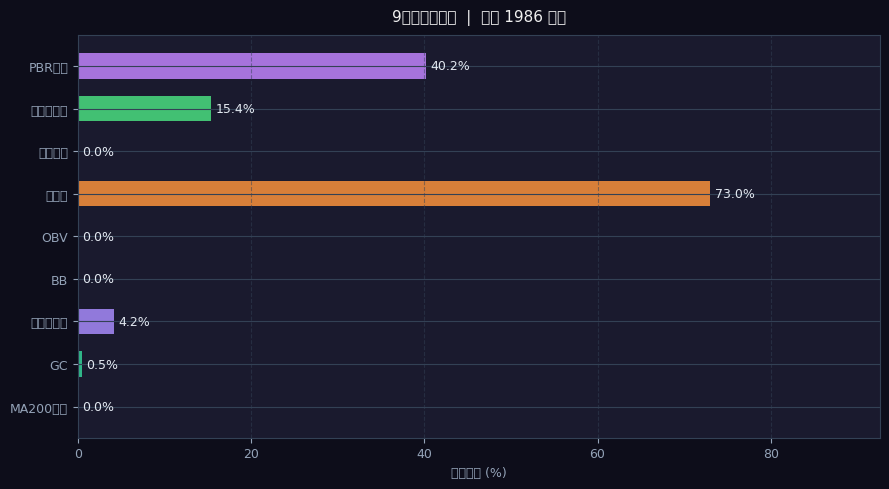
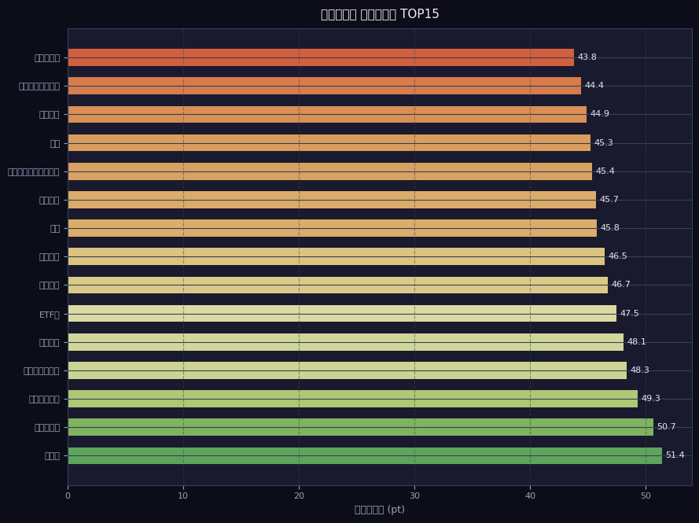

📊 セクター別集計
| セクター | 銘柄数 |
|---|---|
| ETF他 | 247 |
| 情報・通信業 | 208 |
| サービス業 | 180 |
| 電気機器 | 158 |
| 卸売業 | 150 |
| 機械 | 122 |
| 小売業 | 119 |
| 化学 | 113 |
🔔 シグナル分布
| シグナル | 銘柄数 | % | 分布 |
|---|---|---|---|
| ゴールデンクロス | 10銘柄 | 1% | |
| BB反発 | 166銘柄 | 8% | █ |
| BBブレイク | 311銘柄 | 16% | ███ |
| 出来高急増 | 305銘柄 | 15% | ███ |
| OBV上昇 | 1637銘柄 | 82% | ████████████████ |
📊 シグナル統計グラフ（Step2）


📈 Top5 スコアチャート（ローソク足 3ヶ月 / MA25・MA75・MA200・BB）
🗂️ BackLog一覧（バックテスト参考値 降順）
| 順位 | コード | 銘柄名 | セクター | スコア | BackLog | MA200 15pt | GC 10pt | 底値 10pt | BB 15pt | OBV 10pt | 雲上 10pt | 三役好転 10pt | 出来高 10pt | PBR 10pt |
|---|---|---|---|---|---|---|---|---|---|---|---|---|---|---|
| 1 | 4092 | 日本化学工業 | 化学 | 80 | 100.0%（2回） | ✅15pt | — | — | ✅15pt | ✅10pt | ✅10pt | ✅10pt | ✅10pt | ✅10pt |
| 2 | 6999 | ＫＯＡ | 電気機器 | 80 | 100.0%（1回） | ✅15pt | — | — | ✅15pt | ✅10pt | ✅10pt | ✅10pt | ✅10pt | ✅10pt |
| 3 | 3877 | 中越パルプ工業 | パルプ・紙 | 70 | 100.0%（2回） | ✅15pt | — | — | ✅15pt | ✅10pt | ✅10pt | ✅10pt | — | ✅10pt |
| 4 | 6136 | オーエスジー | 機械 | 70 | 100.0%（2回） | ✅15pt | — | — | ✅15pt | ✅10pt | ✅10pt | ✅10pt | ✅10pt | — |
| 5 | 6298 | ワイエイシイホールディングス | 機械 | 70 | 100.0%（3回） | ✅15pt | — | — | ✅15pt | ✅10pt | ✅10pt | ✅10pt | ✅10pt | — |
| 6 | 6706 | 電気興業 | 電気機器 | 70 | 100.0%（5回） | ✅15pt | — | — | ✅15pt | ✅10pt | ✅10pt | ✅10pt | — | ✅10pt |
| 7 | 7730 | マニー | 精密機器 | 70 | 100.0%（3回） | ✅15pt | — | — | ✅15pt | ✅10pt | ✅10pt | ✅10pt | ✅10pt | — |
| 8 | 8343 | 秋田銀行 | 銀行業 | 70 | 100.0%（4回） | ✅15pt | — | — | ✅15pt | ✅10pt | ✅10pt | ✅10pt | — | ✅10pt |
| 9 | 9982 | タキヒヨー | 卸売業 | 65 | 100.0%（3回） | ✅15pt | — | — | — | ✅10pt | ✅10pt | ✅10pt | ✅10pt | ✅10pt |
| 10 | 1550 | ＭＡＸＩＳ 海外株式（ＭＳＣＩコクサイ）上場投信 | - | 60 | 100.0%（2回） | ✅15pt | — | — | ✅15pt | ✅10pt | ✅10pt | ✅10pt | — | — |
| 11 | 223A | グローバルＸ ＡＩ＆ビッグデータ ＥＴＦ | - | 60 | 100.0%（2回） | ✅15pt | — | — | ✅15pt | ✅10pt | ✅10pt | ✅10pt | — | — |
| 12 | 2247 | ｉＦｒｅｅＥＴＦ Ｓ＆Ｐ５００（為替ヘッジなし） | - | 60 | 100.0%（4回） | ✅15pt | — | — | ✅15pt | ✅10pt | ✅10pt | ✅10pt | — | — |
| 13 | 2248 | ｉＦｒｅｅＥＴＦ Ｓ＆Ｐ５００（為替ヘッジあり） | - | 60 | 100.0%（2回） | ✅15pt | — | — | ✅15pt | ✅10pt | ✅10pt | ✅10pt | — | — |
| 14 | 2513 | ＮＥＸＴ ＦＵＮＤＳ 外国株式・ＭＳＣＩ－ＫＯＫＵＳＡＩ指数（為替ヘッジなし）連動型上場投信 | - | 60 | 100.0%（2回） | ✅15pt | — | — | ✅15pt | ✅10pt | ✅10pt | ✅10pt | — | — |
| 15 | 2525 | ＮＺＡＭ 上場投信 日経２２５ | - | 60 | 100.0%（2回） | ✅15pt | — | — | ✅15pt | ✅10pt | ✅10pt | ✅10pt | — | — |
| 16 | 283A | グローバルＸ ＵＳ テック・配当貴族 ＥＴＦ | - | 60 | 100.0%（1回） | ✅15pt | — | — | ✅15pt | ✅10pt | ✅10pt | ✅10pt | — | — |
| 17 | 2840 | ｉＦｒｅｅＥＴＦ ＮＡＳＤＡＱ１００（為替ヘッジなし） | - | 60 | 100.0%（2回） | ✅15pt | — | — | ✅15pt | ✅10pt | ✅10pt | ✅10pt | — | — |
| 18 | 3103 | ユニチカ | 繊維製品 | 60 | 100.0%（7回） | ✅15pt | — | — | ✅15pt | ✅10pt | ✅10pt | — | ✅10pt | — |
| 19 | 3449 | テクノフレックス | 金属製品 | 60 | 100.0%（3回） | ✅15pt | — | — | ✅15pt | ✅10pt | ✅10pt | ✅10pt | — | — |
| 20 | 356A | グローバルＸ Ｓ＆Ｐ５００ キャッシュフロー・トップ１００ ＥＴＦ | - | 60 | 100.0%（1回） | ✅15pt | — | — | ✅15pt | ✅10pt | ✅10pt | ✅10pt | — | — |
| 21 | 4022 | ラサ工業 | 化学 | 60 | 100.0%（4回） | ✅15pt | — | — | ✅15pt | ✅10pt | ✅10pt | ✅10pt | — | — |
| 22 | 4462 | 石原ケミカル | 化学 | 60 | 100.0%（3回） | ✅15pt | — | — | ✅15pt | ✅10pt | ✅10pt | ✅10pt | — | — |
| 23 | 4970 | 東洋合成工業 | 化学 | 60 | 100.0%（2回） | ✅15pt | — | — | ✅15pt | ✅10pt | ✅10pt | ✅10pt | — | — |
| 24 | 4971 | メック | 化学 | 60 | 100.0%（2回） | ✅15pt | — | — | ✅15pt | ✅10pt | ✅10pt | ✅10pt | — | — |
| 25 | 5699 | イボキン | 鉄鋼 | 60 | 100.0%（6回） | ✅15pt | — | — | ✅15pt | ✅10pt | ✅10pt | ✅10pt | — | — |
| 26 | 6258 | 平田機工 | 機械 | 60 | 100.0%（2回） | ✅15pt | — | — | ✅15pt | ✅10pt | ✅10pt | ✅10pt | — | — |
| 27 | 6504 | 富士電機 | 電気機器 | 60 | 100.0%（2回） | ✅15pt | — | — | ✅15pt | ✅10pt | ✅10pt | ✅10pt | — | — |
| 28 | 6857 | アドバンテスト | 電気機器 | 60 | 100.0%（7回） | ✅15pt | — | — | ✅15pt | ✅10pt | ✅10pt | ✅10pt | — | — |
| 29 | 6941 | 山一電機 | 電気機器 | 60 | 100.0%（3回） | ✅15pt | — | — | ✅15pt | ✅10pt | ✅10pt | ✅10pt | — | — |
| 30 | 7453 | 良品計画 | 小売業 | 60 | 100.0%（4回） | ✅15pt | — | — | ✅15pt | ✅10pt | ✅10pt | ✅10pt | — | — |
| 31 | 8081 | カナデン | 卸売業 | 60 | 100.0%（9回） | ✅15pt | — | — | ✅15pt | ✅10pt | ✅10pt | ✅10pt | — | — |
| 32 | 9344 | アクシスコンサルティング | サービス業 | 60 | 100.0%（3回） | ✅15pt | — | — | ✅15pt | ✅10pt | ✅10pt | ✅10pt | — | — |
| 33 | 1381 | アクシーズ | 水産・農林業 | 55 | 100.0%（6回） | ✅15pt | — | — | — | ✅10pt | ✅10pt | ✅10pt | — | ✅10pt |
| 34 | 1630 | ＮＥＸＴ ＦＵＮＤＳ 小売（ＴＯＰＩＸ－１７）上場投信 | - | 55 | 100.0%（7回） | ✅15pt | — | — | — | ✅10pt | ✅10pt | ✅10pt | ✅10pt | — |
| 35 | 1966 | 高田工業所 | 建設業 | 55 | 100.0%（4回） | ✅15pt | — | — | — | ✅10pt | ✅10pt | ✅10pt | — | ✅10pt |
| 36 | 2080 | ＰＢＲ１倍割れ解消推進ＥＴＦ | - | 55 | 100.0%（1回） | ✅15pt | — | — | — | ✅10pt | ✅10pt | ✅10pt | ✅10pt | — |
| 37 | 2207 | ｍｅｉｔｏ | 食料品 | 55 | 100.0%（3回） | ✅15pt | — | — | — | ✅10pt | ✅10pt | ✅10pt | — | ✅10pt |
| 38 | 221A | ＭＡＸＩＳ日経半導体株上場投信 | - | 55 | 100.0%（3回） | ✅15pt | — | — | — | ✅10pt | ✅10pt | ✅10pt | ✅10pt | — |
| 39 | 2644 | グローバルＸ 半導体関連－日本株式 ＥＴＦ | - | 55 | 100.0%（2回） | — | — | — | ✅15pt | ✅10pt | ✅10pt | ✅10pt | ✅10pt | — |
| 40 | 278A | Ｔｅｒｒａ Ｄｒｏｎｅ | 精密機器 | 55 | 100.0%（2回） | — | — | — | ✅15pt | ✅10pt | ✅10pt | ✅10pt | ✅10pt | — |
| 41 | 3355 | クリヤマホールディングス | 卸売業 | 55 | 100.0%（1回） | ✅15pt | — | — | — | ✅10pt | ✅10pt | ✅10pt | — | ✅10pt |
| 42 | 3443 | 川田テクノロジーズ | 金属製品 | 55 | 100.0%（1回） | ✅15pt | — | — | — | ✅10pt | ✅10pt | ✅10pt | — | ✅10pt |
| 43 | 3512 | 日本フエルト | 繊維製品 | 55 | 100.0%（3回） | ✅15pt | — | — | — | ✅10pt | ✅10pt | ✅10pt | — | ✅10pt |
| 44 | 4116 | 大日精化工業 | 化学 | 55 | 100.0%（2回） | ✅15pt | — | — | — | ✅10pt | ✅10pt | ✅10pt | — | ✅10pt |
| 45 | 4690 | 日本パレットプール | サービス業 | 55 | 100.0%（4回） | ✅15pt | — | — | — | ✅10pt | ✅10pt | ✅10pt | — | ✅10pt |
| 46 | 5195 | バンドー化学 | ゴム製品 | 55 | 100.0%（4回） | ✅15pt | — | — | — | ✅10pt | ✅10pt | ✅10pt | — | ✅10pt |
| 47 | 5702 | 大紀アルミニウム工業所 | 非鉄金属 | 55 | 100.0%（3回） | ✅15pt | — | — | — | ✅10pt | ✅10pt | ✅10pt | — | ✅10pt |
| 48 | 6264 | マルマエ | 機械 | 55 | 100.0%（1回） | ✅15pt | — | — | — | ✅10pt | ✅10pt | ✅10pt | — | ✅10pt |
| 49 | 6505 | 東洋電機製造 | 電気機器 | 55 | 100.0%（4回） | ✅15pt | — | — | — | ✅10pt | ✅10pt | ✅10pt | — | ✅10pt |
| 50 | 6771 | 池上通信機 | 電気機器 | 55 | 100.0%（4回） | ✅15pt | — | — | — | ✅10pt | ✅10pt | ✅10pt | — | ✅10pt |
| 51 | 6901 | 澤藤電機 | 電気機器 | 55 | 100.0%（2回） | ✅15pt | — | — | — | — | ✅10pt | ✅10pt | ✅10pt | ✅10pt |
| 52 | 7173 | 東京きらぼしフィナンシャルグループ | 銀行業 | 55 | 100.0%（1回） | ✅15pt | — | — | — | ✅10pt | ✅10pt | ✅10pt | — | ✅10pt |
| 53 | 7242 | カヤバ | 輸送用機器 | 55 | 100.0%（1回） | ✅15pt | — | — | — | ✅10pt | ✅10pt | ✅10pt | — | ✅10pt |
| 54 | 7327 | 第四北越フィナンシャルグループ | 銀行業 | 55 | 100.0%（3回） | ✅15pt | — | — | — | ✅10pt | ✅10pt | ✅10pt | — | ✅10pt |
| 55 | 7368 | 表示灯 | サービス業 | 55 | 100.0%（7回） | ✅15pt | — | — | — | ✅10pt | ✅10pt | ✅10pt | — | ✅10pt |
| 56 | 7380 | 十六フィナンシャルグループ | 銀行業 | 55 | 100.0%（1回） | ✅15pt | — | — | — | ✅10pt | ✅10pt | ✅10pt | — | ✅10pt |
| 57 | 7425 | 初穂商事 | 卸売業 | 55 | 100.0%（1回） | ✅15pt | — | — | — | ✅10pt | ✅10pt | ✅10pt | — | ✅10pt |
| 58 | 7487 | 小津産業 | 卸売業 | 55 | 100.0%（6回） | ✅15pt | — | — | — | ✅10pt | ✅10pt | ✅10pt | — | ✅10pt |
| 59 | 7609 | ダイトロン | 卸売業 | 55 | 100.0%（3回） | ✅15pt | — | — | — | ✅10pt | ✅10pt | ✅10pt | ✅10pt | — |
| 60 | 7613 | シークス | 卸売業 | 55 | 100.0%（3回） | ✅15pt | — | — | — | ✅10pt | ✅10pt | ✅10pt | — | ✅10pt |
| 61 | 7989 | 立川ブラインド工業 | 金属製品 | 55 | 100.0%（1回） | ✅15pt | — | — | — | ✅10pt | ✅10pt | ✅10pt | — | ✅10pt |
| 62 | 8219 | 青山商事 | 小売業 | 55 | 100.0%（2回） | ✅15pt | — | — | — | ✅10pt | ✅10pt | ✅10pt | — | ✅10pt |
| 63 | 8346 | 東邦銀行 | 銀行業 | 55 | 100.0%（1回） | ✅15pt | — | — | — | ✅10pt | ✅10pt | ✅10pt | — | ✅10pt |
| 64 | 8360 | 山梨中央銀行 | 銀行業 | 55 | 100.0%（3回） | ✅15pt | — | — | — | ✅10pt | ✅10pt | ✅10pt | — | ✅10pt |
| 65 | 8361 | 大垣共立銀行 | 銀行業 | 55 | 100.0%（2回） | ✅15pt | — | — | — | ✅10pt | ✅10pt | ✅10pt | — | ✅10pt |
| 66 | 8386 | 百十四銀行 | 銀行業 | 55 | 100.0%（3回） | ✅15pt | — | — | — | ✅10pt | ✅10pt | ✅10pt | — | ✅10pt |
| 67 | 8387 | 四国銀行 | 銀行業 | 55 | 100.0%（3回） | ✅15pt | — | — | — | ✅10pt | ✅10pt | ✅10pt | — | ✅10pt |
| 68 | 8522 | 名古屋銀行 | 銀行業 | 55 | 100.0%（1回） | ✅15pt | — | — | — | ✅10pt | ✅10pt | ✅10pt | — | ✅10pt |
| 69 | 8544 | 京葉銀行 | 銀行業 | 55 | 100.0%（1回） | ✅15pt | — | — | — | ✅10pt | ✅10pt | ✅10pt | — | ✅10pt |
| 70 | 8551 | 北日本銀行 | 銀行業 | 55 | 100.0%（5回） | ✅15pt | — | — | — | ✅10pt | ✅10pt | ✅10pt | — | ✅10pt |
| 71 | 8700 | 丸八証券 | 証券、商品先物取引業 | 55 | 100.0%（3回） | ✅15pt | — | — | — | ✅10pt | ✅10pt | ✅10pt | — | ✅10pt |
| 72 | 8715 | アニコム ホールディングス | 保険業 | 55 | 100.0%（2回） | ✅15pt | — | — | — | ✅10pt | ✅10pt | ✅10pt | ✅10pt | — |
| 73 | 8953 | 日本都市ファンド投資法人 | - | 55 | 100.0%（2回） | ✅15pt | — | — | — | ✅10pt | ✅10pt | ✅10pt | — | ✅10pt |
| 74 | 8984 | 大和ハウスリート投資法人 | - | 55 | 100.0%（6回） | ✅15pt | — | — | — | ✅10pt | ✅10pt | ✅10pt | — | ✅10pt |
| 75 | 9171 | 栗林商船 | 海運業 | 55 | 100.0%（2回） | ✅15pt | — | — | — | ✅10pt | ✅10pt | ✅10pt | — | ✅10pt |
| 76 | 9816 | ストライダーズ | 不動産業 | 55 | 100.0%（1回） | ✅15pt | — | — | — | ✅10pt | ✅10pt | ✅10pt | ✅10pt | — |
| 77 | 2060 | フィード・ワン | 食料品 | 50 | 100.0%（7回） | ✅15pt | — | — | ✅15pt | ✅10pt | — | — | — | ✅10pt |
| 78 | 3691 | デジタルプラス | 情報・通信業 | 50 | 100.0%（6回） | ✅15pt | — | — | ✅15pt | ✅10pt | ✅10pt | — | — | — |
| 79 | 3943 | 大石産業 | パルプ・紙 | 50 | 100.0%（1回） | ✅15pt | — | — | ✅15pt | — | — | — | ✅10pt | ✅10pt |
| 80 | 7050 | フロンティアインターナショナル | サービス業 | 50 | 100.0%（1回） | ✅15pt | — | — | ✅15pt | ✅10pt | ✅10pt | — | — | — |
| 81 | 7608 | エスケイジャパン | 卸売業 | 50 | 100.0%（1回） | ✅15pt | — | — | ✅15pt | ✅10pt | ✅10pt | — | — | — |
| 82 | 1319 | ＮＥＸＴ ＦＵＮＤＳ 日経３００株価指数連動型上場投信 | - | 45 | 100.0%（2回） | ✅15pt | — | — | — | ✅10pt | ✅10pt | — | ✅10pt | — |
| 83 | 138A | 光フードサービス | 小売業 | 45 | 100.0%（3回） | ✅15pt | — | — | — | ✅10pt | ✅10pt | ✅10pt | — | — |
| 84 | 1475 | ｉシェアーズ・コア ＴＯＰＩＸ ＥＴＦ | - | 45 | 100.0%（1回） | ✅15pt | — | — | — | ✅10pt | ✅10pt | ✅10pt | — | — |
| 85 | 1478 | ｉシェアーズ ＭＳＣＩ ジャパン高配当利回り ＥＴＦ | - | 45 | 100.0%（2回） | ✅15pt | — | — | — | ✅10pt | ✅10pt | ✅10pt | — | — |
| 86 | 1546 | ＮＥＸＴ ＦＵＮＤＳ ダウ・ジョーンズ工業株３０種平均株価（為替ヘッジなし）連動型上場投信 | - | 45 | 100.0%（2回） | ✅15pt | — | — | — | ✅10pt | ✅10pt | ✅10pt | — | — |
| 87 | 1568 | ＴＯＰＩＸブル２倍上場投信 | - | 45 | 100.0%（1回） | ✅15pt | — | — | — | ✅10pt | ✅10pt | ✅10pt | — | — |
| 88 | 1615 | ＮＥＸＴ ＦＵＮＤＳ 東証銀行業株価指数連動型上場投信 | - | 45 | 100.0%（3回） | ✅15pt | — | — | — | ✅10pt | ✅10pt | ✅10pt | — | — |
| 89 | 1652 | ｉＦｒｅｅＥＴＦ ＭＳＣＩ日本株女性活躍指数（ＷＩＮ） | - | 45 | 100.0%（2回） | ✅15pt | — | — | — | ✅10pt | ✅10pt | ✅10pt | — | — |
| 90 | 1657 | ｉシェアーズ・コア ＭＳＣＩ 先進国株（除く日本）ＥＴＦ | - | 45 | 100.0%（2回） | ✅15pt | — | — | — | ✅10pt | ✅10pt | ✅10pt | — | — |
| 91 | 1680 | 上場インデックスファンド海外先進国株式（ＭＳＣＩ－ＫＯＫＵＳＡＩ） | - | 45 | 100.0%（2回） | ✅15pt | — | — | — | ✅10pt | ✅10pt | ✅10pt | — | — |
| 92 | 1698 | 上場インデックスファンド日本高配当（東証配当フォーカス１００） | - | 45 | 100.0%（5回） | ✅15pt | — | — | — | ✅10pt | ✅10pt | ✅10pt | — | — |
| 93 | 1776 | 三井住建道路 | 建設業 | 45 | 100.0%（2回） | ✅15pt | — | — | — | ✅10pt | ✅10pt | ✅10pt | — | — |
| 94 | 1950 | 日本電設工業 | 建設業 | 45 | 100.0%（1回） | ✅15pt | — | — | — | ✅10pt | ✅10pt | ✅10pt | — | — |
| 95 | 200A | ＮＥＸＴ ＦＵＮＤＳ 日経半導体株指数連動型上場投信 | - | 45 | 100.0%（2回） | ✅15pt | — | — | — | ✅10pt | ✅10pt | ✅10pt | — | — |
| 96 | 2081 | 政策保有解消推進ＥＴＦ | - | 45 | 100.0%（3回） | ✅15pt | — | — | — | ✅10pt | ✅10pt | ✅10pt | — | — |
| 97 | 213A | 上場インデックスファンド日経半導体株 | - | 45 | 100.0%（3回） | ✅15pt | — | — | — | ✅10pt | ✅10pt | ✅10pt | — | — |
| 98 | 2201 | 森永製菓 | 食料品 | 45 | 100.0%（1回） | ✅15pt | — | — | — | ✅10pt | ✅10pt | ✅10pt | — | — |
| 99 | 2411 | ゲンダイエージェンシー | 情報・通信業 | 45 | 100.0%（1回） | ✅15pt | — | — | — | — | ✅10pt | ✅10pt | ✅10pt | — |
| 100 | 2493 | イーサポートリンク | サービス業 | 45 | 100.0%（5回） | ✅15pt | — | — | — | ✅10pt | ✅10pt | ✅10pt | — | — |
| 101 | 2524 | ＮＺＡＭ 上場投信 ＴＯＰＩＸ | - | 45 | 100.0%（3回） | ✅15pt | — | — | — | ✅10pt | ✅10pt | ✅10pt | — | — |
| 102 | 2530 | ＭＡＸＩＳ ＨｕａＡｎ中国株式（上海１８０Ａ株）上場投信 | - | 45 | 100.0%（1回） | ✅15pt | — | — | — | ✅10pt | ✅10pt | ✅10pt | — | — |
| 103 | 2557 | ＳＭＤＡＭ トピックス上場投信 | - | 45 | 100.0%（3回） | ✅15pt | — | — | — | ✅10pt | ✅10pt | ✅10pt | — | — |
| 104 | 2597 | ユニカフェ | 食料品 | 45 | 100.0%（2回） | ✅15pt | — | — | — | ✅10pt | ✅10pt | ✅10pt | — | — |
| 105 | 2637 | グローバルＸ クリーンテック－日本株式 ＥＴＦ | - | 45 | 100.0%（1回） | ✅15pt | — | — | — | ✅10pt | ✅10pt | ✅10pt | — | — |
| 106 | 2641 | グローバルＸ グローバルリーダーズ－日本株式 ＥＴＦ | - | 45 | 100.0%（2回） | ✅15pt | — | — | — | ✅10pt | ✅10pt | ✅10pt | — | — |
| 107 | 2844 | 上場インデックスファンド豪州国債（為替ヘッジなし） | - | 45 | 100.0%（4回） | ✅15pt | — | — | — | ✅10pt | ✅10pt | ✅10pt | — | — |
| 108 | 2993 | 長栄 | 不動産業 | 45 | 100.0%（2回） | ✅15pt | — | — | — | ✅10pt | ✅10pt | — | — | ✅10pt |
| 109 | 3106 | 倉敷紡績 | 繊維製品 | 45 | 100.0%（2回） | ✅15pt | — | — | — | ✅10pt | ✅10pt | ✅10pt | — | — |
| 110 | 336A | ダイナミックマッププラットフォーム | 情報・通信業 | 45 | 100.0%（1回） | — | — | — | ✅15pt | ✅10pt | ✅10pt | — | ✅10pt | — |
| 111 | 3417 | 大木ヘルスケアホールディングス | 卸売業 | 45 | 100.0%（3回） | ✅15pt | — | — | — | — | ✅10pt | ✅10pt | — | ✅10pt |
| 112 | 3441 | 山王 | 金属製品 | 45 | 100.0%（5回） | ✅15pt | — | — | — | ✅10pt | ✅10pt | ✅10pt | — | — |
| 113 | 3562 | Ｎｏ．１ | 卸売業 | 45 | 100.0%（2回） | — | — | — | ✅15pt | ✅10pt | ✅10pt | ✅10pt | — | — |
| 114 | 4076 | シイエヌエス | 情報・通信業 | 45 | 100.0%（6回） | ✅15pt | — | — | — | ✅10pt | ✅10pt | ✅10pt | — | — |
| 115 | 4187 | 大阪有機化学工業 | 化学 | 45 | 100.0%（1回） | ✅15pt | — | — | — | ✅10pt | ✅10pt | ✅10pt | — | — |
| 116 | 4255 | ＴＨＥＣＯＯ | 情報・通信業 | 45 | 100.0%（1回） | ✅15pt | — | — | — | ✅10pt | ✅10pt | ✅10pt | — | — |
| 117 | 4368 | 扶桑化学工業 | 化学 | 45 | 100.0%（4回） | ✅15pt | — | — | — | ✅10pt | ✅10pt | ✅10pt | — | — |
| 118 | 4445 | リビン・テクノロジーズ | 情報・通信業 | 45 | 100.0%（4回） | ✅15pt | — | ✅10pt | — | ✅10pt | — | — | ✅10pt | — |
| 119 | 4503 | アステラス製薬 | 医薬品 | 45 | 100.0%（3回） | ✅15pt | — | — | — | ✅10pt | ✅10pt | ✅10pt | — | — |
| 120 | 4743 | アイティフォー | 情報・通信業 | 45 | 100.0%（8回） | ✅15pt | — | — | — | ✅10pt | ✅10pt | ✅10pt | — | — |
| 121 | 5214 | 日本電気硝子 | ガラス・土石製品 | 45 | 100.0%（4回） | ✅15pt | — | — | — | ✅10pt | ✅10pt | ✅10pt | — | — |
| 122 | 5333 | 日本碍子 | ガラス・土石製品 | 45 | 100.0%（1回） | ✅15pt | — | — | — | ✅10pt | ✅10pt | ✅10pt | — | — |
| 123 | 5384 | フジミインコーポレーテッド | ガラス・土石製品 | 45 | 100.0%（5回） | ✅15pt | — | — | — | ✅10pt | ✅10pt | ✅10pt | — | — |
| 124 | 5393 | ニチアス | ガラス・土石製品 | 45 | 100.0%（3回） | ✅15pt | — | — | — | ✅10pt | ✅10pt | ✅10pt | — | — |
| 125 | 5603 | 虹技 | 鉄鋼 | 45 | 100.0%（6回） | ✅15pt | — | — | — | ✅10pt | ✅10pt | — | — | ✅10pt |
| 126 | 5711 | 三菱マテリアル | 非鉄金属 | 45 | 100.0%（4回） | ✅15pt | — | — | — | ✅10pt | ✅10pt | ✅10pt | — | — |
| 127 | 5803 | フジクラ | 非鉄金属 | 45 | 100.0%（2回） | ✅15pt | — | — | — | ✅10pt | ✅10pt | ✅10pt | — | — |
| 128 | 5830 | いよぎんホールディングス | 銀行業 | 45 | 100.0%（7回） | ✅15pt | — | — | — | ✅10pt | ✅10pt | ✅10pt | — | — |
| 129 | 5831 | しずおかフィナンシャルグループ | 銀行業 | 45 | 100.0%（2回） | ✅15pt | — | — | — | ✅10pt | ✅10pt | ✅10pt | — | — |
| 130 | 5922 | 那須電機鉄工 | 金属製品 | 45 | 100.0%（3回） | ✅15pt | — | — | — | ✅10pt | ✅10pt | — | — | ✅10pt |
| 131 | 5971 | 共和工業所 | 金属製品 | 45 | 100.0%（3回） | ✅15pt | — | — | — | — | ✅10pt | ✅10pt | — | ✅10pt |
| 132 | 6039 | 日本動物高度医療センター | サービス業 | 45 | 100.0%（2回） | ✅15pt | — | — | — | ✅10pt | ✅10pt | ✅10pt | — | — |
| 133 | 6101 | ツガミ | 機械 | 45 | 100.0%（2回） | ✅15pt | — | — | — | ✅10pt | ✅10pt | ✅10pt | — | — |
| 134 | 6278 | ユニオンツール | 機械 | 45 | 100.0%（2回） | ✅15pt | — | — | — | ✅10pt | ✅10pt | ✅10pt | — | — |
| 135 | 6323 | ローツェ | 機械 | 45 | 100.0%（2回） | ✅15pt | — | — | — | ✅10pt | ✅10pt | ✅10pt | — | — |
| 136 | 6361 | 荏原製作所 | 機械 | 45 | 100.0%（4回） | ✅15pt | — | — | — | ✅10pt | ✅10pt | ✅10pt | — | — |
| 137 | 6376 | 日機装 | 精密機器 | 45 | 100.0%（3回） | ✅15pt | — | — | — | ✅10pt | ✅10pt | ✅10pt | — | — |
| 138 | 6503 | 三菱電機 | 電気機器 | 45 | 100.0%（3回） | ✅15pt | — | — | — | ✅10pt | ✅10pt | ✅10pt | — | — |
| 139 | 6508 | 明電舎 | 電気機器 | 45 | 100.0%（2回） | ✅15pt | — | — | — | ✅10pt | ✅10pt | ✅10pt | — | — |
| 140 | 6625 | ＪＡＬＣＯホールディングス | 不動産業 | 45 | 100.0%（6回） | ✅15pt | — | — | — | ✅10pt | ✅10pt | ✅10pt | — | — |
| 141 | 6754 | アンリツ | 電気機器 | 45 | 100.0%（1回） | ✅15pt | — | — | — | ✅10pt | ✅10pt | ✅10pt | — | — |
| 142 | 6779 | 日本電波工業 | 電気機器 | 45 | 100.0%（5回） | ✅15pt | — | — | — | ✅10pt | ✅10pt | ✅10pt | — | — |
| 143 | 6814 | 古野電気 | 電気機器 | 45 | 100.0%（2回） | ✅15pt | — | — | — | ✅10pt | ✅10pt | ✅10pt | — | — |
| 144 | 6822 | 大井電気 | 電気機器 | 45 | 100.0%（2回） | ✅15pt | — | — | — | ✅10pt | ✅10pt | — | — | ✅10pt |
| 145 | 6850 | チノー | 電気機器 | 45 | 100.0%（1回） | ✅15pt | — | — | — | ✅10pt | ✅10pt | ✅10pt | — | — |
| 146 | 6874 | 協立電機 | 電気機器 | 45 | 100.0%（2回） | ✅15pt | — | — | — | ✅10pt | ✅10pt | — | ✅10pt | — |
| 147 | 7455 | パリミキホールディングス | 小売業 | 45 | 100.0%（3回） | ✅15pt | — | — | — | — | ✅10pt | ✅10pt | — | ✅10pt |
| 148 | 7673 | ダイコー通産 | 卸売業 | 45 | 100.0%（3回） | ✅15pt | — | — | — | ✅10pt | ✅10pt | ✅10pt | — | — |
| 149 | 7741 | ＨＯＹＡ | 精密機器 | 45 | 100.0%（3回） | ✅15pt | — | — | — | ✅10pt | ✅10pt | ✅10pt | — | — |
| 150 | 7919 | 野崎印刷紙業 | その他製品 | 45 | 100.0%（3回） | ✅15pt | — | — | — | ✅10pt | ✅10pt | — | — | ✅10pt |
| 151 | 8012 | 長瀬産業 | 卸売業 | 45 | 100.0%（2回） | ✅15pt | — | — | — | ✅10pt | ✅10pt | ✅10pt | — | — |
| 152 | 8218 | コメリ | 小売業 | 45 | 100.0%（3回） | ✅15pt | — | — | — | — | ✅10pt | ✅10pt | — | ✅10pt |
| 153 | 8358 | スルガ銀行 | 銀行業 | 45 | 100.0%（2回） | ✅15pt | — | — | — | ✅10pt | ✅10pt | ✅10pt | — | — |
| 154 | 8370 | 紀陽銀行 | 銀行業 | 45 | 100.0%（1回） | ✅15pt | — | — | — | ✅10pt | ✅10pt | ✅10pt | — | — |
| 155 | 8411 | みずほフィナンシャルグループ | 銀行業 | 45 | 100.0%（5回） | ✅15pt | — | — | — | ✅10pt | ✅10pt | ✅10pt | — | — |
| 156 | 8714 | 池田泉州ホールディングス | 銀行業 | 45 | 100.0%（2回） | ✅15pt | — | — | — | ✅10pt | ✅10pt | ✅10pt | — | — |
| 157 | 8923 | トーセイ | 不動産業 | 45 | 100.0%（8回） | ✅15pt | — | — | — | ✅10pt | ✅10pt | ✅10pt | — | — |
| 158 | 8934 | サンフロンティア不動産 | 不動産業 | 45 | 100.0%（1回） | ✅15pt | — | — | — | ✅10pt | ✅10pt | ✅10pt | — | — |
| 159 | 9119 | 飯野海運 | 海運業 | 45 | 100.0%（3回） | ✅15pt | — | — | — | ✅10pt | ✅10pt | ✅10pt | — | — |
| 160 | 9304 | 澁澤倉庫 | 倉庫・運輸関連業 | 45 | 100.0%（4回） | ✅15pt | — | — | — | ✅10pt | ✅10pt | ✅10pt | — | — |
| 161 | 9306 | 東陽倉庫 | 倉庫・運輸関連業 | 45 | 100.0%（1回） | ✅15pt | — | — | — | — | ✅10pt | ✅10pt | — | ✅10pt |
| 162 | 1605 | ＩＮＰＥＸ | 鉱業 | 40 | 100.0%（5回） | ✅15pt | — | — | ✅15pt | — | — | — | — | ✅10pt |
| 163 | 1810 | 松井建設 | 建設業 | 40 | 100.0%（1回） | ✅15pt | — | — | ✅15pt | — | — | — | — | ✅10pt |
| 164 | 2645 | グローバルＸ レジャー＆エンターテインメント－日本株式 ＥＴＦ | - | 40 | 100.0%（1回） | — | — | — | — | ✅10pt | ✅10pt | ✅10pt | ✅10pt | — |
| 165 | 3288 | オープンハウスグループ | 不動産業 | 40 | 100.0%（2回） | ✅15pt | — | — | ✅15pt | — | — | — | ✅10pt | — |
| 166 | 4412 | サイエンスアーツ | 情報・通信業 | 40 | 100.0%（1回） | ✅15pt | — | — | ✅15pt | — | — | — | ✅10pt | — |
| 167 | 4413 | ボードルア | 情報・通信業 | 40 | 100.0%（2回） | — | — | — | — | ✅10pt | ✅10pt | ✅10pt | ✅10pt | — |
| 168 | 5357 | ヨータイ | ガラス・土石製品 | 40 | 100.0%（3回） | ✅15pt | — | — | ✅15pt | — | — | — | — | ✅10pt |
| 169 | 6898 | トミタ電機 | 電気機器 | 40 | 100.0%（2回） | ✅15pt | — | — | ✅15pt | — | — | — | — | ✅10pt |
| 170 | 7417 | 南陽 | 卸売業 | 40 | 100.0%（4回） | ✅15pt | — | — | ✅15pt | — | — | — | — | ✅10pt |
| 171 | 7727 | オーバル | 精密機器 | 40 | 100.0%（3回） | ✅15pt | — | — | ✅15pt | — | — | — | — | ✅10pt |
| 172 | 8125 | ワキタ | 卸売業 | 40 | 100.0%（5回） | ✅15pt | — | — | ✅15pt | — | — | — | — | ✅10pt |
| 173 | 8591 | オリックス | その他金融業 | 40 | 100.0%（2回） | ✅15pt | — | — | ✅15pt | ✅10pt | — | — | — | — |
| 174 | 9303 | 住友倉庫 | 倉庫・運輸関連業 | 40 | 100.0%（2回） | ✅15pt | — | — | ✅15pt | ✅10pt | — | — | — | — |
| 175 | 9761 | 東海リース | サービス業 | 40 | 100.0%（1回） | ✅15pt | — | — | ✅15pt | — | — | — | — | ✅10pt |
| 176 | 9991 | ジェコス | 卸売業 | 40 | 100.0%（1回） | ✅15pt | — | — | ✅15pt | — | — | — | — | ✅10pt |
| 177 | 1627 | ＮＥＸＴ ＦＵＮＤＳ 電力・ガス（ＴＯＰＩＸ－１７）上場投信 | - | 35 | 100.0%（3回） | ✅15pt | — | — | — | ✅10pt | — | — | ✅10pt | — |
| 178 | 1651 | ｉＦｒｅｅＥＴＦ ＴＯＰＩＸ高配当４０指数 | - | 35 | 100.0%（2回） | ✅15pt | — | — | — | — | ✅10pt | ✅10pt | — | — |
| 179 | 1653 | ｉＦｒｅｅＥＴＦ ＭＳＣＩジャパンＥＳＧセレクト・リーダーズ指数 | - | 35 | 100.0%（3回） | ✅15pt | — | — | — | — | ✅10pt | ✅10pt | — | — |
| 180 | 1788 | 三東工業社 | 建設業 | 35 | 100.0%（2回） | ✅15pt | — | — | — | ✅10pt | — | — | — | ✅10pt |
| 181 | 2072 | トップシェアインデックス（ネットリターン）ＥＴＮ | - | 35 | 100.0%（1回） | ✅15pt | — | — | — | — | ✅10pt | ✅10pt | — | — |
| 182 | 2112 | 塩水港精糖 | 食料品 | 35 | 100.0%（1回） | ✅15pt | — | — | — | ✅10pt | — | — | — | ✅10pt |
| 183 | 2526 | ＮＺＡＭ 上場投信 ＪＰＸ日経４００ | - | 35 | 100.0%（1回） | ✅15pt | — | — | — | — | ✅10pt | ✅10pt | — | — |
| 184 | 2730 | エディオン | 小売業 | 35 | 100.0%（6回） | ✅15pt | — | — | — | ✅10pt | — | — | — | ✅10pt |
| 185 | 2805 | ヱスビー食品 | 食料品 | 35 | 100.0%（2回） | ✅15pt | — | — | — | — | ✅10pt | ✅10pt | — | — |
| 186 | 2813 | 和弘食品 | 食料品 | 35 | 100.0%（3回） | ✅15pt | — | — | — | ✅10pt | — | — | — | ✅10pt |
| 187 | 2982 | ＡＤワークスグループ | 不動産業 | 35 | 100.0%（1回） | ✅15pt | — | ✅10pt | — | ✅10pt | — | — | — | — |
| 188 | 3004 | 神栄 | 卸売業 | 35 | 100.0%（5回） | ✅15pt | — | — | — | ✅10pt | — | — | — | ✅10pt |
| 189 | 3020 | アプライド | 小売業 | 35 | 100.0%（5回） | ✅15pt | — | — | — | ✅10pt | — | — | — | ✅10pt |
| 190 | 3082 | きちりホールディングス | 小売業 | 35 | 100.0%（7回） | ✅15pt | — | — | — | — | ✅10pt | ✅10pt | — | — |
| 191 | 3156 | レスター | 卸売業 | 35 | 100.0%（6回） | ✅15pt | — | — | — | ✅10pt | — | — | — | ✅10pt |
| 192 | 3201 | 日本毛織 | 繊維製品 | 35 | 100.0%（2回） | ✅15pt | — | — | — | ✅10pt | — | — | — | ✅10pt |
| 193 | 3350 | メタプラネット | 卸売業 | 35 | 100.0%（1回） | — | — | — | ✅15pt | ✅10pt | — | — | — | ✅10pt |
| 194 | 3437 | 特殊電極 | 金属製品 | 35 | 100.0%（4回） | ✅15pt | — | — | — | ✅10pt | — | — | — | ✅10pt |
| 195 | 3551 | ダイニック | 繊維製品 | 35 | 100.0%（3回） | ✅15pt | — | — | — | ✅10pt | — | — | — | ✅10pt |
| 196 | 3656 | ＫＬａｂ | 情報・通信業 | 35 | 100.0%（4回） | ✅15pt | — | — | — | ✅10pt | — | — | ✅10pt | — |
| 197 | 3944 | 古林紙工 | パルプ・紙 | 35 | 100.0%（1回） | ✅15pt | — | — | — | ✅10pt | — | — | — | ✅10pt |
| 198 | 4272 | 日本化薬 | 化学 | 35 | 100.0%（7回） | ✅15pt | — | — | — | ✅10pt | — | — | — | ✅10pt |
| 199 | 5162 | 朝日ラバー | ゴム製品 | 35 | 100.0%（2回） | ✅15pt | — | — | — | ✅10pt | — | — | — | ✅10pt |
| 200 | 5288 | アジアパイルホールディングス | ガラス・土石製品 | 35 | 100.0%（4回） | ✅15pt | — | — | — | — | ✅10pt | ✅10pt | — | — |
| 201 | 5363 | 東京窯業 | ガラス・土石製品 | 35 | 100.0%（4回） | ✅15pt | — | — | — | ✅10pt | — | — | — | ✅10pt |
| 202 | 5632 | 三菱製鋼 | 鉄鋼 | 35 | 100.0%（3回） | ✅15pt | — | — | — | ✅10pt | — | — | — | ✅10pt |
| 203 | 6248 | 横田製作所 | 機械 | 35 | 100.0%（1回） | ✅15pt | — | — | — | — | ✅10pt | ✅10pt | — | — |
| 204 | 6433 | ヒーハイスト | 機械 | 35 | 100.0%（1回） | ✅15pt | — | — | — | ✅10pt | — | — | ✅10pt | — |
| 205 | 6454 | マックス | 機械 | 35 | 100.0%（1回） | ✅15pt | — | — | — | — | ✅10pt | ✅10pt | — | — |
| 206 | 6471 | 日本精工 | 機械 | 35 | 100.0%（1回） | ✅15pt | — | — | — | ✅10pt | — | — | — | ✅10pt |
| 207 | 6484 | ＫＶＫ | 機械 | 35 | 100.0%（2回） | ✅15pt | — | — | — | ✅10pt | — | — | — | ✅10pt |
| 208 | 6518 | 三相電機 | 電気機器 | 35 | 100.0%（2回） | ✅15pt | — | — | — | ✅10pt | — | — | — | ✅10pt |
| 209 | 6584 | 三櫻工業 | 輸送用機器 | 35 | 100.0%（2回） | — | — | — | ✅15pt | ✅10pt | — | — | — | ✅10pt |
| 210 | 6643 | 戸上電機製作所 | 電気機器 | 35 | 100.0%（4回） | ✅15pt | — | — | — | ✅10pt | ✅10pt | — | — | — |
| 211 | 6743 | 大同信号 | 電気機器 | 35 | 100.0%（2回） | ✅15pt | — | — | — | ✅10pt | — | — | — | ✅10pt |
| 212 | 7088 | フォーラムエンジニアリング | サービス業 | 35 | 100.0%（3回） | ✅15pt | — | — | — | — | ✅10pt | ✅10pt | — | — |
| 213 | 7191 | イントラスト | その他金融業 | 35 | 100.0%（3回） | ✅15pt | — | — | — | ✅10pt | ✅10pt | — | — | — |
| 214 | 7192 | 日本モーゲージサービス | その他金融業 | 35 | 100.0%（3回） | ✅15pt | — | — | — | ✅10pt | ✅10pt | — | — | — |
| 215 | 7266 | 今仙電機製作所 | 輸送用機器 | 35 | 100.0%（1回） | ✅15pt | — | — | — | ✅10pt | — | — | — | ✅10pt |
| 216 | 7299 | フジオーゼックス | 輸送用機器 | 35 | 100.0%（3回） | ✅15pt | — | — | — | ✅10pt | — | — | — | ✅10pt |
| 217 | 7383 | ネットプロテクションズホールディングス | その他金融業 | 35 | 100.0%（2回） | — | — | — | ✅15pt | ✅10pt | ✅10pt | — | — | — |
| 218 | 7565 | 萬世電機 | 卸売業 | 35 | 100.0%（2回） | ✅15pt | — | — | — | ✅10pt | — | — | — | ✅10pt |
| 219 | 7875 | 竹田ｉＰホールディングス | その他製品 | 35 | 100.0%（1回） | ✅15pt | — | — | — | ✅10pt | — | — | — | ✅10pt |
| 220 | 7887 | 南海プライウッド | その他製品 | 35 | 100.0%（3回） | ✅15pt | — | — | — | ✅10pt | — | — | — | ✅10pt |
| 221 | 7912 | 大日本印刷 | その他製品 | 35 | 100.0%（2回） | ✅15pt | — | — | — | ✅10pt | ✅10pt | — | — | — |
| 222 | 7937 | ツツミ | その他製品 | 35 | 100.0%（7回） | ✅15pt | — | — | — | ✅10pt | — | — | — | ✅10pt |
| 223 | 8059 | 第一実業 | 卸売業 | 35 | 100.0%（3回） | ✅15pt | — | — | — | — | ✅10pt | ✅10pt | — | — |
| 224 | 8076 | カノークス | 卸売業 | 35 | 100.0%（3回） | ✅15pt | — | — | — | ✅10pt | — | — | — | ✅10pt |
| 225 | 8173 | 上新電機 | 小売業 | 35 | 100.0%（2回） | ✅15pt | — | — | — | ✅10pt | — | — | — | ✅10pt |
| 226 | 8364 | 清水銀行 | 銀行業 | 35 | 100.0%（5回） | ✅15pt | — | — | — | ✅10pt | — | — | — | ✅10pt |
| 227 | 8802 | 三菱地所 | 不動産業 | 35 | 100.0%（3回） | ✅15pt | — | — | — | ✅10pt | ✅10pt | — | — | — |
| 228 | 8850 | スターツコーポレーション | 不動産業 | 35 | 100.0%（5回） | ✅15pt | — | — | — | — | ✅10pt | ✅10pt | — | — |
| 229 | 8944 | ランドビジネス | 不動産業 | 35 | 100.0%（4回） | ✅15pt | — | — | — | ✅10pt | — | — | — | ✅10pt |
| 230 | 9034 | 南総通運 | 陸運業 | 35 | 100.0%（2回） | ✅15pt | — | — | — | ✅10pt | — | — | — | ✅10pt |
| 231 | 9312 | ケイヒン | 倉庫・運輸関連業 | 35 | 100.0%（2回） | ✅15pt | — | — | — | ✅10pt | — | — | — | ✅10pt |
| 232 | 9405 | 朝日放送グループホールディングス | 情報・通信業 | 35 | 100.0%（3回） | ✅15pt | — | — | — | — | ✅10pt | — | — | ✅10pt |
| 233 | 9845 | パーカーコーポレーション | 化学 | 35 | 100.0%（4回） | ✅15pt | — | — | — | ✅10pt | — | — | — | ✅10pt |
| 234 | 1814 | 大末建設 | 建設業 | 30 | 100.0%（1回） | ✅15pt | — | — | ✅15pt | — | — | — | — | — |
| 235 | 1852 | 淺沼組 | 建設業 | 30 | 100.0%（3回） | ✅15pt | — | — | ✅15pt | — | — | — | — | — |
| 236 | 2206 | 江崎グリコ | 食料品 | 30 | 100.0%（4回） | ✅15pt | — | — | ✅15pt | — | — | — | — | — |
| 237 | 2479 | ジェイテック | サービス業 | 30 | 100.0%（9回） | — | — | — | — | ✅10pt | ✅10pt | ✅10pt | — | — |
| 238 | 3053 | ペッパーフードサービス | 小売業 | 30 | 100.0%（3回） | — | — | — | — | ✅10pt | ✅10pt | ✅10pt | — | — |
| 239 | 3467 | アグレ都市デザイン | 不動産業 | 30 | 100.0%（2回） | ✅15pt | — | — | ✅15pt | — | — | — | — | — |
| 240 | 3591 | ワコールホールディングス | 繊維製品 | 30 | 100.0%（12回） | — | — | — | — | ✅10pt | ✅10pt | ✅10pt | — | — |
| 241 | 3661 | エムアップホールディングス | 情報・通信業 | 30 | 100.0%（1回） | — | — | — | — | ✅10pt | ✅10pt | ✅10pt | — | — |
| 242 | 4371 | コアコンセプト・テクノロジー | 情報・通信業 | 30 | 100.0%（7回） | — | — | — | — | ✅10pt | ✅10pt | — | ✅10pt | — |
| 243 | 4880 | セルソース | 医薬品 | 30 | 100.0%（1回） | — | — | — | — | ✅10pt | ✅10pt | ✅10pt | — | — |
| 244 | 5259 | ＢＢＤイニシアティブ | 情報・通信業 | 30 | 100.0%（5回） | — | — | — | — | ✅10pt | ✅10pt | ✅10pt | — | — |
| 245 | 7042 | アクセスグループ・ホールディングス | サービス業 | 30 | 100.0%（2回） | ✅15pt | — | — | ✅15pt | — | — | — | — | — |
| 246 | 7481 | 尾家産業 | 卸売業 | 30 | 100.0%（5回） | ✅15pt | — | — | ✅15pt | — | — | — | — | — |
| 247 | 7698 | アイスコ | 卸売業 | 30 | 100.0%（4回） | ✅15pt | — | — | ✅15pt | — | — | — | — | — |
| 248 | 8255 | アクシアル リテイリング | 小売業 | 30 | 100.0%（7回） | ✅15pt | — | — | ✅15pt | — | — | — | — | — |
| 249 | 9064 | ヤマトホールディングス | 陸運業 | 30 | 100.0%（1回） | — | — | — | — | ✅10pt | ✅10pt | ✅10pt | — | — |
| 250 | 9782 | ディーエムエス | サービス業 | 30 | 100.0%（1回） | ✅15pt | — | — | ✅15pt | — | — | — | — | — |
| 251 | 4524 | 森下仁丹 | 医薬品 | 35 | 92.9%（14回） | ✅15pt | — | — | — | ✅10pt | — | — | — | ✅10pt |
| 252 | 9832 | オートバックスセブン | 卸売業 | 35 | 92.9%（14回） | ✅15pt | — | — | — | ✅10pt | — | — | — | ✅10pt |
| 253 | 8750 | 第一生命ホールディングス | 保険業 | 35 | 92.3%（13回） | ✅15pt | — | — | — | — | ✅10pt | ✅10pt | — | — |
| 254 | 7238 | 曙ブレーキ工業 | 輸送用機器 | 35 | 91.7%（12回） | ✅15pt | — | — | — | ✅10pt | — | — | — | ✅10pt |
| 255 | 7744 | ノーリツ鋼機 | 精密機器 | 35 | 91.7%（12回） | ✅15pt | — | — | — | ✅10pt | — | — | — | ✅10pt |
| 256 | 7296 | エフ・シー・シー | 輸送用機器 | 55 | 90.9%（11回） | ✅15pt | — | — | — | ✅10pt | ✅10pt | ✅10pt | — | ✅10pt |
| 257 | 3045 | カワサキ | 卸売業 | 70 | 90.0%（10回） | ✅15pt | — | — | ✅15pt | ✅10pt | ✅10pt | ✅10pt | — | ✅10pt |
| 258 | 6820 | アイコム | 電気機器 | 70 | 90.0%（10回） | ✅15pt | — | — | ✅15pt | ✅10pt | ✅10pt | ✅10pt | — | ✅10pt |
| 259 | 4547 | キッセイ薬品工業 | 医薬品 | 55 | 90.0%（10回） | ✅15pt | — | — | — | ✅10pt | ✅10pt | ✅10pt | — | ✅10pt |
| 260 | 9506 | 東北電力 | 電気・ガス業 | 55 | 90.0%（10回） | ✅15pt | — | — | — | ✅10pt | ✅10pt | ✅10pt | — | ✅10pt |
| 261 | 6964 | サンコー | 電気機器 | 45 | 90.0%（10回） | ✅15pt | — | — | — | — | ✅10pt | ✅10pt | — | ✅10pt |
| 262 | 8115 | ムーンバット | 卸売業 | 45 | 90.0%（10回） | ✅15pt | — | — | — | ✅10pt | ✅10pt | ✅10pt | — | — |
| 263 | 8091 | ニチモウ | 卸売業 | 35 | 90.0%（10回） | ✅15pt | — | — | — | ✅10pt | — | — | — | ✅10pt |
| 264 | 3329 | 東和フードサービス | 小売業 | 55 | 88.9%（9回） | ✅15pt | — | — | — | ✅10pt | ✅10pt | ✅10pt | ✅10pt | — |
| 265 | 7371 | Ｚｅｎｋｅｎ | サービス業 | 45 | 88.9%（9回） | ✅15pt | — | ✅10pt | — | ✅10pt | — | — | — | ✅10pt |
| 266 | 4979 | ＯＡＴアグリオ | 化学 | 30 | 88.2%（17回） | ✅15pt | — | — | ✅15pt | — | — | — | — | — |
| 267 | 6997 | 日本ケミコン | 電気機器 | 80 | 87.5%（8回） | ✅15pt | — | — | ✅15pt | ✅10pt | ✅10pt | ✅10pt | ✅10pt | ✅10pt |
| 268 | 5578 | ＡＲアドバンストテクノロジ | 情報・通信業 | 70 | 87.5%（8回） | ✅15pt | — | — | ✅15pt | ✅10pt | ✅10pt | ✅10pt | ✅10pt | — |
| 269 | 1693 | ＷｉｓｄｏｍＴｒｅｅ 銅上場投資信託 | - | 60 | 87.5%（8回） | ✅15pt | — | — | ✅15pt | ✅10pt | ✅10pt | ✅10pt | — | — |
| 270 | 2568 | 上場インデックスファンド米国株式（ＮＡＳＤＡＱ１００）為替ヘッジなし | - | 60 | 87.5%（8回） | ✅15pt | — | — | ✅15pt | ✅10pt | ✅10pt | ✅10pt | — | — |
| 271 | 5936 | 東洋シヤッター | 金属製品 | 55 | 87.5%（8回） | ✅15pt | — | — | — | ✅10pt | ✅10pt | ✅10pt | — | ✅10pt |
| 272 | 7678 | あさくま | 小売業 | 55 | 87.5%（8回） | ✅15pt | — | — | — | ✅10pt | ✅10pt | ✅10pt | ✅10pt | — |
| 273 | 7813 | プラッツ | その他製品 | 55 | 87.5%（16回） | ✅15pt | — | — | — | ✅10pt | ✅10pt | ✅10pt | — | ✅10pt |
| 274 | 2629 | ｉＦｒｅｅＥＴＦ 中国グレーターベイエリア・イノベーション１００（ＧＢＡ１００） | - | 45 | 87.5%（8回） | ✅15pt | — | — | — | ✅10pt | ✅10pt | ✅10pt | — | — |
| 275 | 7030 | スプリックス | サービス業 | 45 | 87.5%（8回） | ✅15pt | — | — | — | ✅10pt | ✅10pt | ✅10pt | — | — |
| 276 | 1597 | ＭＡＸＩＳ Ｊリート上場投信 | - | 35 | 87.5%（8回） | ✅15pt | — | — | — | ✅10pt | ✅10pt | — | — | — |
| 277 | 2552 | 上場インデックスファンドＪリート（東証ＲＥＩＴ指数）隔月分配型（ミニ） | - | 35 | 87.5%（8回） | ✅15pt | — | — | — | ✅10pt | ✅10pt | — | — | — |
| 278 | 3708 | 特種東海製紙 | パルプ・紙 | 35 | 87.5%（8回） | ✅15pt | — | — | — | ✅10pt | — | — | — | ✅10pt |
| 279 | 4611 | 大日本塗料 | 化学 | 35 | 87.5%（8回） | ✅15pt | — | — | — | ✅10pt | — | — | — | ✅10pt |
| 280 | 7888 | 三光合成 | 化学 | 35 | 87.5%（8回） | ✅15pt | — | ✅10pt | — | — | — | — | — | ✅10pt |
| 281 | 277A | グロービング | サービス業 | 30 | 87.5%（8回） | — | — | — | — | ✅10pt | ✅10pt | — | ✅10pt | — |
| 282 | 3931 | バリューゴルフ | 情報・通信業 | 55 | 85.7%（7回） | ✅15pt | — | — | — | ✅10pt | ✅10pt | ✅10pt | ✅10pt | — |
| 283 | 5943 | ノーリツ | 金属製品 | 55 | 85.7%（14回） | ✅15pt | — | — | — | ✅10pt | ✅10pt | ✅10pt | — | ✅10pt |
| 284 | 6817 | スミダコーポレーション | 電気機器 | 55 | 85.7%（7回） | ✅15pt | — | — | — | ✅10pt | ✅10pt | ✅10pt | — | ✅10pt |
| 285 | 8388 | 阿波銀行 | 銀行業 | 55 | 85.7%（7回） | ✅15pt | — | — | — | ✅10pt | ✅10pt | ✅10pt | — | ✅10pt |
| 286 | 8537 | 大光銀行 | 銀行業 | 55 | 85.7%（7回） | ✅15pt | — | — | — | ✅10pt | ✅10pt | ✅10pt | — | ✅10pt |
| 287 | 3030 | ハブ | 小売業 | 45 | 85.7%（7回） | ✅15pt | — | — | — | ✅10pt | ✅10pt | ✅10pt | — | — |
| 288 | 6952 | カシオ計算機 | 電気機器 | 45 | 85.7%（7回） | ✅15pt | — | — | — | ✅10pt | ✅10pt | ✅10pt | — | — |
| 289 | 7970 | 信越ポリマー | 化学 | 45 | 85.7%（7回） | ✅15pt | — | — | — | ✅10pt | ✅10pt | ✅10pt | — | — |
| 290 | 8005 | スクロール | 小売業 | 45 | 85.7%（7回） | ✅15pt | — | — | — | ✅10pt | ✅10pt | ✅10pt | — | — |
| 291 | 3501 | ＳＵＭＩＮＯＥ | 繊維製品 | 40 | 85.7%（7回） | ✅15pt | — | — | ✅15pt | — | — | — | — | ✅10pt |
| 292 | 1930 | 北陸電気工事 | 建設業 | 35 | 85.7%（7回） | ✅15pt | — | — | — | ✅10pt | — | — | — | ✅10pt |
| 293 | 4097 | 高圧ガス工業 | 化学 | 35 | 85.7%（7回） | ✅15pt | — | — | — | ✅10pt | — | — | — | ✅10pt |
| 294 | 4410 | ハリマ化成グループ | 化学 | 35 | 85.7%（7回） | ✅15pt | — | — | — | ✅10pt | — | — | — | ✅10pt |
| 295 | 4826 | ＣＩＪ | 情報・通信業 | 35 | 85.7%（7回） | ✅15pt | — | — | — | ✅10pt | ✅10pt | — | — | — |
| 296 | 6284 | 日精エー・エス・ビー機械 | 機械 | 35 | 85.7%（7回） | ✅15pt | — | — | — | ✅10pt | ✅10pt | — | — | — |
| 297 | 7343 | ブロードマインド | 保険業 | 35 | 85.7%（7回） | ✅15pt | — | — | — | ✅10pt | — | — | ✅10pt | — |
| 298 | 8150 | 三信電気 | 卸売業 | 35 | 85.7%（7回） | ✅15pt | — | — | — | ✅10pt | — | — | — | ✅10pt |
| 299 | 8967 | 日本ロジスティクスファンド投資法人 | - | 35 | 85.7%（7回） | ✅15pt | — | — | — | ✅10pt | — | — | — | ✅10pt |
| 300 | 9063 | 岡山県貨物運送 | 陸運業 | 35 | 85.7%（7回） | ✅15pt | — | — | — | ✅10pt | — | — | — | ✅10pt |
| 301 | 290A | Ｓｙｎｓｐｅｃｔｉｖｅ | 情報・通信業 | 30 | 85.7%（7回） | — | — | — | — | ✅10pt | ✅10pt | ✅10pt | — | — |
| 302 | 6167 | 冨士ダイス | 機械 | 30 | 85.7%（7回） | ✅15pt | — | — | ✅15pt | — | — | — | — | — |
| 303 | 3543 | コメダホールディングス | 卸売業 | 45 | 84.6%（13回） | ✅15pt | — | — | — | ✅10pt | ✅10pt | ✅10pt | — | — |
| 304 | 464A | ＱＰＳホールディングス | 情報・通信業 | 45 | 84.6%（13回） | ✅15pt | — | — | — | ✅10pt | ✅10pt | ✅10pt | — | — |
| 305 | 4990 | 昭和化学工業 | 化学 | 35 | 84.6%（13回） | ✅15pt | — | — | — | ✅10pt | — | — | — | ✅10pt |
| 306 | 8065 | 佐藤商事 | 卸売業 | 80 | 83.3%（6回） | ✅15pt | — | — | ✅15pt | ✅10pt | ✅10pt | ✅10pt | ✅10pt | ✅10pt |
| 307 | 6336 | 石井表記 | 機械 | 65 | 83.3%（6回） | ✅15pt | — | — | — | ✅10pt | ✅10pt | ✅10pt | ✅10pt | ✅10pt |
| 308 | 7058 | 共栄セキュリティーサービス | サービス業 | 65 | 83.3%（6回） | ✅15pt | — | — | — | ✅10pt | ✅10pt | ✅10pt | ✅10pt | ✅10pt |
| 309 | 255A | ジーエルテクノホールディングス | 精密機器 | 60 | 83.3%（12回） | ✅15pt | — | — | ✅15pt | ✅10pt | ✅10pt | ✅10pt | — | — |
| 310 | 1626 | ＮＥＸＴ ＦＵＮＤＳ 情報通信・サービスその他（ＴＯＰＩＸ－１７）上場投信 | - | 55 | 83.3%（6回） | — | — | — | ✅15pt | ✅10pt | ✅10pt | ✅10pt | ✅10pt | — |
| 311 | 3035 | ケイティケイ | 卸売業 | 55 | 83.3%（12回） | ✅15pt | — | — | — | ✅10pt | ✅10pt | ✅10pt | — | ✅10pt |
| 312 | 3495 | 香陵住販 | 不動産業 | 55 | 83.3%（6回） | ✅15pt | — | ✅10pt | — | ✅10pt | ✅10pt | ✅10pt | — | — |
| 313 | 5805 | ＳＷＣＣ | 非鉄金属 | 55 | 83.3%（12回） | ✅15pt | — | — | — | ✅10pt | ✅10pt | ✅10pt | ✅10pt | — |
| 314 | 7389 | あいちフィナンシャルグループ | 銀行業 | 55 | 83.3%（6回） | ✅15pt | — | — | — | ✅10pt | ✅10pt | ✅10pt | — | ✅10pt |
| 315 | 9087 | タカセ | 陸運業 | 55 | 83.3%（6回） | ✅15pt | — | — | — | ✅10pt | ✅10pt | ✅10pt | — | ✅10pt |
| 316 | 9351 | 東洋埠頭 | 倉庫・運輸関連業 | 55 | 83.3%（6回） | ✅15pt | — | — | — | ✅10pt | ✅10pt | ✅10pt | — | ✅10pt |
| 317 | 1498 | Ｏｎｅ ＥＴＦ ＥＳＧ | - | 45 | 83.3%（6回） | ✅15pt | — | — | — | ✅10pt | ✅10pt | ✅10pt | — | — |
| 318 | 2659 | サンエー | 小売業 | 45 | 83.3%（6回） | ✅15pt | — | — | — | ✅10pt | ✅10pt | ✅10pt | — | — |
| 319 | 3063 | ジェイグループホールディングス | 小売業 | 45 | 83.3%（12回） | ✅15pt | — | — | — | ✅10pt | ✅10pt | ✅10pt | — | — |
| 320 | 4055 | ティアンドエスグループ | 情報・通信業 | 45 | 83.3%（6回） | ✅15pt | — | — | — | ✅10pt | ✅10pt | ✅10pt | — | — |
| 321 | 4220 | リケンテクノス | 化学 | 45 | 83.3%（6回） | ✅15pt | — | — | — | ✅10pt | ✅10pt | ✅10pt | — | — |
| 322 | 4825 | ウェザーニューズ | 情報・通信業 | 45 | 83.3%（12回） | ✅15pt | — | — | — | ✅10pt | ✅10pt | ✅10pt | — | — |
| 323 | 5381 | マイポックス | ガラス・土石製品 | 45 | 83.3%（6回） | ✅15pt | — | — | — | ✅10pt | ✅10pt | ✅10pt | — | — |
| 324 | 5962 | 浅香工業 | その他製品 | 45 | 83.3%（12回） | ✅15pt | — | — | — | — | ✅10pt | ✅10pt | — | ✅10pt |
| 325 | 6523 | ＰＨＣホールディングス | 電気機器 | 45 | 83.3%（12回） | ✅15pt | — | — | — | — | ✅10pt | ✅10pt | — | ✅10pt |
| 326 | 6616 | トレックス・セミコンダクター | 電気機器 | 45 | 83.3%（6回） | ✅15pt | — | — | — | ✅10pt | ✅10pt | ✅10pt | — | — |
| 327 | 6676 | ＢＵＦＦＡＬＯ | 電気機器 | 45 | 83.3%（6回） | ✅15pt | — | — | — | ✅10pt | ✅10pt | ✅10pt | — | — |
| 328 | 7186 | 横浜フィナンシャルグループ | 銀行業 | 45 | 83.3%（6回） | ✅15pt | — | — | — | ✅10pt | ✅10pt | ✅10pt | — | — |
| 329 | 7337 | ひろぎんホールディングス | 銀行業 | 45 | 83.3%（6回） | ✅15pt | — | — | — | ✅10pt | ✅10pt | ✅10pt | — | — |
| 330 | 7734 | 理研計器 | 精密機器 | 45 | 83.3%（12回） | ✅15pt | — | — | — | ✅10pt | ✅10pt | ✅10pt | — | — |
| 331 | 8616 | 東海東京フィナンシャル・ホールディングス | 証券、商品先物取引業 | 45 | 83.3%（6回） | ✅15pt | — | — | — | ✅10pt | ✅10pt | ✅10pt | — | — |
| 332 | 9355 | リンコーコーポレーション | 倉庫・運輸関連業 | 45 | 83.3%（6回） | ✅15pt | — | — | — | — | ✅10pt | ✅10pt | — | ✅10pt |
| 333 | 1879 | 新日本建設 | 建設業 | 35 | 83.3%（6回） | ✅15pt | — | — | — | ✅10pt | — | — | — | ✅10pt |
| 334 | 3041 | ビューティカダンホールディングス | 卸売業 | 35 | 83.3%（6回） | ✅15pt | — | — | — | — | ✅10pt | ✅10pt | — | — |
| 335 | 4205 | 日本ゼオン | 化学 | 35 | 83.3%（6回） | ✅15pt | — | — | — | ✅10pt | — | — | — | ✅10pt |
| 336 | 4523 | エーザイ | 医薬品 | 35 | 83.3%（6回） | ✅15pt | — | — | — | — | ✅10pt | ✅10pt | — | — |
| 337 | 7087 | ウイルテック | サービス業 | 35 | 83.3%（6回） | ✅15pt | — | — | — | ✅10pt | ✅10pt | — | — | — |
| 338 | 7811 | 中本パックス | その他製品 | 35 | 83.3%（6回） | ✅15pt | — | — | — | ✅10pt | — | — | — | ✅10pt |
| 339 | 8697 | 日本取引所グループ | その他金融業 | 35 | 83.3%（6回） | ✅15pt | — | — | — | ✅10pt | ✅10pt | — | — | — |
| 340 | 9533 | 東邦瓦斯 | 電気・ガス業 | 35 | 83.3%（12回） | ✅15pt | — | — | — | — | ✅10pt | ✅10pt | — | — |
| 341 | 5597 | ブルーイノベーション | 情報・通信業 | 30 | 83.3%（12回） | — | — | — | — | ✅10pt | ✅10pt | ✅10pt | — | — |
| 342 | 6367 | ダイキン工業 | 機械 | 70 | 81.8%（11回） | ✅15pt | — | — | ✅15pt | ✅10pt | ✅10pt | ✅10pt | ✅10pt | — |
| 343 | 6277 | ホソカワミクロン | 機械 | 45 | 81.8%（11回） | ✅15pt | — | — | — | ✅10pt | ✅10pt | ✅10pt | — | — |
| 344 | 3723 | 日本ファルコム | 情報・通信業 | 40 | 81.8%（11回） | ✅15pt | — | — | ✅15pt | ✅10pt | — | — | — | — |
| 345 | 1573 | 中国Ｈ株ベア上場投信 | - | 30 | 81.8%（11回） | ✅15pt | — | — | ✅15pt | — | — | — | — | — |
| 346 | 3395 | サンマルクホールディングス | 小売業 | 30 | 81.8%（11回） | ✅15pt | — | — | ✅15pt | — | — | — | — | — |
| 347 | 3864 | 三菱製紙 | パルプ・紙 | 70 | 80.0%（10回） | ✅15pt | — | — | ✅15pt | ✅10pt | ✅10pt | ✅10pt | — | ✅10pt |
| 348 | 3896 | 阿波製紙 | パルプ・紙 | 70 | 80.0%（5回） | ✅15pt | — | — | ✅15pt | ✅10pt | ✅10pt | ✅10pt | ✅10pt | — |
| 349 | 5013 | ユシロ | 石油・石炭製品 | 70 | 80.0%（5回） | ✅15pt | — | — | ✅15pt | ✅10pt | ✅10pt | ✅10pt | — | ✅10pt |
| 350 | 6742 | 京三製作所 | 電気機器 | 70 | 80.0%（10回） | ✅15pt | — | — | ✅15pt | ✅10pt | ✅10pt | ✅10pt | — | ✅10pt |
| 351 | 7085 | カーブスホールディングス | サービス業 | 70 | 80.0%（10回） | ✅15pt | — | — | ✅15pt | ✅10pt | ✅10pt | ✅10pt | ✅10pt | — |
| 352 | 8345 | 岩手銀行 | 銀行業 | 70 | 80.0%（5回） | ✅15pt | — | — | ✅15pt | ✅10pt | ✅10pt | ✅10pt | — | ✅10pt |
| 353 | 7952 | 河合楽器製作所 | その他製品 | 65 | 80.0%（5回） | ✅15pt | — | — | — | ✅10pt | ✅10pt | ✅10pt | ✅10pt | ✅10pt |
| 354 | 1554 | 上場インデックスファンド世界株式（ＭＳＣＩ ＡＣＷＩ）除く日本 | - | 60 | 80.0%（5回） | ✅15pt | — | — | ✅15pt | ✅10pt | ✅10pt | ✅10pt | — | — |
| 355 | 6146 | ディスコ | 機械 | 60 | 80.0%（5回） | ✅15pt | — | — | ✅15pt | ✅10pt | ✅10pt | ✅10pt | — | — |
| 356 | 6996 | ニチコン | 電気機器 | 60 | 80.0%（5回） | ✅15pt | — | — | ✅15pt | ✅10pt | ✅10pt | ✅10pt | — | — |
| 357 | 1493 | Ｏｎｅ ＥＴＦ ＪＰＸ日経中小型 | - | 55 | 80.0%（5回） | ✅15pt | — | — | — | ✅10pt | ✅10pt | ✅10pt | ✅10pt | — |
| 358 | 2221 | 岩塚製菓 | 食料品 | 55 | 80.0%（10回） | ✅15pt | — | — | — | ✅10pt | ✅10pt | ✅10pt | — | ✅10pt |
| 359 | 9625 | セレスポ | サービス業 | 55 | 80.0%（10回） | ✅15pt | — | — | — | ✅10pt | ✅10pt | ✅10pt | — | ✅10pt |
| 360 | 2175 | エス・エム・エス | サービス業 | 45 | 80.0%（5回） | ✅15pt | — | — | — | ✅10pt | ✅10pt | ✅10pt | — | — |
| 361 | 3167 | ＴＯＫＡＩホールディングス | 卸売業 | 45 | 80.0%（5回） | ✅15pt | — | — | — | ✅10pt | ✅10pt | ✅10pt | — | — |
| 362 | 3946 | トーモク | パルプ・紙 | 45 | 80.0%（5回） | ✅15pt | — | — | — | — | ✅10pt | ✅10pt | — | ✅10pt |
| 363 | 4216 | 旭有機材 | 化学 | 45 | 80.0%（5回） | ✅15pt | — | — | — | ✅10pt | ✅10pt | ✅10pt | — | — |
| 364 | 4752 | 昭和システムエンジニアリング | 情報・通信業 | 45 | 80.0%（5回） | ✅15pt | — | — | — | ✅10pt | ✅10pt | ✅10pt | — | — |
| 365 | 5970 | ジーテクト | 金属製品 | 45 | 80.0%（10回） | ✅15pt | — | — | — | — | ✅10pt | ✅10pt | — | ✅10pt |
| 366 | 6143 | ソディック | 機械 | 45 | 80.0%（5回） | ✅15pt | — | — | — | ✅10pt | ✅10pt | ✅10pt | — | — |
| 367 | 6230 | ＳＡＮＥＩ | 機械 | 45 | 80.0%（5回） | ✅15pt | — | — | — | ✅10pt | ✅10pt | — | — | ✅10pt |
| 368 | 6498 | キッツ | 機械 | 45 | 80.0%（5回） | ✅15pt | — | — | — | ✅10pt | ✅10pt | ✅10pt | — | — |
| 369 | 6824 | 新コスモス電機 | 電気機器 | 45 | 80.0%（5回） | ✅15pt | — | — | — | ✅10pt | ✅10pt | ✅10pt | — | — |
| 370 | 7228 | デイトナ | 輸送用機器 | 45 | 80.0%（5回） | ✅15pt | — | — | — | ✅10pt | ✅10pt | — | — | ✅10pt |
| 371 | 7378 | アシロ | サービス業 | 45 | 80.0%（5回） | ✅15pt | — | — | — | ✅10pt | ✅10pt | ✅10pt | — | — |
| 372 | 7717 | ブイ・テクノロジー | 精密機器 | 45 | 80.0%（5回） | ✅15pt | — | — | — | ✅10pt | ✅10pt | ✅10pt | — | — |
| 373 | 8304 | あおぞら銀行 | 銀行業 | 45 | 80.0%（5回） | ✅15pt | — | — | — | — | ✅10pt | ✅10pt | — | ✅10pt |
| 374 | 8708 | アイザワ証券グループ | 証券、商品先物取引業 | 45 | 80.0%（5回） | ✅15pt | — | — | — | ✅10pt | ✅10pt | ✅10pt | — | — |
| 375 | 5956 | トーソー | 金属製品 | 40 | 80.0%（5回） | ✅15pt | — | — | ✅15pt | — | — | — | — | ✅10pt |
| 376 | 8043 | スターゼン | 卸売業 | 40 | 80.0%（5回） | ✅15pt | — | — | ✅15pt | — | — | — | — | ✅10pt |
| 377 | 2556 | Ｏｎｅ ＥＴＦ 東証ＲＥＩＴ指数 | - | 35 | 80.0%（5回） | ✅15pt | — | — | — | ✅10pt | ✅10pt | — | — | — |
| 378 | 2708 | 久世 | 卸売業 | 35 | 80.0%（10回） | ✅15pt | — | — | — | ✅10pt | — | — | — | ✅10pt |
| 379 | 300A | ＭＩＣ | サービス業 | 35 | 80.0%（5回） | ✅15pt | — | — | — | — | ✅10pt | ✅10pt | — | — |
| 380 | 3826 | システムインテグレータ | 情報・通信業 | 35 | 80.0%（5回） | ✅15pt | — | — | — | ✅10pt | — | — | ✅10pt | — |
| 381 | 4026 | 神島化学工業 | ガラス・土石製品 | 35 | 80.0%（10回） | ✅15pt | — | — | — | ✅10pt | ✅10pt | — | — | — |
| 382 | 5280 | ヨシコン | 不動産業 | 35 | 80.0%（5回） | ✅15pt | — | — | — | ✅10pt | — | — | — | ✅10pt |
| 383 | 5906 | エムケー精工 | 金属製品 | 35 | 80.0%（5回） | ✅15pt | — | — | — | ✅10pt | — | — | — | ✅10pt |
| 384 | 6250 | やまびこ | 機械 | 35 | 80.0%（5回） | ✅15pt | — | — | — | — | ✅10pt | ✅10pt | — | — |
| 385 | 6340 | 澁谷工業 | 機械 | 35 | 80.0%（20回） | ✅15pt | — | — | — | ✅10pt | — | — | — | ✅10pt |
| 386 | 7276 | 小糸製作所 | 電気機器 | 35 | 80.0%（5回） | ✅15pt | — | — | — | ✅10pt | ✅10pt | — | — | — |
| 387 | 7723 | 愛知時計電機 | 精密機器 | 35 | 80.0%（10回） | ✅15pt | — | — | — | ✅10pt | — | — | — | ✅10pt |
| 388 | 8127 | ヤマトインターナショナル | 繊維製品 | 35 | 80.0%（5回） | ✅15pt | — | — | — | ✅10pt | — | — | — | ✅10pt |
| 389 | 8919 | カチタス | 不動産業 | 35 | 80.0%（5回） | ✅15pt | — | — | — | ✅10pt | — | — | ✅10pt | — |
| 390 | 9856 | ケーユーホールディングス | 小売業 | 35 | 80.0%（10回） | ✅15pt | — | — | — | ✅10pt | — | — | — | ✅10pt |
| 391 | 2565 | グローバルＸ ロジスティクス・Ｊ－ＲＥＩＴ ＥＴＦ | - | 30 | 80.0%（10回） | — | — | — | — | ✅10pt | ✅10pt | ✅10pt | — | — |
| 392 | 3193 | エターナルホスピタリティグループ | 小売業 | 30 | 80.0%（10回） | ✅15pt | — | — | ✅15pt | — | — | — | — | — |
| 393 | 3286 | トラストホールディングス | 不動産業 | 30 | 80.0%（5回） | — | — | — | — | ✅10pt | ✅10pt | ✅10pt | — | — |
| 394 | 4812 | 電通総研 | 情報・通信業 | 30 | 80.0%（5回） | — | — | — | — | ✅10pt | ✅10pt | ✅10pt | — | — |
| 395 | 7643 | ダイイチ | 小売業 | 30 | 80.0%（5回） | — | — | — | — | ✅10pt | ✅10pt | ✅10pt | — | — |
| 396 | 7936 | アシックス | その他製品 | 60 | 77.8%（9回） | ✅15pt | — | — | ✅15pt | ✅10pt | ✅10pt | ✅10pt | — | — |
| 397 | 1489 | ＮＥＸＴ ＦＵＮＤＳ 日経平均高配当株５０指数連動型上場投信 | - | 45 | 77.8%（9回） | ✅15pt | — | — | — | ✅10pt | ✅10pt | ✅10pt | — | — |
| 398 | 4658 | 日本空調サービス | サービス業 | 45 | 77.8%（9回） | ✅15pt | — | — | — | ✅10pt | ✅10pt | ✅10pt | — | — |
| 399 | 5344 | ＭＡＲＵＷＡ | ガラス・土石製品 | 45 | 77.8%（9回） | ✅15pt | — | — | — | ✅10pt | ✅10pt | ✅10pt | — | — |
| 400 | 8133 | 伊藤忠エネクス | 卸売業 | 45 | 77.8%（9回） | ✅15pt | — | — | — | ✅10pt | ✅10pt | ✅10pt | — | — |
| 401 | 8253 | クレディセゾン | その他金融業 | 45 | 77.8%（9回） | ✅15pt | — | — | — | — | ✅10pt | ✅10pt | — | ✅10pt |
| 402 | 5946 | 長府製作所 | 金属製品 | 35 | 77.8%（9回） | ✅15pt | — | — | — | ✅10pt | — | — | — | ✅10pt |
| 403 | 6209 | リケンＮＰＲ | 機械 | 70 | 76.9%（13回） | ✅15pt | — | — | ✅15pt | ✅10pt | ✅10pt | ✅10pt | — | ✅10pt |
| 404 | 2795 | 日本プリメックス | 卸売業 | 65 | 76.9%（13回） | ✅15pt | — | — | — | ✅10pt | ✅10pt | ✅10pt | ✅10pt | ✅10pt |
| 405 | 6338 | タカトリ | 機械 | 55 | 76.9%（13回） | ✅15pt | — | — | — | ✅10pt | ✅10pt | ✅10pt | — | ✅10pt |
| 406 | 8154 | 加賀電子 | 卸売業 | 45 | 76.9%（13回） | ✅15pt | — | — | — | ✅10pt | ✅10pt | ✅10pt | — | — |
| 407 | 3134 | Ｈａｍｅｅ | 小売業 | 40 | 76.9%（13回） | — | — | — | — | ✅10pt | ✅10pt | ✅10pt | ✅10pt | — |
| 408 | 8795 | Ｔ＆Ｄホールディングス | 保険業 | 35 | 76.9%（13回） | ✅15pt | — | — | — | — | ✅10pt | ✅10pt | — | — |
| 409 | 6208 | 石川製作所 | 機械 | 30 | 76.9%（13回） | ✅15pt | — | — | ✅15pt | — | — | — | — | — |
| 410 | 3608 | ＴＳＩホールディングス | 繊維製品 | 80 | 75.0%（16回） | ✅15pt | — | — | ✅15pt | ✅10pt | ✅10pt | ✅10pt | ✅10pt | ✅10pt |
| 411 | 1434 | ＪＥＳＣＯホールディングス | 建設業 | 70 | 75.0%（8回） | ✅15pt | — | — | ✅15pt | ✅10pt | ✅10pt | ✅10pt | ✅10pt | — |
| 412 | 1545 | ＮＥＸＴ ＦＵＮＤＳ ＮＡＳＤＡＱ－１００（為替ヘッジなし）連動型上場投信 | - | 70 | 75.0%（4回） | ✅15pt | — | — | ✅15pt | ✅10pt | ✅10pt | ✅10pt | ✅10pt | — |
| 413 | 8035 | 東京エレクトロン | 電気機器 | 70 | 75.0%（4回） | ✅15pt | — | — | ✅15pt | ✅10pt | ✅10pt | ✅10pt | ✅10pt | — |
| 414 | 1557 | Ｓｔａｔｅ Ｓｔｒｅｅｔ ＳＰＤＲ Ｓ＆Ｐ ５００ ＥＴＦ | - | 60 | 75.0%（4回） | ✅15pt | — | — | ✅15pt | ✅10pt | ✅10pt | ✅10pt | — | — |
| 415 | 2631 | ＭＡＸＩＳナスダック１００上場投信 | - | 60 | 75.0%（4回） | ✅15pt | — | — | ✅15pt | ✅10pt | ✅10pt | ✅10pt | — | — |
| 416 | 2760 | 東京エレクトロン デバイス | 卸売業 | 60 | 75.0%（12回） | ✅15pt | — | — | ✅15pt | ✅10pt | ✅10pt | ✅10pt | — | — |
| 417 | 6103 | オークマ | 機械 | 60 | 75.0%（20回） | ✅15pt | — | — | ✅15pt | ✅10pt | ✅10pt | ✅10pt | — | — |
| 418 | 8118 | キング | 繊維製品 | 60 | 75.0%（4回） | ✅15pt | — | — | ✅15pt | ✅10pt | — | — | ✅10pt | ✅10pt |
| 419 | 159A | ＮＥＸＴ ＦＵＮＤＳ ＪＰＸプライム１５０指数連動型上場投信 | - | 55 | 75.0%（4回） | ✅15pt | — | — | — | ✅10pt | ✅10pt | ✅10pt | ✅10pt | — |
| 420 | 4228 | 積水化成品工業 | 化学 | 55 | 75.0%（12回） | ✅15pt | — | — | — | ✅10pt | ✅10pt | ✅10pt | — | ✅10pt |
| 421 | 4629 | 大伸化学 | 化学 | 55 | 75.0%（4回） | ✅15pt | — | — | — | ✅10pt | ✅10pt | ✅10pt | — | ✅10pt |
| 422 | 5575 | Ｇｌｏｂｅｅ | 情報・通信業 | 55 | 75.0%（4回） | — | — | — | ✅15pt | ✅10pt | ✅10pt | ✅10pt | ✅10pt | — |
| 423 | 6118 | アイダエンジニアリング | 機械 | 55 | 75.0%（8回） | ✅15pt | — | — | — | ✅10pt | ✅10pt | ✅10pt | — | ✅10pt |
| 424 | 6989 | 北陸電気工業 | 電気機器 | 55 | 75.0%（4回） | ✅15pt | — | — | — | ✅10pt | ✅10pt | ✅10pt | — | ✅10pt |
| 425 | 7021 | ニッチツ | 機械 | 55 | 75.0%（4回） | ✅15pt | — | — | — | ✅10pt | ✅10pt | ✅10pt | — | ✅10pt |
| 426 | 7287 | 日本精機 | 輸送用機器 | 55 | 75.0%（4回） | ✅15pt | — | — | — | ✅10pt | ✅10pt | ✅10pt | — | ✅10pt |
| 427 | 7375 | リファインバースグループ | サービス業 | 55 | 75.0%（16回） | ✅15pt | — | — | — | ✅10pt | ✅10pt | ✅10pt | ✅10pt | — |
| 428 | 7435 | ナ・デックス | 卸売業 | 55 | 75.0%（4回） | ✅15pt | — | — | — | ✅10pt | ✅10pt | ✅10pt | — | ✅10pt |
| 429 | 8018 | 三共生興 | 卸売業 | 55 | 75.0%（4回） | ✅15pt | — | — | — | ✅10pt | ✅10pt | ✅10pt | — | ✅10pt |
| 430 | 8040 | 東京ソワール | 繊維製品 | 55 | 75.0%（4回） | ✅15pt | — | — | — | ✅10pt | ✅10pt | ✅10pt | — | ✅10pt |
| 431 | 8336 | 武蔵野銀行 | 銀行業 | 55 | 75.0%（4回） | ✅15pt | — | — | — | ✅10pt | ✅10pt | ✅10pt | — | ✅10pt |
| 432 | 8393 | 宮崎銀行 | 銀行業 | 55 | 75.0%（4回） | ✅15pt | — | — | — | ✅10pt | ✅10pt | ✅10pt | — | ✅10pt |
| 433 | 8920 | 東祥 | サービス業 | 55 | 75.0%（8回） | ✅15pt | — | — | — | ✅10pt | ✅10pt | ✅10pt | — | ✅10pt |
| 434 | 1963 | 日揮ホールディングス | 建設業 | 45 | 75.0%（8回） | ✅15pt | — | — | — | ✅10pt | ✅10pt | ✅10pt | — | — |
| 435 | 2865 | グローバルＸ ＮＡＳＤＡＱ１００・カバード・コール ＥＴＦ | - | 45 | 75.0%（4回） | ✅15pt | — | — | — | ✅10pt | ✅10pt | ✅10pt | — | — |
| 436 | 2867 | グローバルＸ 自動運転＆ＥＶ ＥＴＦ | - | 45 | 75.0%（4回） | ✅15pt | — | — | — | ✅10pt | ✅10pt | ✅10pt | — | — |
| 437 | 3099 | 三越伊勢丹ホールディングス | 小売業 | 45 | 75.0%（8回） | ✅15pt | — | — | — | ✅10pt | ✅10pt | ✅10pt | — | — |
| 438 | 3104 | 富士紡ホールディングス | 繊維製品 | 45 | 75.0%（4回） | ✅15pt | — | — | — | ✅10pt | ✅10pt | ✅10pt | — | — |
| 439 | 3143 | オーウイル | 卸売業 | 45 | 75.0%（8回） | ✅15pt | — | — | — | ✅10pt | ✅10pt | ✅10pt | — | — |
| 440 | 3470 | マリモ地方創生リート投資法人 | - | 45 | 75.0%（12回） | ✅15pt | — | — | — | ✅10pt | ✅10pt | ✅10pt | — | — |
| 441 | 4004 | レゾナック・ホールディングス | 化学 | 45 | 75.0%（4回） | ✅15pt | — | — | — | ✅10pt | ✅10pt | ✅10pt | — | — |
| 442 | 4100 | 戸田工業 | 化学 | 45 | 75.0%（4回） | ✅15pt | — | — | — | — | ✅10pt | ✅10pt | — | ✅10pt |
| 443 | 4553 | 東和薬品 | 医薬品 | 45 | 75.0%（8回） | ✅15pt | — | — | — | ✅10pt | ✅10pt | ✅10pt | — | — |
| 444 | 4754 | トスネット | サービス業 | 45 | 75.0%（4回） | ✅15pt | — | ✅10pt | — | ✅10pt | — | — | — | ✅10pt |
| 445 | 5802 | 住友電気工業 | 非鉄金属 | 45 | 75.0%（4回） | ✅15pt | — | — | — | ✅10pt | ✅10pt | ✅10pt | — | — |
| 446 | 5965 | フジマック | 金属製品 | 45 | 75.0%（4回） | ✅15pt | — | — | — | — | ✅10pt | ✅10pt | — | ✅10pt |
| 447 | 6407 | ＣＫＤ | 機械 | 45 | 75.0%（4回） | ✅15pt | — | — | — | ✅10pt | ✅10pt | ✅10pt | — | — |
| 448 | 6463 | ＴＰＲ | 機械 | 45 | 75.0%（4回） | ✅15pt | — | — | — | — | ✅10pt | ✅10pt | — | ✅10pt |
| 449 | 6488 | ヨシタケ | 機械 | 45 | 75.0%（4回） | ✅15pt | — | — | — | ✅10pt | — | — | ✅10pt | ✅10pt |
| 450 | 6507 | シンフォニアテクノロジー | 電気機器 | 45 | 75.0%（4回） | ✅15pt | — | — | — | ✅10pt | ✅10pt | ✅10pt | — | — |
| 451 | 6875 | メガチップス | 電気機器 | 45 | 75.0%（8回） | ✅15pt | — | — | — | — | ✅10pt | ✅10pt | — | ✅10pt |
| 452 | 6920 | レーザーテック | 電気機器 | 45 | 75.0%（4回） | ✅15pt | — | — | — | ✅10pt | ✅10pt | ✅10pt | — | — |
| 453 | 6932 | 遠藤照明 | 電気機器 | 45 | 75.0%（8回） | ✅15pt | — | — | — | ✅10pt | ✅10pt | — | — | ✅10pt |
| 454 | 7826 | フルヤ金属 | その他製品 | 45 | 75.0%（4回） | ✅15pt | — | — | — | ✅10pt | ✅10pt | ✅10pt | — | — |
| 455 | 7846 | パイロットコーポレーション | その他製品 | 45 | 75.0%（8回） | ✅15pt | — | — | — | ✅10pt | ✅10pt | ✅10pt | — | — |
| 456 | 8014 | 蝶理 | 卸売業 | 45 | 75.0%（4回） | ✅15pt | — | — | — | ✅10pt | ✅10pt | ✅10pt | — | — |
| 457 | 8037 | カメイ | 卸売業 | 45 | 75.0%（4回） | ✅15pt | — | — | — | — | ✅10pt | ✅10pt | — | ✅10pt |
| 458 | 8061 | 西華産業 | 卸売業 | 45 | 75.0%（4回） | ✅15pt | — | — | — | ✅10pt | ✅10pt | ✅10pt | — | — |
| 459 | 8194 | ライフコーポレーション | 小売業 | 45 | 75.0%（4回） | ✅15pt | — | — | — | ✅10pt | ✅10pt | ✅10pt | — | — |
| 460 | 8316 | 三井住友フィナンシャルグループ | 銀行業 | 45 | 75.0%（4回） | ✅15pt | — | — | — | ✅10pt | ✅10pt | ✅10pt | — | — |
| 461 | 9039 | サカイ引越センター | 陸運業 | 45 | 75.0%（8回） | ✅15pt | — | — | — | ✅10pt | ✅10pt | ✅10pt | — | — |
| 462 | 9216 | ビーウィズ | サービス業 | 45 | 75.0%（12回） | ✅15pt | — | — | — | ✅10pt | ✅10pt | ✅10pt | — | — |
| 463 | 9220 | エフビー介護サービス | サービス業 | 45 | 75.0%（4回） | ✅15pt | — | — | — | ✅10pt | — | — | ✅10pt | ✅10pt |
| 464 | 9366 | サンリツ | 倉庫・運輸関連業 | 45 | 75.0%（4回） | ✅15pt | — | — | — | — | ✅10pt | ✅10pt | — | ✅10pt |
| 465 | 9436 | 沖縄セルラー電話 | 情報・通信業 | 45 | 75.0%（4回） | ✅15pt | — | — | — | ✅10pt | ✅10pt | ✅10pt | — | — |
| 466 | 9715 | トランス・コスモス | サービス業 | 45 | 75.0%（4回） | ✅15pt | — | — | — | ✅10pt | ✅10pt | ✅10pt | — | — |
| 467 | 5076 | インフロニア・ホールディングス | 建設業 | 40 | 75.0%（8回） | ✅15pt | — | — | ✅15pt | — | — | — | — | ✅10pt |
| 468 | 8699 | ＨＳホールディングス | 証券、商品先物取引業 | 40 | 75.0%（4回） | ✅15pt | — | — | ✅15pt | — | — | — | — | ✅10pt |
| 469 | 9368 | キムラユニティー | 倉庫・運輸関連業 | 40 | 75.0%（4回） | ✅15pt | — | — | ✅15pt | — | — | — | — | ✅10pt |
| 470 | 9763 | 丸建リース | 卸売業 | 40 | 75.0%（4回） | ✅15pt | — | — | ✅15pt | — | — | — | — | ✅10pt |
| 471 | 2017 | ｉＦｒｅｅＥＴＦ ＪＰＸプライム１５０ | - | 35 | 75.0%（4回） | ✅15pt | — | — | — | — | ✅10pt | ✅10pt | — | — |
| 472 | 2251 | ＮＥＸＴ ＦＵＮＤＳ ＪＰＸ国債先物ダブルインバース指数連動型上場投信 | - | 35 | 75.0%（8回） | ✅15pt | — | — | — | — | ✅10pt | ✅10pt | — | — |
| 473 | 2304 | ＣＳＳホールディングス | サービス業 | 35 | 75.0%（16回） | ✅15pt | — | — | — | ✅10pt | ✅10pt | — | — | — |
| 474 | 3892 | 岡山製紙 | パルプ・紙 | 35 | 75.0%（4回） | ✅15pt | — | — | — | ✅10pt | — | — | — | ✅10pt |
| 475 | 4094 | 日本化学産業 | 化学 | 35 | 75.0%（8回） | ✅15pt | — | — | — | ✅10pt | — | — | — | ✅10pt |
| 476 | 4666 | パーク２４ | 不動産業 | 35 | 75.0%（8回） | ✅15pt | — | ✅10pt | — | ✅10pt | — | — | — | — |
| 477 | 5074 | テスホールディングス | 建設業 | 35 | 75.0%（8回） | ✅15pt | — | — | — | — | ✅10pt | — | — | ✅10pt |
| 478 | 5909 | コロナ | 金属製品 | 35 | 75.0%（20回） | ✅15pt | — | — | — | ✅10pt | — | — | — | ✅10pt |
| 479 | 6301 | 小松製作所 | 機械 | 35 | 75.0%（4回） | ✅15pt | — | — | — | ✅10pt | ✅10pt | — | — | — |
| 480 | 6349 | 小森コーポレーション | 機械 | 35 | 75.0%（4回） | ✅15pt | — | — | — | ✅10pt | — | — | — | ✅10pt |
| 481 | 6613 | ＱＤレーザ | 電気機器 | 35 | 75.0%（8回） | ✅15pt | — | — | — | ✅10pt | ✅10pt | — | — | — |
| 482 | 6651 | 日東工業 | 電気機器 | 35 | 75.0%（8回） | ✅15pt | — | — | — | — | ✅10pt | ✅10pt | — | — |
| 483 | 6863 | ニレコ | 電気機器 | 35 | 75.0%（4回） | ✅15pt | — | — | — | ✅10pt | — | — | — | ✅10pt |
| 484 | 6867 | リーダー電子 | 電気機器 | 35 | 75.0%（4回） | — | — | — | ✅15pt | — | — | — | ✅10pt | ✅10pt |
| 485 | 7102 | 日本車輌製造 | 輸送用機器 | 35 | 75.0%（4回） | ✅15pt | — | — | — | ✅10pt | — | — | — | ✅10pt |
| 486 | 7161 | じもとホールディングス | 銀行業 | 35 | 75.0%（4回） | ✅15pt | — | — | — | ✅10pt | — | — | — | ✅10pt |
| 487 | 7279 | ハイレックスコーポレーション | 輸送用機器 | 35 | 75.0%（4回） | ✅15pt | — | — | — | ✅10pt | — | — | — | ✅10pt |
| 488 | 7600 | 日本エム・ディ・エム | 精密機器 | 35 | 75.0%（4回） | ✅15pt | — | — | — | ✅10pt | — | — | — | ✅10pt |
| 489 | 7628 | オーハシテクニカ | 卸売業 | 35 | 75.0%（8回） | ✅15pt | — | — | — | ✅10pt | — | — | — | ✅10pt |
| 490 | 7800 | アミファ | その他製品 | 35 | 75.0%（12回） | ✅15pt | — | — | — | ✅10pt | ✅10pt | — | — | — |
| 491 | 7812 | クレステック | その他製品 | 35 | 75.0%（4回） | ✅15pt | — | — | — | ✅10pt | — | — | — | ✅10pt |
| 492 | 8144 | デンキョーグループホールディングス | 卸売業 | 35 | 75.0%（4回） | ✅15pt | — | — | — | — | ✅10pt | — | — | ✅10pt |
| 493 | 8563 | 大東銀行 | 銀行業 | 35 | 75.0%（4回） | ✅15pt | — | — | — | ✅10pt | — | — | — | ✅10pt |
| 494 | 2646 | グローバルＸ メタルビジネス－日本株式 ＥＴＦ | - | 30 | 75.0%（4回） | — | — | — | — | ✅10pt | ✅10pt | ✅10pt | — | — |
| 495 | 2683 | 魚喜 | 小売業 | 30 | 75.0%（8回） | — | — | — | — | ✅10pt | ✅10pt | ✅10pt | — | — |
| 496 | 3031 | ラクーンホールディングス | 情報・通信業 | 30 | 75.0%（4回） | — | — | — | — | ✅10pt | ✅10pt | ✅10pt | — | — |
| 497 | 4507 | 塩野義製薬 | 医薬品 | 30 | 75.0%（4回） | ✅15pt | — | — | ✅15pt | — | — | — | — | — |
| 498 | 8963 | インヴィンシブル投資法人 | - | 30 | 75.0%（4回） | — | — | — | — | ✅10pt | ✅10pt | ✅10pt | — | — |
| 499 | 9251 | ＡＢ＆Ｃｏｍｐａｎｙ | サービス業 | 30 | 75.0%（8回） | ✅15pt | — | — | ✅15pt | — | — | — | — | — |
| 500 | 4588 | オンコリスバイオファーマ | 医薬品 | 50 | 73.7%（19回） | ✅15pt | — | — | ✅15pt | ✅10pt | ✅10pt | — | — | — |
| 501 | 3816 | 大和コンピューター | 情報・通信業 | 40 | 73.7%（19回） | — | — | ✅10pt | — | ✅10pt | ✅10pt | — | — | ✅10pt |
| 502 | 4165 | プレイド | 情報・通信業 | 45 | 73.3%（15回） | — | — | — | ✅15pt | ✅10pt | ✅10pt | — | ✅10pt | — |
| 503 | 7220 | 武蔵精密工業 | 輸送用機器 | 45 | 73.3%（15回） | ✅15pt | — | — | — | ✅10pt | ✅10pt | ✅10pt | — | — |
| 504 | 8624 | いちよし証券 | 証券、商品先物取引業 | 45 | 73.3%（15回） | ✅15pt | — | — | — | ✅10pt | ✅10pt | ✅10pt | — | — |
| 505 | 5301 | 東海カーボン | ガラス・土石製品 | 40 | 73.3%（15回） | — | — | — | — | ✅10pt | ✅10pt | ✅10pt | — | ✅10pt |
| 506 | 6707 | サンケン電気 | 電気機器 | 35 | 73.3%（15回） | ✅15pt | — | — | — | — | ✅10pt | ✅10pt | — | — |
| 507 | 6960 | フクダ電子 | 電気機器 | 35 | 73.3%（15回） | ✅15pt | — | — | — | ✅10pt | — | — | ✅10pt | — |
| 508 | 9042 | 阪急阪神ホールディングス | 陸運業 | 35 | 73.3%（15回） | ✅15pt | — | — | — | — | ✅10pt | ✅10pt | — | — |
| 509 | 3544 | サツドラホールディングス | 小売業 | 30 | 73.3%（15回） | — | — | — | — | ✅10pt | ✅10pt | ✅10pt | — | — |
| 510 | 3863 | 日本製紙 | パルプ・紙 | 70 | 72.7%（11回） | ✅15pt | — | — | ✅15pt | ✅10pt | ✅10pt | ✅10pt | — | ✅10pt |
| 511 | 6928 | エノモト | 電気機器 | 70 | 72.7%（11回） | ✅15pt | — | — | ✅15pt | ✅10pt | ✅10pt | ✅10pt | — | ✅10pt |
| 512 | 2303 | ドーン | 情報・通信業 | 60 | 72.7%（11回） | ✅15pt | — | — | ✅15pt | ✅10pt | ✅10pt | ✅10pt | — | — |
| 513 | 6501 | 日立製作所 | 電気機器 | 60 | 72.7%（11回） | ✅15pt | — | — | ✅15pt | ✅10pt | ✅10pt | ✅10pt | — | — |
| 514 | 8365 | 富山銀行 | 銀行業 | 55 | 72.7%（11回） | ✅15pt | — | — | — | ✅10pt | ✅10pt | ✅10pt | — | ✅10pt |
| 515 | 6387 | サムコ | 機械 | 45 | 72.7%（11回） | ✅15pt | — | — | — | ✅10pt | ✅10pt | ✅10pt | — | — |
| 516 | 6914 | オプテックスグループ | 電気機器 | 45 | 72.7%（11回） | ✅15pt | — | — | — | ✅10pt | ✅10pt | ✅10pt | — | — |
| 517 | 7198 | ＳＢＩアルヒ | その他金融業 | 45 | 72.7%（11回） | ✅15pt | — | — | — | ✅10pt | ✅10pt | ✅10pt | — | — |
| 518 | 8511 | 日本証券金融 | その他金融業 | 45 | 72.7%（11回） | ✅15pt | — | — | — | ✅10pt | ✅10pt | ✅10pt | — | — |
| 519 | 6137 | 小池酸素工業 | 機械 | 40 | 72.7%（11回） | ✅15pt | — | — | ✅15pt | — | — | — | — | ✅10pt |
| 520 | 2236 | グローバルＸ Ｓ＆Ｐ５００配当貴族ＥＴＦ | - | 35 | 72.7%（11回） | ✅15pt | — | — | — | ✅10pt | — | — | ✅10pt | — |
| 521 | 2686 | ジーフット | 小売業 | 35 | 72.7%（11回） | ✅15pt | — | — | — | ✅10pt | — | — | ✅10pt | — |
| 522 | 2852 | ｉシェアーズ グリーンＪリート ＥＴＦ | - | 35 | 72.7%（11回） | ✅15pt | — | — | — | ✅10pt | ✅10pt | — | — | — |
| 523 | 6635 | 大日光・エンジニアリング | 電気機器 | 35 | 72.7%（11回） | ✅15pt | — | — | — | ✅10pt | — | — | — | ✅10pt |
| 524 | 3675 | クロス・マーケティンググループ | 情報・通信業 | 30 | 72.7%（11回） | — | — | — | — | ✅10pt | ✅10pt | ✅10pt | — | — |
| 525 | 7078 | ＩＮＣＬＵＳＩＶＥ Ｈｏｌｄｉｎｇｓ | サービス業 | 30 | 72.7%（11回） | — | — | — | — | ✅10pt | ✅10pt | ✅10pt | — | — |
| 526 | 8892 | エスコン | 不動産業 | 45 | 72.2%（18回） | ✅15pt | — | — | — | ✅10pt | ✅10pt | ✅10pt | — | — |
| 527 | 3444 | 菊池製作所 | 金属製品 | 70 | 71.4%（7回） | ✅15pt | — | — | ✅15pt | ✅10pt | ✅10pt | ✅10pt | ✅10pt | — |
| 528 | 1681 | 上場インデックスファンド海外新興国株式（ＭＳＣＩ エマージング） | - | 60 | 71.4%（7回） | ✅15pt | — | — | ✅15pt | ✅10pt | ✅10pt | ✅10pt | — | — |
| 529 | 178A | グローバルＸ 革新的優良企業 ＥＴＦ | - | 60 | 71.4%（7回） | ✅15pt | — | — | ✅15pt | ✅10pt | ✅10pt | ✅10pt | — | — |
| 530 | 2630 | ＭＡＸＩＳ米国株式（Ｓ＆Ｐ５００）上場投信（為替ヘッジあり） | - | 60 | 71.4%（7回） | ✅15pt | — | — | ✅15pt | ✅10pt | ✅10pt | ✅10pt | — | — |
| 531 | 9165 | クオルテック | サービス業 | 60 | 71.4%（7回） | ✅15pt | — | ✅10pt | ✅15pt | ✅10pt | — | — | ✅10pt | — |
| 532 | 1632 | ＮＥＸＴ ＦＵＮＤＳ 金融（除く銀行）（ＴＯＰＩＸ－１７）上場投信 | - | 55 | 71.4%（7回） | ✅15pt | — | — | — | ✅10pt | ✅10pt | ✅10pt | ✅10pt | — |
| 533 | 3101 | 東洋紡 | 化学 | 55 | 71.4%（7回） | ✅15pt | — | — | — | ✅10pt | ✅10pt | ✅10pt | — | ✅10pt |
| 534 | 3191 | ジョイフル本田 | 小売業 | 55 | 71.4%（14回） | ✅15pt | — | — | — | ✅10pt | ✅10pt | ✅10pt | ✅10pt | — |
| 535 | 4064 | 日本カーバイド工業 | 化学 | 55 | 71.4%（7回） | ✅15pt | — | — | — | ✅10pt | ✅10pt | ✅10pt | — | ✅10pt |
| 536 | 6444 | サンデン | 機械 | 55 | 71.4%（14回） | ✅15pt | — | — | — | ✅10pt | ✅10pt | ✅10pt | — | ✅10pt |
| 537 | 8425 | みずほリース | その他金融業 | 55 | 71.4%（7回） | ✅15pt | — | — | — | ✅10pt | ✅10pt | ✅10pt | — | ✅10pt |
| 538 | 2169 | ＣＤＳ | サービス業 | 45 | 71.4%（21回） | ✅15pt | — | — | — | — | ✅10pt | ✅10pt | ✅10pt | — |
| 539 | 2337 | いちご | 不動産業 | 45 | 71.4%（14回） | ✅15pt | — | — | — | ✅10pt | ✅10pt | ✅10pt | — | — |
| 540 | 2492 | インフォマート | サービス業 | 45 | 71.4%（14回） | ✅15pt | — | — | — | ✅10pt | ✅10pt | ✅10pt | — | — |
| 541 | 3569 | セーレン | 繊維製品 | 45 | 71.4%（7回） | ✅15pt | — | — | — | ✅10pt | ✅10pt | ✅10pt | — | — |
| 542 | 4063 | 信越化学工業 | 化学 | 45 | 71.4%（7回） | ✅15pt | — | — | — | ✅10pt | ✅10pt | ✅10pt | — | — |
| 543 | 4229 | 群栄化学工業 | 化学 | 45 | 71.4%（7回） | ✅15pt | — | — | — | ✅10pt | ✅10pt | — | — | ✅10pt |
| 544 | 6481 | ＴＨＫ | 機械 | 45 | 71.4%（7回） | ✅15pt | — | — | — | ✅10pt | ✅10pt | ✅10pt | — | — |
| 545 | 6622 | ダイヘン | 電気機器 | 45 | 71.4%（7回） | ✅15pt | — | — | — | ✅10pt | ✅10pt | ✅10pt | — | — |
| 546 | 6674 | ジーエス・ユアサ コーポレーション | 電気機器 | 45 | 71.4%（7回） | ✅15pt | — | — | — | ✅10pt | ✅10pt | ✅10pt | — | — |
| 547 | 6769 | ザインエレクトロニクス | 電気機器 | 45 | 71.4%（7回） | ✅15pt | — | — | — | ✅10pt | ✅10pt | ✅10pt | — | — |
| 548 | 6800 | ヨコオ | 電気機器 | 45 | 71.4%（7回） | ✅15pt | — | — | — | ✅10pt | ✅10pt | ✅10pt | — | — |
| 549 | 6954 | ファナック | 電気機器 | 45 | 71.4%（7回） | ✅15pt | — | — | — | ✅10pt | ✅10pt | ✅10pt | — | — |
| 550 | 7966 | リンテック | その他製品 | 45 | 71.4%（7回） | ✅15pt | — | — | — | ✅10pt | ✅10pt | ✅10pt | — | — |
| 551 | 8927 | 明豊エンタープライズ | 不動産業 | 45 | 71.4%（14回） | ✅15pt | — | — | — | ✅10pt | ✅10pt | ✅10pt | — | — |
| 552 | 9262 | シルバーライフ | 小売業 | 45 | 71.4%（7回） | ✅15pt | — | — | — | ✅10pt | ✅10pt | ✅10pt | — | — |
| 553 | 6289 | 技研製作所 | 機械 | 40 | 71.4%（7回） | ✅15pt | — | — | ✅15pt | ✅10pt | — | — | — | — |
| 554 | 6535 | アイモバイル | サービス業 | 40 | 71.4%（7回） | — | — | — | — | ✅10pt | ✅10pt | ✅10pt | ✅10pt | — |
| 555 | 3011 | バナーズ | 小売業 | 35 | 71.4%（7回） | ✅15pt | — | — | — | ✅10pt | — | — | — | ✅10pt |
| 556 | 3553 | 共和レザー | 化学 | 35 | 71.4%（7回） | ✅15pt | — | — | — | ✅10pt | — | — | — | ✅10pt |
| 557 | 5480 | 日本冶金工業 | 鉄鋼 | 35 | 71.4%（7回） | ✅15pt | — | — | — | ✅10pt | — | — | — | ✅10pt |
| 558 | 6955 | ＦＤＫ | 電気機器 | 35 | 71.4%（7回） | ✅15pt | — | — | — | ✅10pt | — | — | — | ✅10pt |
| 559 | 7515 | マルヨシセンター | 小売業 | 35 | 71.4%（7回） | ✅15pt | — | — | — | ✅10pt | — | — | ✅10pt | — |
| 560 | 7614 | オーエムツーネットワーク | 小売業 | 35 | 71.4%（7回） | ✅15pt | — | — | — | ✅10pt | — | — | — | ✅10pt |
| 561 | 8725 | ＭＳ＆ＡＤインシュアランスグループホールディングス | 保険業 | 35 | 71.4%（14回） | ✅15pt | — | — | — | — | ✅10pt | ✅10pt | — | — |
| 562 | 8881 | 日神グループホールディングス | 不動産業 | 35 | 71.4%（7回） | ✅15pt | — | — | — | ✅10pt | — | — | — | ✅10pt |
| 563 | 8931 | 和田興産 | 不動産業 | 35 | 71.4%（7回） | — | — | — | ✅15pt | — | — | — | ✅10pt | ✅10pt |
| 564 | 9449 | ＧＭＯインターネットグループ | 情報・通信業 | 35 | 71.4%（7回） | — | — | — | ✅15pt | ✅10pt | — | — | ✅10pt | — |
| 565 | 1447 | ＳＡＡＦホールディングス | 建設業 | 30 | 71.4%（7回） | ✅15pt | — | — | ✅15pt | — | — | — | — | — |
| 566 | 1662 | 石油資源開発 | 鉱業 | 30 | 71.4%（7回） | ✅15pt | — | — | ✅15pt | — | — | — | — | — |
| 567 | 7575 | 日本ライフライン | 卸売業 | 30 | 71.4%（7回） | — | — | — | — | ✅10pt | ✅10pt | ✅10pt | — | — |
| 568 | 2501 | サッポロホールディングス | 食料品 | 45 | 70.6%（17回） | ✅15pt | — | — | — | ✅10pt | ✅10pt | ✅10pt | — | — |
| 569 | 6568 | 神戸天然物化学 | サービス業 | 35 | 70.6%（17回） | ✅15pt | — | — | — | — | ✅10pt | ✅10pt | — | — |
| 570 | 9101 | 日本郵船 | 海運業 | 35 | 70.6%（17回） | ✅15pt | — | — | — | ✅10pt | — | — | — | ✅10pt |
| 571 | 4351 | 山田再生系債権回収総合事務所 | その他金融業 | 80 | 70.0%（10回） | ✅15pt | ✅10pt | — | ✅15pt | ✅10pt | ✅10pt | ✅10pt | ✅10pt | — |
| 572 | 6282 | オイレス工業 | 機械 | 55 | 70.0%（10回） | ✅15pt | — | — | — | ✅10pt | ✅10pt | ✅10pt | — | ✅10pt |
| 573 | 8617 | 光世証券 | 証券、商品先物取引業 | 55 | 70.0%（10回） | ✅15pt | — | — | — | ✅10pt | ✅10pt | ✅10pt | — | ✅10pt |
| 574 | 4840 | トライアイズ | サービス業 | 45 | 70.0%（10回） | ✅15pt | — | — | — | — | ✅10pt | ✅10pt | ✅10pt | — |
| 575 | 6005 | 三浦工業 | 機械 | 45 | 70.0%（10回） | ✅15pt | — | — | — | ✅10pt | ✅10pt | ✅10pt | — | — |
| 576 | 6694 | ズーム | 電気機器 | 45 | 70.0%（10回） | ✅15pt | — | — | — | ✅10pt | ✅10pt | — | — | ✅10pt |
| 577 | 6770 | アルプスアルパイン | 電気機器 | 45 | 70.0%（10回） | ✅15pt | — | — | — | ✅10pt | ✅10pt | ✅10pt | — | — |
| 578 | 7805 | プリントネット | その他製品 | 45 | 70.0%（10回） | ✅15pt | — | — | — | — | ✅10pt | ✅10pt | — | ✅10pt |
| 579 | 8104 | クワザワホールディングス | 卸売業 | 45 | 70.0%（10回） | — | — | — | ✅15pt | ✅10pt | — | — | ✅10pt | ✅10pt |
| 580 | 8897 | ＭＩＲＡＲＴＨホールディングス | 不動産業 | 45 | 70.0%（10回） | ✅15pt | — | — | — | — | ✅10pt | ✅10pt | — | ✅10pt |
| 581 | 9476 | 中央経済社ホールディングス | 情報・通信業 | 45 | 70.0%（10回） | ✅15pt | — | — | — | — | ✅10pt | ✅10pt | — | ✅10pt |
| 582 | 7743 | シード | 精密機器 | 40 | 70.0%（10回） | ✅15pt | — | — | ✅15pt | — | — | — | — | ✅10pt |
| 583 | 7060 | ギークス | サービス業 | 35 | 70.0%（10回） | ✅15pt | — | — | — | ✅10pt | ✅10pt | — | — | — |
| 584 | 7255 | 桜井製作所 | 輸送用機器 | 35 | 70.0%（10回） | — | — | — | ✅15pt | — | — | — | ✅10pt | ✅10pt |
| 585 | 7946 | 光陽社 | その他製品 | 35 | 70.0%（10回） | — | — | — | ✅15pt | — | — | — | ✅10pt | ✅10pt |
| 586 | 8848 | レオパレス２１ | 不動産業 | 35 | 70.0%（10回） | ✅15pt | — | ✅10pt | — | ✅10pt | — | — | — | — |
| 587 | 8999 | グランディハウス | 不動産業 | 35 | 70.0%（10回） | ✅15pt | — | ✅10pt | — | — | — | — | — | ✅10pt |
| 588 | 1773 | ワイ・ティー・エル・コーポレーション・バーハッド | 建設業 | 30 | 70.0%（10回） | — | — | — | — | ✅10pt | ✅10pt | ✅10pt | — | — |
| 589 | 5132 | ｐｌｕｓｚｅｒｏ | 情報・通信業 | 30 | 70.0%（10回） | — | — | — | — | ✅10pt | ✅10pt | ✅10pt | — | — |
| 590 | 9069 | センコーグループホールディングス | 陸運業 | 30 | 70.0%（10回） | — | — | — | — | ✅10pt | ✅10pt | ✅10pt | — | — |
| 591 | 3160 | 大光 | 卸売業 | 55 | 69.2%（13回） | ✅15pt | — | — | — | ✅10pt | ✅10pt | ✅10pt | ✅10pt | — |
| 592 | 6654 | 不二電機工業 | 電気機器 | 55 | 69.2%（26回） | ✅15pt | — | — | — | ✅10pt | ✅10pt | ✅10pt | — | ✅10pt |
| 593 | 7925 | 前澤化成工業 | 化学 | 50 | 69.2%（13回） | ✅15pt | — | — | ✅15pt | ✅10pt | — | — | — | ✅10pt |
| 594 | 4657 | 環境管理センター | サービス業 | 45 | 69.2%（13回） | ✅15pt | — | — | — | — | ✅10pt | ✅10pt | — | ✅10pt |
| 595 | 2098 | グローバルＸ ホテル＆リテール・Ｊ－ＲＥＩＴ ＥＴＦ | - | 35 | 69.2%（13回） | ✅15pt | — | ✅10pt | — | ✅10pt | — | — | — | — |
| 596 | 8713 | フィデアホールディングス | 銀行業 | 35 | 69.2%（13回） | ✅15pt | — | — | — | ✅10pt | — | — | — | ✅10pt |
| 597 | 3548 | バロックジャパンリミテッド | 小売業 | 30 | 69.2%（13回） | — | — | — | — | ✅10pt | ✅10pt | ✅10pt | — | — |
| 598 | 5033 | ヌーラボ | 情報・通信業 | 30 | 69.2%（13回） | — | — | — | — | ✅10pt | ✅10pt | ✅10pt | — | — |
| 599 | 4175 | ｃｏｌｙ | 情報・通信業 | 45 | 68.8%（16回） | ✅15pt | — | — | — | ✅10pt | ✅10pt | ✅10pt | — | — |
| 600 | 8917 | ファースト住建 | 不動産業 | 45 | 68.8%（16回） | ✅15pt | — | — | — | ✅10pt | ✅10pt | — | — | ✅10pt |
| 601 | 9268 | オプティマスグループ | 卸売業 | 45 | 68.8%（16回） | ✅15pt | — | — | — | ✅10pt | ✅10pt | ✅10pt | — | — |
| 602 | 6178 | 日本郵政 | サービス業 | 35 | 68.8%（16回） | ✅15pt | — | — | — | ✅10pt | — | — | — | ✅10pt |
| 603 | 6232 | ＡＣＳＬ | 機械 | 45 | 68.4%（19回） | ✅15pt | — | — | — | ✅10pt | ✅10pt | ✅10pt | — | — |
| 604 | 1333 | マルハニチロ | 水産・農林業 | 40 | 68.4%（19回） | ✅15pt | — | — | ✅15pt | — | — | — | — | ✅10pt |
| 605 | 7314 | 小田原機器 | 輸送用機器 | 80 | 66.7%（3回） | ✅15pt | — | ✅10pt | ✅15pt | ✅10pt | ✅10pt | ✅10pt | — | ✅10pt |
| 606 | 3558 | ジェイドグループ | 小売業 | 70 | 66.7%（6回） | ✅15pt | — | — | ✅15pt | ✅10pt | ✅10pt | ✅10pt | ✅10pt | — |
| 607 | 3939 | カナミックネットワーク | 情報・通信業 | 70 | 66.7%（3回） | ✅15pt | — | — | ✅15pt | ✅10pt | ✅10pt | ✅10pt | ✅10pt | — |
| 608 | 6981 | 村田製作所 | 電気機器 | 70 | 66.7%（3回） | ✅15pt | — | — | ✅15pt | ✅10pt | ✅10pt | ✅10pt | ✅10pt | — |
| 609 | 8399 | 琉球銀行 | 銀行業 | 70 | 66.7%（3回） | ✅15pt | — | — | ✅15pt | ✅10pt | ✅10pt | ✅10pt | — | ✅10pt |
| 610 | 9984 | ソフトバンクグループ | 情報・通信業 | 70 | 66.7%（3回） | ✅15pt | — | — | ✅15pt | ✅10pt | ✅10pt | ✅10pt | ✅10pt | — |
| 611 | 7122 | 近畿車輛 | 輸送用機器 | 65 | 66.7%（6回） | ✅15pt | — | ✅10pt | — | ✅10pt | ✅10pt | ✅10pt | — | ✅10pt |
| 612 | 7636 | ハンズマン | 小売業 | 65 | 66.7%（9回） | — | — | ✅10pt | ✅15pt | ✅10pt | ✅10pt | ✅10pt | — | ✅10pt |
| 613 | 1418 | インターライフホールディングス | 建設業 | 60 | 66.7%（3回） | ✅15pt | — | — | ✅15pt | — | ✅10pt | ✅10pt | ✅10pt | — |
| 614 | 1547 | 上場インデックスファンド米国株式（Ｓ＆Ｐ５００） | - | 60 | 66.7%（6回） | ✅15pt | — | — | ✅15pt | ✅10pt | ✅10pt | ✅10pt | — | — |
| 615 | 1579 | 日経平均ブル２倍上場投信 | - | 60 | 66.7%（6回） | ✅15pt | — | — | ✅15pt | ✅10pt | ✅10pt | ✅10pt | — | — |
| 616 | 2521 | 上場インデックスファンド米国株式（Ｓ＆Ｐ５００）為替ヘッジあり | - | 60 | 66.7%（6回） | ✅15pt | — | — | ✅15pt | ✅10pt | ✅10pt | ✅10pt | — | — |
| 617 | 7120 | ＳＨＩＮＫＯ | 卸売業 | 60 | 66.7%（3回） | ✅15pt | — | — | ✅15pt | ✅10pt | ✅10pt | ✅10pt | — | — |
| 618 | 8473 | ＳＢＩホールディングス | 証券、商品先物取引業 | 60 | 66.7%（6回） | ✅15pt | — | — | ✅15pt | ✅10pt | ✅10pt | ✅10pt | — | — |
| 619 | 1617 | ＮＥＸＴ ＦＵＮＤＳ 食品（ＴＯＰＩＸ－１７）上場投信 | - | 55 | 66.7%（6回） | ✅15pt | — | — | — | ✅10pt | ✅10pt | ✅10pt | ✅10pt | — |
| 620 | 2666 | オートウェーブ | 小売業 | 55 | 66.7%（12回） | ✅15pt | — | — | — | ✅10pt | ✅10pt | ✅10pt | — | ✅10pt |
| 621 | 3294 | イーグランド | 不動産業 | 55 | 66.7%（6回） | ✅15pt | — | — | — | ✅10pt | ✅10pt | ✅10pt | ✅10pt | — |
| 622 | 4188 | 三菱ケミカルグループ | 化学 | 55 | 66.7%（6回） | ✅15pt | — | — | — | ✅10pt | ✅10pt | ✅10pt | — | ✅10pt |
| 623 | 4397 | チームスピリット | 情報・通信業 | 55 | 66.7%（6回） | — | — | — | ✅15pt | ✅10pt | ✅10pt | ✅10pt | ✅10pt | — |
| 624 | 4673 | 川崎地質 | サービス業 | 55 | 66.7%（6回） | ✅15pt | — | — | — | ✅10pt | ✅10pt | ✅10pt | — | ✅10pt |
| 625 | 4886 | あすか製薬ホールディングス | 医薬品 | 55 | 66.7%（9回） | ✅15pt | — | — | — | ✅10pt | ✅10pt | ✅10pt | ✅10pt | — |
| 626 | 4997 | 日本農薬 | 化学 | 55 | 66.7%（3回） | ✅15pt | — | — | — | ✅10pt | ✅10pt | ✅10pt | — | ✅10pt |
| 627 | 5816 | オーナンバ | 非鉄金属 | 55 | 66.7%（3回） | ✅15pt | — | — | — | ✅10pt | ✅10pt | ✅10pt | — | ✅10pt |
| 628 | 6218 | エンシュウ | 機械 | 55 | 66.7%（3回） | ✅15pt | — | — | — | ✅10pt | ✅10pt | ✅10pt | — | ✅10pt |
| 629 | 6272 | レオン自動機 | 機械 | 55 | 66.7%（3回） | ✅15pt | — | — | — | ✅10pt | ✅10pt | ✅10pt | — | ✅10pt |
| 630 | 6718 | アイホン | 電気機器 | 55 | 66.7%（6回） | ✅15pt | — | — | — | ✅10pt | ✅10pt | ✅10pt | — | ✅10pt |
| 631 | 7181 | かんぽ生命保険 | 保険業 | 55 | 66.7%（6回） | ✅15pt | — | — | — | ✅10pt | ✅10pt | ✅10pt | — | ✅10pt |
| 632 | 7357 | ジオコード | サービス業 | 55 | 66.7%（3回） | ✅15pt | — | — | — | ✅10pt | ✅10pt | ✅10pt | ✅10pt | — |
| 633 | 8032 | 日本紙パルプ商事 | 卸売業 | 55 | 66.7%（6回） | ✅15pt | — | — | — | ✅10pt | ✅10pt | ✅10pt | — | ✅10pt |
| 634 | 8291 | 日産東京販売ホールディングス | 小売業 | 55 | 66.7%（12回） | ✅15pt | — | — | — | ✅10pt | ✅10pt | ✅10pt | — | ✅10pt |
| 635 | 8368 | 百五銀行 | 銀行業 | 55 | 66.7%（3回） | ✅15pt | — | — | — | ✅10pt | ✅10pt | ✅10pt | — | ✅10pt |
| 636 | 8524 | 北洋銀行 | 銀行業 | 55 | 66.7%（3回） | ✅15pt | — | — | — | ✅10pt | ✅10pt | ✅10pt | — | ✅10pt |
| 637 | 8609 | 岡三証券グループ | 証券、商品先物取引業 | 55 | 66.7%（6回） | ✅15pt | — | — | — | ✅10pt | ✅10pt | ✅10pt | — | ✅10pt |
| 638 | 8864 | 空港施設 | 不動産業 | 55 | 66.7%（6回） | ✅15pt | — | — | — | ✅10pt | ✅10pt | ✅10pt | — | ✅10pt |
| 639 | 9082 | 大和自動車交通 | 陸運業 | 55 | 66.7%（6回） | ✅15pt | — | — | — | ✅10pt | ✅10pt | ✅10pt | — | ✅10pt |
| 640 | 9284 | カナディアン・ソーラー・インフラ投資法人 | - | 55 | 66.7%（3回） | ✅15pt | — | — | — | — | ✅10pt | ✅10pt | ✅10pt | ✅10pt |
| 641 | 9446 | サカイホールディングス | 情報・通信業 | 55 | 66.7%（3回） | ✅15pt | — | — | — | ✅10pt | ✅10pt | ✅10pt | ✅10pt | — |
| 642 | 5341 | ＡＳＡＨＩ ＥＩＴＯホールディングス | ガラス・土石製品 | 50 | 66.7%（3回） | — | — | ✅10pt | — | ✅10pt | ✅10pt | ✅10pt | ✅10pt | — |
| 643 | 1348 | ＭＡＸＩＳ トピックス上場投信 | - | 45 | 66.7%（9回） | ✅15pt | — | — | — | ✅10pt | ✅10pt | ✅10pt | — | — |
| 644 | 1484 | Ｏｎｅ ＥＴＦ ＪＰＸ／Ｓ＆Ｐ 設備・人材投資指数 | - | 45 | 66.7%（3回） | ✅15pt | — | — | — | ✅10pt | ✅10pt | ✅10pt | — | — |
| 645 | 1631 | ＮＥＸＴ ＦＵＮＤＳ 銀行（ＴＯＰＩＸ－１７）上場投信 | - | 45 | 66.7%（3回） | ✅15pt | — | — | — | ✅10pt | ✅10pt | ✅10pt | — | — |
| 646 | 1679 | Ｓｉｍｐｌｅ－Ｘ ＮＹ ダウ・ジョーンズ・インデックス上場投信 | - | 45 | 66.7%（3回） | ✅15pt | — | — | — | ✅10pt | ✅10pt | ✅10pt | — | — |
| 647 | 1976 | 明星工業 | 建設業 | 45 | 66.7%（6回） | ✅15pt | — | — | — | ✅10pt | ✅10pt | ✅10pt | — | — |
| 648 | 2173 | 博展 | サービス業 | 45 | 66.7%（3回） | ✅15pt | — | — | — | ✅10pt | ✅10pt | ✅10pt | — | — |
| 649 | 2243 | グローバルＸ 半導体 ＥＴＦ | - | 45 | 66.7%（3回） | ✅15pt | — | — | — | ✅10pt | ✅10pt | ✅10pt | — | — |
| 650 | 262A | インターメスティック | 小売業 | 45 | 66.7%（3回） | ✅15pt | — | — | — | ✅10pt | ✅10pt | ✅10pt | — | — |
| 651 | 273A | ＳＢＩ サウジアラビア株式上場投信 | - | 45 | 66.7%（3回） | ✅15pt | — | — | — | ✅10pt | ✅10pt | ✅10pt | — | — |
| 652 | 3179 | シュッピン | 小売業 | 45 | 66.7%（12回） | ✅15pt | — | — | — | ✅10pt | ✅10pt | ✅10pt | — | — |
| 653 | 3401 | 帝人 | 繊維製品 | 45 | 66.7%（9回） | ✅15pt | — | — | — | — | ✅10pt | ✅10pt | — | ✅10pt |
| 654 | 3433 | トーカロ | 金属製品 | 45 | 66.7%（3回） | ✅15pt | — | — | — | ✅10pt | ✅10pt | ✅10pt | — | — |
| 655 | 4008 | 住友精化 | 化学 | 45 | 66.7%（9回） | ✅15pt | — | — | — | ✅10pt | ✅10pt | — | — | ✅10pt |
| 656 | 4021 | 日産化学 | 化学 | 45 | 66.7%（3回） | ✅15pt | — | — | — | ✅10pt | ✅10pt | ✅10pt | — | — |
| 657 | 4088 | エア・ウォーター | 化学 | 45 | 66.7%（9回） | ✅15pt | — | — | — | ✅10pt | ✅10pt | ✅10pt | — | — |
| 658 | 4182 | 三菱瓦斯化学 | 化学 | 45 | 66.7%（3回） | ✅15pt | — | — | — | ✅10pt | ✅10pt | ✅10pt | — | — |
| 659 | 4691 | ワシントンホテル | サービス業 | 45 | 66.7%（9回） | ✅15pt | — | — | — | ✅10pt | ✅10pt | ✅10pt | — | — |
| 660 | 4975 | ＪＣＵ | 化学 | 45 | 66.7%（3回） | ✅15pt | — | — | — | ✅10pt | ✅10pt | ✅10pt | — | — |
| 661 | 5542 | 新報国マテリアル | 鉄鋼 | 45 | 66.7%（6回） | ✅15pt | — | — | — | ✅10pt | ✅10pt | ✅10pt | — | — |
| 662 | 5801 | 古河電気工業 | 非鉄金属 | 45 | 66.7%（3回） | ✅15pt | — | — | — | ✅10pt | ✅10pt | ✅10pt | — | — |
| 663 | 5949 | ユニプレス | 輸送用機器 | 45 | 66.7%（6回） | ✅15pt | — | — | — | — | ✅10pt | ✅10pt | — | ✅10pt |
| 664 | 6134 | ＦＵＪＩ | 機械 | 45 | 66.7%（3回） | ✅15pt | — | — | — | ✅10pt | ✅10pt | ✅10pt | — | — |
| 665 | 6238 | フリュー | 機械 | 45 | 66.7%（9回） | ✅15pt | — | — | — | ✅10pt | ✅10pt | ✅10pt | — | — |
| 666 | 6315 | ＴＯＷＡ | 機械 | 45 | 66.7%（9回） | ✅15pt | — | — | — | ✅10pt | ✅10pt | ✅10pt | — | — |
| 667 | 6617 | 東光高岳 | 電気機器 | 45 | 66.7%（3回） | ✅15pt | — | — | — | ✅10pt | ✅10pt | ✅10pt | — | — |
| 668 | 6644 | 大崎電気工業 | 電気機器 | 45 | 66.7%（3回） | ✅15pt | — | — | — | ✅10pt | ✅10pt | ✅10pt | — | — |
| 669 | 6653 | 正興電機製作所 | 電気機器 | 45 | 66.7%（3回） | ✅15pt | — | — | — | ✅10pt | ✅10pt | ✅10pt | — | — |
| 670 | 6777 | ｓａｎｔｅｃ Ｈｏｌｄｉｎｇｓ | 電気機器 | 45 | 66.7%（6回） | ✅15pt | — | — | — | ✅10pt | ✅10pt | ✅10pt | — | — |
| 671 | 6890 | フェローテック | 電気機器 | 45 | 66.7%（3回） | ✅15pt | — | — | — | ✅10pt | ✅10pt | ✅10pt | — | — |
| 672 | 7182 | ゆうちょ銀行 | 銀行業 | 45 | 66.7%（6回） | ✅15pt | — | — | — | ✅10pt | ✅10pt | ✅10pt | — | — |
| 673 | 7247 | ミクニ | 輸送用機器 | 45 | 66.7%（3回） | ✅15pt | — | — | — | ✅10pt | ✅10pt | — | — | ✅10pt |
| 674 | 7685 | ＢｕｙＳｅｌｌ Ｔｅｃｈｎｏｌｏｇｉｅｓ | 卸売業 | 45 | 66.7%（6回） | ✅15pt | — | — | — | ✅10pt | ✅10pt | ✅10pt | — | — |
| 675 | 7735 | ＳＣＲＥＥＮホールディングス | 電気機器 | 45 | 66.7%（3回） | ✅15pt | — | — | — | ✅10pt | ✅10pt | ✅10pt | — | — |
| 676 | 7806 | ＭＴＧ | その他製品 | 45 | 66.7%（3回） | ✅15pt | — | — | — | ✅10pt | ✅10pt | ✅10pt | — | — |
| 677 | 7984 | コクヨ | その他製品 | 45 | 66.7%（9回） | ✅15pt | — | — | — | ✅10pt | ✅10pt | ✅10pt | — | — |
| 678 | 8060 | キヤノンマーケティングジャパン | 卸売業 | 45 | 66.7%（3回） | ✅15pt | — | — | — | ✅10pt | ✅10pt | ✅10pt | — | — |
| 679 | 8137 | サンワテクノス | 卸売業 | 45 | 66.7%（6回） | ✅15pt | — | — | — | ✅10pt | ✅10pt | — | — | ✅10pt |
| 680 | 8309 | 三井住友トラストグループ | 銀行業 | 45 | 66.7%（3回） | ✅15pt | — | — | — | ✅10pt | ✅10pt | ✅10pt | — | — |
| 681 | 8341 | 七十七銀行 | 銀行業 | 45 | 66.7%（3回） | ✅15pt | — | — | — | ✅10pt | ✅10pt | ✅10pt | — | — |
| 682 | 9037 | ハマキョウレックス | 陸運業 | 45 | 66.7%（3回） | ✅15pt | — | — | — | ✅10pt | ✅10pt | ✅10pt | — | — |
| 683 | 9147 | ＮＩＰＰＯＮ ＥＸＰＲＥＳＳホールディングス | 陸運業 | 45 | 66.7%（3回） | ✅15pt | — | — | — | ✅10pt | ✅10pt | ✅10pt | — | — |
| 684 | 9307 | 杉村倉庫 | 倉庫・運輸関連業 | 45 | 66.7%（3回） | ✅15pt | — | — | — | ✅10pt | ✅10pt | ✅10pt | — | — |
| 685 | 9686 | 東洋テック | サービス業 | 45 | 66.7%（6回） | ✅15pt | — | ✅10pt | — | ✅10pt | — | — | — | ✅10pt |
| 686 | 9872 | 北恵 | 卸売業 | 45 | 66.7%（12回） | ✅15pt | — | ✅10pt | — | ✅10pt | — | — | — | ✅10pt |
| 687 | 2907 | あじかん | 食料品 | 40 | 66.7%（6回） | ✅15pt | — | — | ✅15pt | — | — | — | — | ✅10pt |
| 688 | 3021 | パシフィックネット | サービス業 | 40 | 66.7%（9回） | ✅15pt | — | — | ✅15pt | — | — | — | ✅10pt | — |
| 689 | 3166 | ＯＣＨＩホールディングス | 卸売業 | 40 | 66.7%（9回） | ✅15pt | — | — | ✅15pt | — | — | — | — | ✅10pt |
| 690 | 3352 | バッファロー | 小売業 | 40 | 66.7%（9回） | ✅15pt | — | — | ✅15pt | — | — | — | — | ✅10pt |
| 691 | 5753 | 日本伸銅 | 非鉄金属 | 40 | 66.7%（3回） | ✅15pt | — | — | ✅15pt | ✅10pt | — | — | — | — |
| 692 | 6222 | 島精機製作所 | 機械 | 40 | 66.7%（6回） | — | — | — | — | ✅10pt | ✅10pt | ✅10pt | — | ✅10pt |
| 693 | 6346 | キクカワエンタープライズ | 機械 | 40 | 66.7%（6回） | ✅15pt | — | — | ✅15pt | — | — | — | — | ✅10pt |
| 694 | 6445 | ジャノメ | 機械 | 40 | 66.7%（3回） | ✅15pt | — | — | ✅15pt | — | — | — | — | ✅10pt |
| 695 | 7022 | サノヤスホールディングス | 機械 | 40 | 66.7%（3回） | ✅15pt | — | — | ✅15pt | — | — | — | — | ✅10pt |
| 696 | 8046 | 丸藤シートパイル | 卸売業 | 40 | 66.7%（6回） | ✅15pt | — | — | ✅15pt | — | — | — | — | ✅10pt |
| 697 | 9716 | 乃村工藝社 | サービス業 | 40 | 66.7%（3回） | ✅15pt | — | — | ✅15pt | — | — | — | ✅10pt | — |
| 698 | 1624 | ＮＥＸＴ ＦＵＮＤＳ 機械（ＴＯＰＩＸ－１７）上場投信 | - | 35 | 66.7%（6回） | ✅15pt | — | — | — | — | ✅10pt | ✅10pt | — | — |
| 699 | 2012 | ｉシェアーズ 米国債０－３ヶ月 ＥＴＦ | - | 35 | 66.7%（12回） | ✅15pt | — | — | — | — | ✅10pt | ✅10pt | — | — |
| 700 | 2122 | インタースペース | サービス業 | 35 | 66.7%（6回） | ✅15pt | — | — | — | ✅10pt | ✅10pt | — | — | — |
| 701 | 2553 | Ｏｎｅ ＥＴＦ 南方 中国Ａ株 ＣＳＩ５００ | - | 35 | 66.7%（3回） | ✅15pt | — | — | — | — | ✅10pt | ✅10pt | — | — |
| 702 | 25935 | 伊藤園第１種優先株式 | 食料品 | 35 | 66.7%（9回） | ✅15pt | — | — | — | — | ✅10pt | ✅10pt | — | — |
| 703 | 2613 | Ｊ－オイルミルズ | 食料品 | 35 | 66.7%（24回） | ✅15pt | — | — | — | ✅10pt | — | — | — | ✅10pt |
| 704 | 2674 | ハードオフコーポレーション | 小売業 | 35 | 66.7%（9回） | ✅15pt | — | — | — | — | ✅10pt | ✅10pt | — | — |
| 705 | 2796 | ファーマライズホールディングス | 小売業 | 35 | 66.7%（12回） | ✅15pt | — | — | — | ✅10pt | — | — | — | ✅10pt |
| 706 | 3123 | サイボー | 繊維製品 | 35 | 66.7%（9回） | ✅15pt | — | — | — | ✅10pt | — | — | — | ✅10pt |
| 707 | 3186 | ネクステージ | 小売業 | 35 | 66.7%（6回） | ✅15pt | — | — | — | — | ✅10pt | ✅10pt | — | — |
| 708 | 3947 | ダイナパック | パルプ・紙 | 35 | 66.7%（3回） | ✅15pt | — | — | — | ✅10pt | — | — | — | ✅10pt |
| 709 | 4594 | ブライトパス・バイオ | 医薬品 | 35 | 66.7%（9回） | ✅15pt | — | ✅10pt | — | ✅10pt | — | — | — | — |
| 710 | 4967 | 小林製薬 | 化学 | 35 | 66.7%（12回） | ✅15pt | — | — | — | — | ✅10pt | ✅10pt | — | — |
| 711 | 5110 | 住友ゴム工業 | ゴム製品 | 35 | 66.7%（12回） | ✅15pt | — | — | — | ✅10pt | — | — | — | ✅10pt |
| 712 | 5945 | 天龍製鋸 | 金属製品 | 35 | 66.7%（6回） | ✅15pt | — | — | — | — | ✅10pt | — | — | ✅10pt |
| 713 | 6473 | ジェイテクト | 機械 | 35 | 66.7%（3回） | ✅15pt | — | — | — | ✅10pt | — | — | — | ✅10pt |
| 714 | 6517 | デンヨー | 電気機器 | 35 | 66.7%（3回） | ✅15pt | — | — | — | ✅10pt | — | — | — | ✅10pt |
| 715 | 6785 | 鈴木 | 電気機器 | 35 | 66.7%（3回） | ✅15pt | — | — | — | ✅10pt | ✅10pt | — | — | — |
| 716 | 6858 | 小野測器 | 電気機器 | 35 | 66.7%（3回） | ✅15pt | — | — | — | ✅10pt | — | — | — | ✅10pt |
| 717 | 6899 | ＡＳＴＩ | 電気機器 | 35 | 66.7%（3回） | ✅15pt | — | — | — | ✅10pt | — | — | — | ✅10pt |
| 718 | 7291 | 日本プラスト | 輸送用機器 | 35 | 66.7%（3回） | ✅15pt | — | — | — | ✅10pt | — | — | — | ✅10pt |
| 719 | 7420 | 佐鳥電機 | 卸売業 | 35 | 66.7%（3回） | ✅15pt | — | — | — | ✅10pt | — | — | — | ✅10pt |
| 720 | 8045 | 横浜丸魚 | 卸売業 | 35 | 66.7%（3回） | ✅15pt | — | — | — | ✅10pt | — | — | — | ✅10pt |
| 721 | 8075 | 神鋼商事 | 卸売業 | 35 | 66.7%（3回） | ✅15pt | — | — | — | ✅10pt | — | — | — | ✅10pt |
| 722 | 8416 | 高知銀行 | 銀行業 | 35 | 66.7%（3回） | ✅15pt | — | — | — | ✅10pt | — | — | — | ✅10pt |
| 723 | 9353 | 櫻島埠頭 | 倉庫・運輸関連業 | 35 | 66.7%（12回） | ✅15pt | — | — | — | ✅10pt | — | — | — | ✅10pt |
| 724 | 9740 | セントラル警備保障 | サービス業 | 35 | 66.7%（9回） | ✅15pt | — | — | — | — | — | — | ✅10pt | ✅10pt |
| 725 | 9824 | 泉州電業 | 卸売業 | 35 | 66.7%（9回） | ✅15pt | — | — | — | — | ✅10pt | ✅10pt | — | — |
| 726 | 9896 | ＪＫホールディングス | 卸売業 | 35 | 66.7%（6回） | ✅15pt | — | — | — | ✅10pt | — | — | — | ✅10pt |
| 727 | 9908 | 日本電計 | 卸売業 | 35 | 66.7%（3回） | ✅15pt | — | — | — | — | ✅10pt | — | — | ✅10pt |
| 728 | 1882 | 東亜道路工業 | 建設業 | 30 | 66.7%（3回） | ✅15pt | — | — | ✅15pt | — | — | — | — | — |
| 729 | 2432 | ディー・エヌ・エー | 情報・通信業 | 30 | 66.7%（15回） | — | — | — | — | ✅10pt | ✅10pt | ✅10pt | — | — |
| 730 | 2488 | ＪＴＰ | サービス業 | 30 | 66.7%（3回） | — | — | — | — | ✅10pt | ✅10pt | ✅10pt | — | — |
| 731 | 2798 | ワイズテーブルコーポレーション | 小売業 | 30 | 66.7%（9回） | — | — | — | — | ✅10pt | ✅10pt | ✅10pt | — | — |
| 732 | 2847 | グローバルＸ 新成長インフラ－日本株式 ＥＴＦ | - | 30 | 66.7%（3回） | — | — | — | — | ✅10pt | ✅10pt | ✅10pt | — | — |
| 733 | 3097 | 物語コーポレーション | 小売業 | 30 | 66.7%（6回） | ✅15pt | — | — | ✅15pt | — | — | — | — | — |
| 734 | 3632 | グリーホールディングス | 情報・通信業 | 30 | 66.7%（6回） | — | — | — | — | ✅10pt | ✅10pt | — | — | ✅10pt |
| 735 | 4335 | ＩＰＳホールディングス | 情報・通信業 | 30 | 66.7%（6回） | — | — | — | — | ✅10pt | ✅10pt | ✅10pt | — | — |
| 736 | 4544 | Ｈ．Ｕ．グループホールディングス | サービス業 | 30 | 66.7%（6回） | — | — | — | — | ✅10pt | ✅10pt | ✅10pt | — | — |
| 737 | 5257 | ノバシステム | 情報・通信業 | 30 | 66.7%（12回） | — | — | — | — | ✅10pt | ✅10pt | ✅10pt | — | — |
| 738 | 6050 | イー・ガーディアン | サービス業 | 30 | 66.7%（3回） | — | — | — | — | ✅10pt | ✅10pt | ✅10pt | — | — |
| 739 | 5903 | シンポ | 金属製品 | 45 | 65.5%（29回） | ✅15pt | — | ✅10pt | — | — | — | — | ✅10pt | ✅10pt |
| 740 | 6632 | ＪＶＣケンウッド | 電気機器 | 45 | 65.0%（20回） | ✅15pt | — | — | — | ✅10pt | ✅10pt | ✅10pt | — | — |
| 741 | 5232 | 住友大阪セメント | ガラス・土石製品 | 55 | 64.7%（17回） | ✅15pt | — | — | — | ✅10pt | ✅10pt | ✅10pt | — | ✅10pt |
| 742 | 7726 | 黒田精工 | 機械 | 55 | 64.7%（17回） | ✅15pt | — | — | — | ✅10pt | ✅10pt | ✅10pt | — | ✅10pt |
| 743 | 2904 | 一正蒲鉾 | 食料品 | 40 | 64.7%（34回） | — | — | — | — | ✅10pt | ✅10pt | ✅10pt | — | ✅10pt |
| 744 | 5631 | 日本製鋼所 | 機械 | 35 | 64.7%（17回） | ✅15pt | — | ✅10pt | — | ✅10pt | — | — | — | — |
| 745 | 6351 | 鶴見製作所 | 機械 | 35 | 64.7%（17回） | ✅15pt | — | — | — | — | ✅10pt | ✅10pt | — | — |
| 746 | 6888 | アクモス | 情報・通信業 | 30 | 64.7%（17回） | — | — | — | — | ✅10pt | ✅10pt | ✅10pt | — | — |
| 747 | 7164 | 全国保証 | その他金融業 | 45 | 64.5%（31回） | ✅15pt | — | — | — | ✅10pt | ✅10pt | ✅10pt | — | — |
| 748 | 6962 | 大真空 | 電気機器 | 70 | 64.3%（14回） | ✅15pt | — | — | ✅15pt | ✅10pt | ✅10pt | ✅10pt | — | ✅10pt |
| 749 | 6882 | 三社電機製作所 | 電気機器 | 55 | 64.3%（14回） | ✅15pt | — | — | — | ✅10pt | ✅10pt | ✅10pt | — | ✅10pt |
| 750 | 3964 | オークネット | 情報・通信業 | 45 | 64.3%（14回） | ✅15pt | — | — | — | ✅10pt | ✅10pt | ✅10pt | — | — |
| 751 | 5842 | インテグラル | 証券、商品先物取引業 | 45 | 64.3%（14回） | ✅15pt | — | — | — | ✅10pt | ✅10pt | ✅10pt | — | — |
| 752 | 6237 | イワキポンプ | 機械 | 45 | 64.3%（14回） | ✅15pt | — | — | — | ✅10pt | ✅10pt | ✅10pt | — | — |
| 753 | 3981 | ビーグリー | 情報・通信業 | 35 | 64.3%（14回） | ✅15pt | — | — | — | — | — | — | ✅10pt | ✅10pt |
| 754 | 4712 | ＫｅｙＨｏｌｄｅｒ | サービス業 | 35 | 64.3%（14回） | ✅15pt | — | — | — | — | ✅10pt | ✅10pt | — | — |
| 755 | 4968 | 荒川化学工業 | 化学 | 35 | 64.3%（14回） | ✅15pt | — | — | — | ✅10pt | — | — | — | ✅10pt |
| 756 | 1407 | ウエストホールディングス | 建設業 | 70 | 63.6%（11回） | ✅15pt | — | — | ✅15pt | ✅10pt | ✅10pt | ✅10pt | ✅10pt | — |
| 757 | 9278 | ブックオフグループホールディングス | 小売業 | 70 | 63.6%（11回） | ✅15pt | — | — | ✅15pt | ✅10pt | ✅10pt | ✅10pt | ✅10pt | — |
| 758 | 6245 | ヒラノテクシード | 機械 | 65 | 63.6%（11回） | ✅15pt | — | — | — | ✅10pt | ✅10pt | ✅10pt | ✅10pt | ✅10pt |
| 759 | 1477 | ｉシェアーズ ＭＳＣＩ 日本株最小分散 ＥＴＦ | - | 55 | 63.6%（11回） | ✅15pt | — | — | — | ✅10pt | ✅10pt | ✅10pt | ✅10pt | — |
| 760 | 3297 | 東武住販 | 不動産業 | 55 | 63.6%（11回） | ✅15pt | — | — | — | ✅10pt | ✅10pt | ✅10pt | — | ✅10pt |
| 761 | 5990 | スーパーツール | 金属製品 | 55 | 63.6%（22回） | ✅15pt | — | — | — | ✅10pt | ✅10pt | ✅10pt | — | ✅10pt |
| 762 | 8439 | 東京センチュリー | その他金融業 | 55 | 63.6%（11回） | ✅15pt | — | — | — | ✅10pt | ✅10pt | ✅10pt | — | ✅10pt |
| 763 | 2294 | 柿安本店 | 食料品 | 45 | 63.6%（11回） | ✅15pt | — | — | — | ✅10pt | ✅10pt | ✅10pt | — | — |
| 764 | 6183 | ベルシステム２４ホールディングス | サービス業 | 45 | 63.6%（11回） | ✅15pt | — | — | — | ✅10pt | ✅10pt | ✅10pt | — | — |
| 765 | 9537 | 北陸瓦斯 | 電気・ガス業 | 45 | 63.6%（11回） | ✅15pt | — | — | — | ✅10pt | ✅10pt | — | — | ✅10pt |
| 766 | 7539 | アイナボホールディングス | 卸売業 | 40 | 63.6%（11回） | ✅15pt | — | — | ✅15pt | — | — | — | — | ✅10pt |
| 767 | 7564 | ワークマン | 小売業 | 40 | 63.6%（11回） | ✅15pt | — | — | ✅15pt | — | — | — | ✅10pt | — |
| 768 | 7590 | タカショー | 卸売業 | 40 | 63.6%（11回） | — | — | — | — | ✅10pt | ✅10pt | ✅10pt | — | ✅10pt |
| 769 | 2001 | ニップン | 食料品 | 35 | 63.6%（11回） | ✅15pt | — | — | — | ✅10pt | — | — | — | ✅10pt |
| 770 | 6189 | グローバルキッズＣＯＭＰＡＮＹ | サービス業 | 35 | 63.6%（11回） | ✅15pt | — | — | — | ✅10pt | ✅10pt | — | — | — |
| 771 | 7567 | 栄電子 | 卸売業 | 35 | 63.6%（11回） | ✅15pt | — | ✅10pt | — | — | — | — | — | ✅10pt |
| 772 | 2114 | フジ日本 | 食料品 | 30 | 63.6%（11回） | ✅15pt | — | — | ✅15pt | — | — | — | — | — |
| 773 | 4382 | ＨＥＲＯＺ | 情報・通信業 | 30 | 63.6%（11回） | — | — | — | — | ✅10pt | ✅10pt | ✅10pt | — | — |
| 774 | 6861 | キーエンス | 電気機器 | 30 | 63.6%（11回） | — | — | — | — | ✅10pt | ✅10pt | ✅10pt | — | — |
| 775 | 4750 | ダイサン | サービス業 | 55 | 63.2%（19回） | ✅15pt | — | — | — | — | ✅10pt | ✅10pt | ✅10pt | ✅10pt |
| 776 | 7942 | ＪＳＰ | 化学 | 35 | 63.2%（19回） | ✅15pt | — | — | — | ✅10pt | — | — | — | ✅10pt |
| 777 | 7384 | プロクレアホールディングス | 銀行業 | 70 | 62.5%（8回） | ✅15pt | — | — | ✅15pt | ✅10pt | ✅10pt | ✅10pt | — | ✅10pt |
| 778 | 8008 | ヨンドシーホールディングス | 小売業 | 70 | 62.5%（16回） | ✅15pt | — | — | ✅15pt | ✅10pt | ✅10pt | ✅10pt | ✅10pt | — |
| 779 | 177A | コージンバイオ | 化学 | 55 | 62.5%（24回） | — | — | — | ✅15pt | ✅10pt | ✅10pt | ✅10pt | ✅10pt | — |
| 780 | 2121 | ＭＩＸＩ | 情報・通信業 | 55 | 62.5%（8回） | — | — | — | ✅15pt | ✅10pt | ✅10pt | ✅10pt | — | ✅10pt |
| 781 | 2408 | ＫＧ情報 | サービス業 | 55 | 62.5%（8回） | ✅15pt | — | — | — | ✅10pt | ✅10pt | ✅10pt | — | ✅10pt |
| 782 | 4308 | Ｊストリーム | 情報・通信業 | 55 | 62.5%（24回） | — | — | — | ✅15pt | ✅10pt | ✅10pt | — | ✅10pt | ✅10pt |
| 783 | 6768 | タムラ製作所 | 電気機器 | 55 | 62.5%（16回） | ✅15pt | — | — | — | ✅10pt | ✅10pt | ✅10pt | — | ✅10pt |
| 784 | 1305 | ｉＦｒｅｅＥＴＦ ＴＯＰＩＸ（年１回決算型） | - | 45 | 62.5%（8回） | ✅15pt | — | — | — | ✅10pt | ✅10pt | ✅10pt | — | — |
| 785 | 1308 | 上場インデックスファンドＴＯＰＩＸ | - | 45 | 62.5%（8回） | ✅15pt | — | — | — | ✅10pt | ✅10pt | ✅10pt | — | — |
| 786 | 2979 | ＳＯＳｉＬＡ物流リート投資法人 | - | 45 | 62.5%（8回） | ✅15pt | — | — | — | ✅10pt | ✅10pt | ✅10pt | — | — |
| 787 | 5821 | 平河ヒューテック | 非鉄金属 | 45 | 62.5%（8回） | ✅15pt | — | — | — | ✅10pt | ✅10pt | ✅10pt | — | — |
| 788 | 5942 | 日本フイルコン | 金属製品 | 45 | 62.5%（16回） | ✅15pt | — | — | — | — | ✅10pt | ✅10pt | — | ✅10pt |
| 789 | 6752 | パナソニック ホールディングス | 電気機器 | 45 | 62.5%（8回） | ✅15pt | — | — | — | ✅10pt | ✅10pt | ✅10pt | — | — |
| 790 | 6807 | 日本航空電子工業 | 電気機器 | 40 | 62.5%（16回） | — | — | ✅10pt | — | ✅10pt | ✅10pt | ✅10pt | — | — |
| 791 | 9633 | 東京テアトル | 不動産業 | 40 | 62.5%（16回） | ✅15pt | — | — | ✅15pt | — | — | — | — | ✅10pt |
| 792 | 2555 | 東証ＲＥＩＴ ＥＴＦ | - | 35 | 62.5%（8回） | ✅15pt | — | — | — | ✅10pt | — | — | ✅10pt | — |
| 793 | 2734 | サーラコーポレーション | 小売業 | 35 | 62.5%（8回） | ✅15pt | — | — | — | ✅10pt | — | — | — | ✅10pt |
| 794 | 3393 | スターティアホールディングス | 卸売業 | 35 | 62.5%（8回） | ✅15pt | — | — | — | ✅10pt | ✅10pt | — | — | — |
| 795 | 3984 | ユーザーローカル | 情報・通信業 | 35 | 62.5%（8回） | — | — | — | ✅15pt | ✅10pt | — | — | ✅10pt | — |
| 796 | 4102 | 丸尾カルシウム | 化学 | 35 | 62.5%（8回） | ✅15pt | — | — | — | ✅10pt | — | — | — | ✅10pt |
| 797 | 4471 | 三洋化成工業 | 化学 | 35 | 62.5%（8回） | ✅15pt | — | — | — | ✅10pt | — | — | — | ✅10pt |
| 798 | 4476 | ＡＩ ＣＲＯＳＳ | 情報・通信業 | 35 | 62.5%（8回） | — | — | — | ✅15pt | ✅10pt | — | — | ✅10pt | — |
| 799 | 4918 | アイビー化粧品 | 化学 | 35 | 62.5%（8回） | ✅15pt | — | ✅10pt | — | — | — | — | — | ✅10pt |
| 800 | 5401 | 日本製鉄 | 鉄鋼 | 35 | 62.5%（8回） | ✅15pt | — | — | — | ✅10pt | — | — | — | ✅10pt |
| 801 | 6145 | ＮＩＴＴＯＫＵ | 機械 | 35 | 62.5%（8回） | ✅15pt | ✅10pt | — | — | ✅10pt | — | — | — | — |
| 802 | 7037 | テノ．ホールディングス | サービス業 | 35 | 62.5%（8回） | ✅15pt | — | — | — | — | ✅10pt | ✅10pt | — | — |
| 803 | 7607 | 進和 | 卸売業 | 35 | 62.5%（16回） | ✅15pt | — | — | — | ✅10pt | — | — | — | ✅10pt |
| 804 | 7840 | フランスベッドホールディングス | その他製品 | 35 | 62.5%（8回） | ✅15pt | — | — | — | — | ✅10pt | ✅10pt | — | — |
| 805 | 8771 | イー・ギャランティ | その他金融業 | 35 | 62.5%（8回） | ✅15pt | — | — | — | ✅10pt | ✅10pt | — | — | — |
| 806 | 8966 | 平和不動産リート投資法人 | - | 35 | 62.5%（8回） | ✅15pt | — | ✅10pt | — | ✅10pt | — | — | — | — |
| 807 | 9929 | 平和紙業 | 卸売業 | 35 | 62.5%（8回） | ✅15pt | — | — | — | ✅10pt | — | — | — | ✅10pt |
| 808 | 1496 | ｉシェアーズ 米ドル建て投資適格社債 ＥＴＦ（為替ヘッジあり） | - | 30 | 62.5%（8回） | — | — | ✅10pt | — | ✅10pt | ✅10pt | — | — | — |
| 809 | 2872 | セイヒョー | 食料品 | 30 | 62.5%（8回） | — | — | — | — | ✅10pt | ✅10pt | ✅10pt | — | — |
| 810 | 9941 | 太洋物産 | 卸売業 | 30 | 62.5%（8回） | — | — | — | — | ✅10pt | ✅10pt | ✅10pt | — | — |
| 811 | 3192 | 白鳩 | 小売業 | 45 | 62.1%（29回） | ✅15pt | — | — | — | ✅10pt | ✅10pt | ✅10pt | — | — |
| 812 | 9274 | ＫＰＰグループホールディングス | 卸売業 | 55 | 61.5%（13回） | ✅15pt | — | — | — | ✅10pt | ✅10pt | ✅10pt | — | ✅10pt |
| 813 | 3636 | 三菱総合研究所 | 情報・通信業 | 45 | 61.5%（13回） | ✅15pt | — | — | — | ✅10pt | ✅10pt | ✅10pt | — | — |
| 814 | 4124 | 大阪油化工業 | 化学 | 45 | 61.5%（13回） | ✅15pt | — | — | — | ✅10pt | ✅10pt | ✅10pt | — | — |
| 815 | 6055 | ジャパンマテリアル | サービス業 | 45 | 61.5%（13回） | ✅15pt | — | — | — | ✅10pt | ✅10pt | ✅10pt | — | — |
| 816 | 7347 | マーキュリアホールディングス | 証券、商品先物取引業 | 45 | 61.5%（13回） | — | — | — | ✅15pt | ✅10pt | — | — | ✅10pt | ✅10pt |
| 817 | 8050 | セイコーグループ | 精密機器 | 45 | 61.5%（13回） | ✅15pt | — | — | — | ✅10pt | ✅10pt | ✅10pt | — | — |
| 818 | 2109 | ＤＭ三井製糖 | 食料品 | 35 | 61.5%（13回） | ✅15pt | — | — | — | ✅10pt | — | — | — | ✅10pt |
| 819 | 3374 | 内外テック | 卸売業 | 35 | 61.5%（13回） | ✅15pt | — | — | — | — | ✅10pt | — | — | ✅10pt |
| 820 | 5572 | Ｒｉｄｇｅ－ｉ | 情報・通信業 | 35 | 61.5%（13回） | — | — | — | ✅15pt | ✅10pt | — | — | ✅10pt | — |
| 821 | 6293 | 日精樹脂工業 | 機械 | 35 | 61.5%（13回） | ✅15pt | — | — | — | — | ✅10pt | — | — | ✅10pt |
| 822 | 6862 | ミナトホールディングス | 電気機器 | 35 | 61.5%（13回） | ✅15pt | — | — | — | ✅10pt | ✅10pt | — | — | — |
| 823 | 3773 | アドバンスト・メディア | 情報・通信業 | 30 | 61.5%（26回） | — | — | — | — | ✅10pt | ✅10pt | ✅10pt | — | — |
| 824 | 4760 | アルファ | サービス業 | 30 | 61.5%（13回） | — | ✅10pt | — | — | ✅10pt | — | — | — | ✅10pt |
| 825 | 7075 | ＱＬＳホールディングス | サービス業 | 30 | 61.5%（13回） | ✅15pt | — | — | ✅15pt | — | — | — | — | — |
| 826 | 7185 | ヒロセ通商 | 証券、商品先物取引業 | 30 | 61.5%（13回） | — | — | — | — | ✅10pt | ✅10pt | ✅10pt | — | — |
| 827 | 7513 | コジマ | 小売業 | 30 | 61.5%（13回） | ✅15pt | — | — | ✅15pt | — | — | — | — | — |
| 828 | 9319 | 中央倉庫 | 倉庫・運輸関連業 | 55 | 61.1%（18回） | ✅15pt | — | — | — | ✅10pt | ✅10pt | ✅10pt | — | ✅10pt |
| 829 | 9818 | 大丸エナウィン | 卸売業 | 50 | 61.1%（18回） | ✅15pt | — | — | ✅15pt | — | — | — | ✅10pt | ✅10pt |
| 830 | 6778 | アルチザネットワークス | 電気機器 | 45 | 61.1%（18回） | — | — | — | ✅15pt | ✅10pt | ✅10pt | — | — | ✅10pt |
| 831 | 7725 | インターアクション | 精密機器 | 45 | 61.1%（18回） | ✅15pt | — | — | — | ✅10pt | ✅10pt | ✅10pt | — | — |
| 832 | 133A | グローバルＸ 超短期米国債 ＥＴＦ | - | 35 | 61.1%（18回） | ✅15pt | — | — | — | — | ✅10pt | ✅10pt | — | — |
| 833 | 4385 | メルカリ | 情報・通信業 | 35 | 61.1%（18回） | ✅15pt | — | — | — | — | ✅10pt | ✅10pt | — | — |
| 834 | 8383 | 鳥取銀行 | 銀行業 | 35 | 61.1%（18回） | ✅15pt | — | — | — | ✅10pt | — | — | — | ✅10pt |
| 835 | 6564 | ミダックホールディングス | サービス業 | 30 | 61.1%（18回） | — | — | — | — | ✅10pt | ✅10pt | ✅10pt | — | — |
| 836 | 6155 | 高松機械工業 | 機械 | 55 | 60.7%（28回） | ✅15pt | — | — | — | ✅10pt | ✅10pt | ✅10pt | — | ✅10pt |
| 837 | 6703 | 沖電気工業 | 電気機器 | 70 | 60.0%（5回） | ✅15pt | — | — | ✅15pt | ✅10pt | ✅10pt | ✅10pt | ✅10pt | — |
| 838 | 6762 | ＴＤＫ | 電気機器 | 70 | 60.0%（10回） | ✅15pt | — | — | ✅15pt | ✅10pt | ✅10pt | ✅10pt | ✅10pt | — |
| 839 | 9534 | 北海道瓦斯 | 電気・ガス業 | 70 | 60.0%（10回） | ✅15pt | — | — | ✅15pt | ✅10pt | ✅10pt | ✅10pt | — | ✅10pt |
| 840 | 5915 | 駒井ハルテック | 金属製品 | 65 | 60.0%（20回） | ✅15pt | — | — | — | ✅10pt | ✅10pt | ✅10pt | ✅10pt | ✅10pt |
| 841 | 2633 | ＮＥＸＴ ＦＵＮＤＳ Ｓ＆Ｐ ５００ 指数（為替ヘッジなし）連動型上場投信 | - | 60 | 60.0%（5回） | ✅15pt | — | — | ✅15pt | ✅10pt | ✅10pt | ✅10pt | — | — |
| 842 | 2634 | ＮＥＸＴ ＦＵＮＤＳ Ｓ＆Ｐ ５００ 指数（為替ヘッジあり）連動型上場投信 | - | 60 | 60.0%（5回） | ✅15pt | — | — | ✅15pt | ✅10pt | ✅10pt | ✅10pt | — | — |
| 843 | 5923 | 高田機工 | 金属製品 | 60 | 60.0%（5回） | ✅15pt | — | ✅10pt | ✅15pt | — | — | — | ✅10pt | ✅10pt |
| 844 | 3287 | 星野リゾート・リート投資法人 | - | 55 | 60.0%（5回） | ✅15pt | — | — | — | ✅10pt | ✅10pt | ✅10pt | — | ✅10pt |
| 845 | 3461 | パルマ | 不動産業 | 55 | 60.0%（10回） | ✅15pt | — | — | — | ✅10pt | ✅10pt | ✅10pt | ✅10pt | — |
| 846 | 5186 | ニッタ | ゴム製品 | 55 | 60.0%（5回） | ✅15pt | — | — | — | ✅10pt | ✅10pt | ✅10pt | — | ✅10pt |
| 847 | 5256 | Ｆｕｓｉｃ | 情報・通信業 | 55 | 60.0%（10回） | ✅15pt | — | ✅10pt | — | ✅10pt | ✅10pt | ✅10pt | — | — |
| 848 | 6724 | セイコーエプソン | 電気機器 | 55 | 60.0%（5回） | ✅15pt | — | — | — | ✅10pt | ✅10pt | ✅10pt | — | ✅10pt |
| 849 | 6763 | 帝国通信工業 | 電気機器 | 55 | 60.0%（10回） | ✅15pt | — | — | — | ✅10pt | ✅10pt | ✅10pt | — | ✅10pt |
| 850 | 7130 | ヤマエグループホールディングス | 卸売業 | 55 | 60.0%（5回） | ✅15pt | — | — | — | ✅10pt | ✅10pt | ✅10pt | — | ✅10pt |
| 851 | 7180 | 九州フィナンシャルグループ | 銀行業 | 55 | 60.0%（10回） | ✅15pt | — | — | — | ✅10pt | ✅10pt | ✅10pt | — | ✅10pt |
| 852 | 7189 | 西日本フィナンシャルホールディングス | 銀行業 | 55 | 60.0%（5回） | ✅15pt | — | — | — | ✅10pt | ✅10pt | ✅10pt | — | ✅10pt |
| 853 | 7381 | ＣＣＩグループ | 銀行業 | 55 | 60.0%（5回） | ✅15pt | — | — | — | ✅10pt | ✅10pt | ✅10pt | — | ✅10pt |
| 854 | 8141 | 新光商事 | 卸売業 | 55 | 60.0%（10回） | ✅15pt | — | — | — | ✅10pt | ✅10pt | ✅10pt | — | ✅10pt |
| 855 | 8359 | 八十二長野銀行 | 銀行業 | 55 | 60.0%（10回） | ✅15pt | — | — | — | ✅10pt | ✅10pt | ✅10pt | — | ✅10pt |
| 856 | 8566 | リコーリース | その他金融業 | 55 | 60.0%（5回） | ✅15pt | — | — | — | ✅10pt | ✅10pt | ✅10pt | — | ✅10pt |
| 857 | 8793 | ＮＥＣキャピタルソリューション | その他金融業 | 55 | 60.0%（10回） | ✅15pt | — | — | — | ✅10pt | ✅10pt | ✅10pt | — | ✅10pt |
| 858 | 1905 | テノックス | 建設業 | 50 | 60.0%（10回） | ✅15pt | — | — | ✅15pt | — | — | — | ✅10pt | ✅10pt |
| 859 | 6203 | 豊和工業 | 機械 | 50 | 60.0%（15回） | ✅15pt | — | — | ✅15pt | — | — | — | ✅10pt | ✅10pt |
| 860 | 6287 | サトー | 機械 | 50 | 60.0%（10回） | ✅15pt | — | ✅10pt | ✅15pt | — | — | — | — | ✅10pt |
| 861 | 1699 | ＮＥＸＴ ＦＵＮＤＳ ＮＯＭＵＲＡ 原油インデックス連動型上場投信 | - | 45 | 60.0%（10回） | ✅15pt | — | — | — | ✅10pt | ✅10pt | ✅10pt | — | — |
| 862 | 2003 | 日東富士製粉 | 食料品 | 45 | 60.0%（20回） | ✅15pt | — | — | — | ✅10pt | ✅10pt | ✅10pt | — | — |
| 863 | 2462 | ライク | サービス業 | 45 | 60.0%（10回） | ✅15pt | — | — | — | — | ✅10pt | ✅10pt | ✅10pt | — |
| 864 | 2883 | 大冷 | 食料品 | 45 | 60.0%（5回） | ✅15pt | — | — | — | ✅10pt | ✅10pt | ✅10pt | — | — |
| 865 | 2971 | エスコンジャパンリート投資法人 | - | 45 | 60.0%（15回） | ✅15pt | — | — | — | ✅10pt | ✅10pt | ✅10pt | — | — |
| 866 | 4051 | ＧＭＯフィナンシャルゲート | 情報・通信業 | 45 | 60.0%（10回） | — | — | — | ✅15pt | ✅10pt | ✅10pt | ✅10pt | — | — |
| 867 | 4425 | Ｋｕｄａｎ | 情報・通信業 | 45 | 60.0%（5回） | ✅15pt | — | — | — | ✅10pt | ✅10pt | ✅10pt | — | — |
| 868 | 6196 | ストライク | サービス業 | 45 | 60.0%（5回） | ✅15pt | — | — | — | ✅10pt | ✅10pt | ✅10pt | — | — |
| 869 | 6516 | 山洋電気 | 電気機器 | 45 | 60.0%（5回） | ✅15pt | — | — | — | ✅10pt | ✅10pt | ✅10pt | — | — |
| 870 | 6652 | ＩＤＥＣ | 電気機器 | 45 | 60.0%（10回） | ✅15pt | — | — | — | ✅10pt | ✅10pt | ✅10pt | — | — |
| 871 | 6841 | 横河電機 | 電気機器 | 45 | 60.0%（5回） | ✅15pt | — | — | — | ✅10pt | ✅10pt | ✅10pt | — | — |
| 872 | 6918 | アバールデータ | 電気機器 | 45 | 60.0%（5回） | ✅15pt | — | — | — | ✅10pt | ✅10pt | ✅10pt | — | — |
| 873 | 6988 | 日東電工 | 化学 | 45 | 60.0%（5回） | — | — | — | ✅15pt | ✅10pt | ✅10pt | ✅10pt | — | — |
| 874 | 7080 | スポーツフィールド | サービス業 | 45 | 60.0%（5回） | ✅15pt | — | — | — | ✅10pt | ✅10pt | ✅10pt | — | — |
| 875 | 7480 | スズデン | 卸売業 | 45 | 60.0%（10回） | ✅15pt | — | — | — | ✅10pt | ✅10pt | ✅10pt | — | — |
| 876 | 7599 | ＩＤＯＭ | 卸売業 | 45 | 60.0%（10回） | ✅15pt | — | — | — | ✅10pt | ✅10pt | ✅10pt | — | — |
| 877 | 7917 | ＺＡＣＲＯＳ | 化学 | 45 | 60.0%（10回） | ✅15pt | — | — | — | ✅10pt | ✅10pt | ✅10pt | — | — |
| 878 | 8876 | リログループ | サービス業 | 45 | 60.0%（15回） | ✅15pt | — | — | — | ✅10pt | ✅10pt | ✅10pt | — | — |
| 879 | 9635 | 武蔵野興業 | サービス業 | 45 | 60.0%（15回） | ✅15pt | — | — | — | ✅10pt | ✅10pt | — | — | ✅10pt |
| 880 | 9697 | カプコン | 情報・通信業 | 45 | 60.0%（5回） | — | — | — | ✅15pt | ✅10pt | ✅10pt | ✅10pt | — | — |
| 881 | 9861 | 吉野家ホールディングス | 小売業 | 45 | 60.0%（20回） | ✅15pt | — | — | — | ✅10pt | ✅10pt | ✅10pt | — | — |
| 882 | 9928 | ミロク情報サービス | 情報・通信業 | 45 | 60.0%（35回） | ✅15pt | — | — | — | ✅10pt | ✅10pt | ✅10pt | — | — |
| 883 | 2927 | ＡＦＣ－ＨＤアムスライフサイエンス | 食料品 | 40 | 60.0%（10回） | ✅15pt | — | — | ✅15pt | — | — | — | — | ✅10pt |
| 884 | 7040 | サン・ライフホールディング | サービス業 | 40 | 60.0%（5回） | ✅15pt | — | — | ✅15pt | — | — | — | — | ✅10pt |
| 885 | 1660 | ＭＡＸＩＳ高利回りＪリート上場投信 | - | 35 | 60.0%（5回） | ✅15pt | — | — | — | ✅10pt | ✅10pt | — | — | — |
| 886 | 2286 | 林兼産業 | 食料品 | 35 | 60.0%（5回） | ✅15pt | — | — | — | ✅10pt | — | — | — | ✅10pt |
| 887 | 3320 | クロスプラス | 卸売業 | 35 | 60.0%（5回） | ✅15pt | — | — | — | ✅10pt | — | — | — | ✅10pt |
| 888 | 3422 | Ｊ－ＭＡＸ | 金属製品 | 35 | 60.0%（5回） | ✅15pt | — | — | — | ✅10pt | — | — | — | ✅10pt |
| 889 | 3434 | アルファＣｏ | 金属製品 | 35 | 60.0%（5回） | ✅15pt | — | — | — | ✅10pt | — | — | — | ✅10pt |
| 890 | 3447 | 信和 | 金属製品 | 35 | 60.0%（5回） | ✅15pt | — | — | — | ✅10pt | — | — | — | ✅10pt |
| 891 | 3454 | ファーストブラザーズ | 不動産業 | 35 | 60.0%（5回） | ✅15pt | — | — | — | ✅10pt | — | — | — | ✅10pt |
| 892 | 3600 | フジックス | 繊維製品 | 35 | 60.0%（5回） | ✅15pt | — | — | — | ✅10pt | — | — | — | ✅10pt |
| 893 | 3648 | ＡＧＳ | 情報・通信業 | 35 | 60.0%（5回） | — | — | — | ✅15pt | ✅10pt | — | — | ✅10pt | — |
| 894 | 5368 | 日本インシュレーション | ガラス・土石製品 | 35 | 60.0%（5回） | ✅15pt | — | — | — | ✅10pt | — | — | — | ✅10pt |
| 895 | 6466 | ＴＶＥ | 機械 | 35 | 60.0%（5回） | ✅15pt | — | — | — | ✅10pt | — | — | — | ✅10pt |
| 896 | 6472 | ＮＴＮ | 機械 | 35 | 60.0%（5回） | ✅15pt | — | — | — | ✅10pt | — | — | — | ✅10pt |
| 897 | 6524 | 湖北工業 | 電気機器 | 35 | 60.0%（5回） | ✅15pt | — | — | — | ✅10pt | ✅10pt | — | — | — |
| 898 | 6570 | 共和コーポレーション | サービス業 | 35 | 60.0%（5回） | ✅15pt | — | — | — | ✅10pt | ✅10pt | — | — | — |
| 899 | 6787 | メイコー | 電気機器 | 35 | 60.0%（5回） | ✅15pt | — | — | — | — | ✅10pt | ✅10pt | — | — |
| 900 | 7923 | トーイン | その他製品 | 35 | 60.0%（5回） | ✅15pt | — | — | — | ✅10pt | — | — | — | ✅10pt |
| 901 | 9115 | 明海グループ | 海運業 | 35 | 60.0%（20回） | ✅15pt | — | — | — | ✅10pt | — | — | — | ✅10pt |
| 902 | 9517 | イーレックス | 電気・ガス業 | 35 | 60.0%（10回） | ✅15pt | — | — | — | — | ✅10pt | ✅10pt | — | — |
| 903 | 9791 | ビケンテクノ | サービス業 | 35 | 60.0%（5回） | ✅15pt | — | — | — | ✅10pt | — | — | — | ✅10pt |
| 904 | 1618 | ＮＥＸＴ ＦＵＮＤＳ エネルギー資源（ＴＯＰＩＸ－１７）上場投信 | - | 30 | 60.0%（10回） | ✅15pt | — | — | ✅15pt | — | — | — | — | — |
| 905 | 4694 | ビー・エム・エル | サービス業 | 30 | 60.0%（5回） | ✅15pt | — | — | ✅15pt | — | — | — | — | — |
| 906 | 4733 | オービックビジネスコンサルタント | 情報・通信業 | 30 | 60.0%（5回） | — | — | — | — | ✅10pt | ✅10pt | ✅10pt | — | — |
| 907 | 5586 | Ｌａｂｏｒｏ．ＡＩ | 情報・通信業 | 30 | 60.0%（5回） | — | — | — | — | ✅10pt | ✅10pt | ✅10pt | — | — |
| 908 | 6547 | グリーンズ | サービス業 | 30 | 60.0%（10回） | — | — | — | — | ✅10pt | ✅10pt | ✅10pt | — | — |
| 909 | 9432 | ＮＴＴ | 情報・通信業 | 30 | 60.0%（10回） | ✅15pt | — | — | ✅15pt | — | — | — | — | — |
| 910 | 6395 | タダノ | 機械 | 45 | 59.1%（22回） | ✅15pt | — | — | — | — | ✅10pt | ✅10pt | — | ✅10pt |
| 911 | 6158 | 和井田製作所 | 機械 | 35 | 59.1%（22回） | ✅15pt | — | — | — | ✅10pt | — | — | — | ✅10pt |
| 912 | 9983 | ファーストリテイリング | 小売業 | 45 | 58.8%（17回） | ✅15pt | — | — | — | ✅10pt | ✅10pt | ✅10pt | — | — |
| 913 | 4341 | 西菱電機 | サービス業 | 35 | 58.8%（17回） | ✅15pt | — | — | — | ✅10pt | — | — | — | ✅10pt |
| 914 | 4627 | ナトコ | 化学 | 35 | 58.8%（17回） | ✅15pt | — | — | — | ✅10pt | — | — | — | ✅10pt |
| 915 | 7928 | 旭化学工業 | 化学 | 35 | 58.8%（17回） | ✅15pt | — | — | — | ✅10pt | — | — | — | ✅10pt |
| 916 | 2186 | ソーバル | サービス業 | 30 | 58.6%（29回） | — | — | — | — | ✅10pt | ✅10pt | ✅10pt | — | — |
| 917 | 135A | ＶＲＡＩＮ Ｓｏｌｕｔｉｏｎ | 情報・通信業 | 55 | 58.3%（12回） | — | — | — | ✅15pt | ✅10pt | ✅10pt | ✅10pt | ✅10pt | — |
| 918 | 2810 | ハウス食品グループ本社 | 食料品 | 55 | 58.3%（12回） | ✅15pt | — | — | — | ✅10pt | ✅10pt | ✅10pt | — | ✅10pt |
| 919 | 3151 | バイタルケーエスケー・ホールディングス | 卸売業 | 55 | 58.3%（12回） | ✅15pt | — | — | — | ✅10pt | ✅10pt | ✅10pt | — | ✅10pt |
| 920 | 6440 | ＪＵＫＩ | 機械 | 55 | 58.3%（12回） | ✅15pt | — | — | — | ✅10pt | ✅10pt | ✅10pt | — | ✅10pt |
| 921 | 3920 | アイビーシー | 情報・通信業 | 45 | 58.3%（12回） | ✅15pt | — | — | — | ✅10pt | ✅10pt | ✅10pt | — | — |
| 922 | 4572 | カルナバイオサイエンス | 医薬品 | 45 | 58.3%（12回） | ✅15pt | — | — | — | ✅10pt | ✅10pt | ✅10pt | — | — |
| 923 | 8030 | 中央魚類 | 卸売業 | 40 | 58.3%（12回） | ✅15pt | — | — | ✅15pt | — | — | — | — | ✅10pt |
| 924 | 3283 | 日本プロロジスリート投資法人 | - | 35 | 58.3%（12回） | ✅15pt | — | — | — | ✅10pt | ✅10pt | — | — | — |
| 925 | 5142 | アキレス | 化学 | 35 | 58.3%（12回） | ✅15pt | — | — | — | ✅10pt | — | — | — | ✅10pt |
| 926 | 5986 | モリテック スチール | 金属製品 | 35 | 58.3%（12回） | ✅15pt | — | — | — | ✅10pt | — | — | — | ✅10pt |
| 927 | 6059 | ウチヤマホールディングス | サービス業 | 35 | 58.3%（12回） | ✅15pt | — | — | — | ✅10pt | — | — | — | ✅10pt |
| 928 | 1497 | ｉシェアーズ 米ドル建てハイイールド社債 ＥＴＦ（為替ヘッジあり） | - | 30 | 58.3%（12回） | — | — | — | — | ✅10pt | ✅10pt | ✅10pt | — | — |
| 929 | 2788 | アップルインターナショナル | 卸売業 | 30 | 58.3%（12回） | — | — | — | — | ✅10pt | ✅10pt | — | — | ✅10pt |
| 930 | 9385 | ショーエイコーポレーション | 化学 | 30 | 58.3%（12回） | ✅15pt | — | — | ✅15pt | — | — | — | — | — |
| 931 | 2404 | 鉄人化ホールディングス | サービス業 | 70 | 57.9%（19回） | ✅15pt | — | — | ✅15pt | ✅10pt | ✅10pt | ✅10pt | ✅10pt | — |
| 932 | 2292 | Ｓ Ｆｏｏｄｓ | 食料品 | 50 | 57.9%（19回） | ✅15pt | — | — | ✅15pt | — | — | — | ✅10pt | ✅10pt |
| 933 | 5461 | 中部鋼鈑 | 鉄鋼 | 40 | 57.9%（19回） | ✅15pt | — | — | ✅15pt | — | — | — | — | ✅10pt |
| 934 | 3402 | 東レ | 繊維製品 | 35 | 57.9%（19回） | ✅15pt | — | — | — | ✅10pt | — | — | — | ✅10pt |
| 935 | 1873 | 日本ハウスホールディングス | 建設業 | 55 | 57.7%（26回） | ✅15pt | — | — | — | ✅10pt | ✅10pt | ✅10pt | — | ✅10pt |
| 936 | 6029 | アトラグループ | サービス業 | 40 | 57.7%（26回） | — | — | — | — | ✅10pt | ✅10pt | ✅10pt | — | ✅10pt |
| 937 | 2239 | 上場インデックスファンドＳ＆Ｐ５００先物レバレッジ２倍 | - | 70 | 57.1%（7回） | ✅15pt | — | — | ✅15pt | ✅10pt | ✅10pt | ✅10pt | ✅10pt | — |
| 938 | 4902 | コニカミノルタ | 電気機器 | 70 | 57.1%（7回） | ✅15pt | — | — | ✅15pt | ✅10pt | ✅10pt | ✅10pt | — | ✅10pt |
| 939 | 6969 | 松尾電機 | 電気機器 | 70 | 57.1%（14回） | ✅15pt | — | — | ✅15pt | ✅10pt | ✅10pt | ✅10pt | ✅10pt | — |
| 940 | 1795 | マサル | 建設業 | 65 | 57.1%（7回） | ✅15pt | — | — | — | ✅10pt | ✅10pt | ✅10pt | ✅10pt | ✅10pt |
| 941 | 2558 | ＭＡＸＩＳ米国株式（Ｓ＆Ｐ５００）上場投信 | - | 60 | 57.1%（7回） | ✅15pt | — | — | ✅15pt | ✅10pt | ✅10pt | ✅10pt | — | — |
| 942 | 2559 | ＭＡＸＩＳ全世界株式（オール・カントリー）上場投信 | - | 60 | 57.1%（7回） | ✅15pt | — | — | ✅15pt | ✅10pt | ✅10pt | ✅10pt | — | — |
| 943 | 7740 | タムロン | 精密機器 | 60 | 57.1%（7回） | ✅15pt | — | — | ✅15pt | ✅10pt | ✅10pt | ✅10pt | — | — |
| 944 | 1566 | 上場インデックスファンド新興国債券 | - | 55 | 57.1%（7回） | ✅15pt | — | — | — | ✅10pt | ✅10pt | ✅10pt | ✅10pt | — |
| 945 | 2654 | アスモ | 小売業 | 55 | 57.1%（7回） | ✅15pt | — | — | — | ✅10pt | ✅10pt | ✅10pt | — | ✅10pt |
| 946 | 3481 | 三菱地所物流リート投資法人 | - | 55 | 57.1%（7回） | ✅15pt | — | — | — | ✅10pt | ✅10pt | ✅10pt | — | ✅10pt |
| 947 | 4120 | スガイ化学工業 | 化学 | 55 | 57.1%（14回） | ✅15pt | — | — | — | ✅10pt | ✅10pt | ✅10pt | — | ✅10pt |
| 948 | 8508 | Ｊトラスト | その他金融業 | 55 | 57.1%（14回） | ✅15pt | — | — | — | ✅10pt | ✅10pt | ✅10pt | — | ✅10pt |
| 949 | 8887 | シーラホールディングス | 不動産業 | 55 | 57.1%（7回） | ✅15pt | — | — | — | ✅10pt | ✅10pt | ✅10pt | — | ✅10pt |
| 950 | 8968 | 福岡リート投資法人 | - | 55 | 57.1%（7回） | ✅15pt | — | ✅10pt | — | ✅10pt | ✅10pt | — | ✅10pt | — |
| 951 | 4241 | アテクト | 化学 | 50 | 57.1%（7回） | ✅15pt | — | — | ✅15pt | ✅10pt | — | — | ✅10pt | — |
| 952 | 4440 | ヴィッツ | 情報・通信業 | 50 | 57.1%（7回） | ✅15pt | — | ✅10pt | ✅15pt | — | — | — | ✅10pt | — |
| 953 | 1592 | 上場インデックスファンドＪＰＸ日経インデックス４００ | - | 45 | 57.1%（7回） | ✅15pt | — | — | — | ✅10pt | ✅10pt | ✅10pt | — | — |
| 954 | 186A | アストロスケールホールディングス | サービス業 | 45 | 57.1%（7回） | ✅15pt | — | — | — | ✅10pt | ✅10pt | ✅10pt | — | — |
| 955 | 3150 | グリムス | 電気・ガス業 | 45 | 57.1%（14回） | ✅15pt | — | — | — | ✅10pt | ✅10pt | ✅10pt | — | — |
| 956 | 3462 | 野村不動産マスターファンド投資法人 | - | 45 | 57.1%（14回） | ✅15pt | — | — | — | ✅10pt | ✅10pt | ✅10pt | — | — |
| 957 | 3950 | ザ・パック | パルプ・紙 | 45 | 57.1%（7回） | ✅15pt | — | — | — | — | ✅10pt | ✅10pt | — | ✅10pt |
| 958 | 3958 | 笹徳印刷 | パルプ・紙 | 45 | 57.1%（14回） | ✅15pt | — | — | — | ✅10pt | ✅10pt | — | — | ✅10pt |
| 959 | 6797 | 名古屋電機工業 | 電気機器 | 45 | 57.1%（7回） | ✅15pt | — | — | — | — | ✅10pt | ✅10pt | — | ✅10pt |
| 960 | 9301 | 三菱倉庫 | 倉庫・運輸関連業 | 45 | 57.1%（7回） | ✅15pt | — | — | — | ✅10pt | ✅10pt | ✅10pt | — | — |
| 961 | 2664 | カワチ薬品 | 小売業 | 40 | 57.1%（7回） | ✅15pt | — | — | ✅15pt | — | — | — | — | ✅10pt |
| 962 | 3851 | 日本一ソフトウェア | 情報・通信業 | 40 | 57.1%（14回） | — | — | — | — | ✅10pt | ✅10pt | ✅10pt | — | ✅10pt |
| 963 | 4114 | 日本触媒 | 化学 | 40 | 57.1%（7回） | ✅15pt | — | — | ✅15pt | — | — | — | — | ✅10pt |
| 964 | 4679 | 田谷 | サービス業 | 40 | 57.1%（7回） | ✅15pt | — | — | ✅15pt | — | — | — | — | ✅10pt |
| 965 | 1721 | コムシスホールディングス | 建設業 | 35 | 57.1%（7回） | ✅15pt | — | — | — | ✅10pt | ✅10pt | — | — | — |
| 966 | 2354 | ＹＥ ＤＩＧＩＴＡＬ | 情報・通信業 | 35 | 57.1%（14回） | ✅15pt | — | — | — | — | ✅10pt | ✅10pt | — | — |
| 967 | 3426 | アトムリビンテック | 金属製品 | 35 | 57.1%（21回） | — | ✅10pt | — | ✅15pt | — | — | — | — | ✅10pt |
| 968 | 3671 | ソフトマックス | 情報・通信業 | 35 | 57.1%（14回） | ✅15pt | — | — | — | — | ✅10pt | ✅10pt | — | — |
| 969 | 5933 | アルインコ | 金属製品 | 35 | 57.1%（7回） | ✅15pt | — | — | — | ✅10pt | — | — | — | ✅10pt |
| 970 | 7229 | ユタカ技研 | 輸送用機器 | 35 | 57.1%（7回） | ✅15pt | — | — | — | ✅10pt | — | — | — | ✅10pt |
| 971 | 7317 | 松屋アールアンドディ | 輸送用機器 | 35 | 57.1%（14回） | ✅15pt | — | — | — | — | ✅10pt | ✅10pt | — | — |
| 972 | 7932 | ニッピ | その他製品 | 35 | 57.1%（7回） | ✅15pt | — | — | — | ✅10pt | — | — | — | ✅10pt |
| 973 | 9780 | ハリマビステム | サービス業 | 35 | 57.1%（7回） | ✅15pt | — | — | — | — | ✅10pt | — | — | ✅10pt |
| 974 | 9934 | 因幡電機産業 | 卸売業 | 35 | 57.1%（7回） | ✅15pt | — | — | — | — | ✅10pt | ✅10pt | — | — |
| 975 | 3932 | アカツキ | 情報・通信業 | 30 | 57.1%（7回） | — | — | — | — | ✅10pt | ✅10pt | — | — | ✅10pt |
| 976 | 4394 | エクスモーション | 情報・通信業 | 30 | 57.1%（7回） | — | — | — | — | ✅10pt | ✅10pt | ✅10pt | — | — |
| 977 | 4684 | オービック | 情報・通信業 | 30 | 57.1%（14回） | — | — | — | — | ✅10pt | ✅10pt | ✅10pt | — | — |
| 978 | 5337 | ダントーホールディングス | ガラス・土石製品 | 30 | 57.1%（7回） | — | — | — | — | ✅10pt | ✅10pt | ✅10pt | — | — |
| 979 | 3769 | ＧＭＯペイメントゲートウェイ | 情報・通信業 | 30 | 56.7%（30回） | — | — | — | — | ✅10pt | ✅10pt | ✅10pt | — | — |
| 980 | 5973 | トーアミ | 金属製品 | 45 | 56.5%（23回） | ✅15pt | — | — | — | ✅10pt | ✅10pt | — | — | ✅10pt |
| 981 | 7683 | ダブルエー | 小売業 | 30 | 56.5%（23回） | — | — | — | — | ✅10pt | ✅10pt | ✅10pt | — | — |
| 982 | 9362 | 兵機海運 | 倉庫・運輸関連業 | 55 | 56.2%（16回） | ✅15pt | — | — | — | ✅10pt | ✅10pt | ✅10pt | — | ✅10pt |
| 983 | 4240 | クラスターテクノロジー | 化学 | 50 | 56.2%（16回） | ✅15pt | — | — | ✅15pt | ✅10pt | — | — | ✅10pt | — |
| 984 | 2345 | ＨＯＤＬ１ | 情報・通信業 | 45 | 56.2%（16回） | ✅15pt | — | — | — | ✅10pt | ✅10pt | ✅10pt | — | — |
| 985 | 3249 | 産業ファンド投資法人 | - | 45 | 56.2%（16回） | ✅15pt | — | — | — | ✅10pt | ✅10pt | ✅10pt | — | — |
| 986 | 3845 | アイフリークモバイル | 情報・通信業 | 45 | 56.2%（16回） | ✅15pt | — | — | — | ✅10pt | ✅10pt | ✅10pt | — | — |
| 987 | 6391 | 加地テック | 機械 | 45 | 56.2%（16回） | ✅15pt | — | — | — | ✅10pt | ✅10pt | — | — | ✅10pt |
| 988 | 3436 | ＳＵＭＣＯ | 金属製品 | 70 | 55.6%（9回） | ✅15pt | — | — | ✅15pt | ✅10pt | ✅10pt | ✅10pt | ✅10pt | — |
| 989 | 8084 | ＲＹＯＤＥＮ | 卸売業 | 70 | 55.6%（9回） | ✅15pt | — | — | ✅15pt | ✅10pt | ✅10pt | ✅10pt | — | ✅10pt |
| 990 | 1655 | ｉシェアーズ Ｓ＆Ｐ ５００ 米国株 ＥＴＦ | - | 60 | 55.6%（9回） | ✅15pt | — | — | ✅15pt | ✅10pt | ✅10pt | ✅10pt | — | — |
| 991 | 3177 | ありがとうサービス | 小売業 | 60 | 55.6%（9回） | ✅15pt | — | — | ✅15pt | ✅10pt | ✅10pt | ✅10pt | — | — |
| 992 | 7521 | ムサシ | 卸売業 | 55 | 55.6%（9回） | ✅15pt | — | — | — | ✅10pt | ✅10pt | ✅10pt | — | ✅10pt |
| 993 | 5125 | ファインズ | 情報・通信業 | 50 | 55.6%（9回） | ✅15pt | — | ✅10pt | ✅15pt | ✅10pt | — | — | — | — |
| 994 | 1724 | シンクレイヤ | 建設業 | 45 | 55.6%（9回） | ✅15pt | — | — | — | ✅10pt | ✅10pt | ✅10pt | — | — |
| 995 | 2685 | アンドエスティＨＤ | 小売業 | 45 | 55.6%（18回） | ✅15pt | — | — | — | ✅10pt | ✅10pt | ✅10pt | — | — |
| 996 | 4293 | セプテーニ・ホールディングス | サービス業 | 45 | 55.6%（18回） | ✅15pt | — | — | — | ✅10pt | ✅10pt | ✅10pt | — | — |
| 997 | 4527 | ロート製薬 | 医薬品 | 45 | 55.6%（9回） | ✅15pt | — | — | — | ✅10pt | ✅10pt | ✅10pt | — | — |
| 998 | 5290 | ベルテクスコーポレーション | ガラス・土石製品 | 45 | 55.6%（9回） | ✅15pt | — | — | — | ✅10pt | ✅10pt | ✅10pt | — | — |
| 999 | 6254 | 野村マイクロ・サイエンス | 機械 | 45 | 55.6%（9回） | ✅15pt | — | — | — | ✅10pt | ✅10pt | ✅10pt | — | — |
| 1000 | 7245 | 大同メタル工業 | 輸送用機器 | 45 | 55.6%（9回） | ✅15pt | — | ✅10pt | — | ✅10pt | — | — | — | ✅10pt |
| 1001 | 7272 | ヤマハ発動機 | 輸送用機器 | 45 | 55.6%（18回） | ✅15pt | — | ✅10pt | — | — | — | — | ✅10pt | ✅10pt |
| 1002 | 7462 | ＣＡＰＩＴＡ | 小売業 | 45 | 55.6%（9回） | ✅15pt | — | — | — | ✅10pt | ✅10pt | — | ✅10pt | — |
| 1003 | 8354 | ふくおかフィナンシャルグループ | 銀行業 | 45 | 55.6%（9回） | ✅15pt | — | — | — | ✅10pt | ✅10pt | ✅10pt | — | — |
| 1004 | 8707 | 岩井コスモホールディングス | 証券、商品先物取引業 | 45 | 55.6%（9回） | ✅15pt | — | — | — | ✅10pt | ✅10pt | ✅10pt | — | — |
| 1005 | 8739 | スパークス・グループ | 証券、商品先物取引業 | 45 | 55.6%（9回） | ✅15pt | — | — | — | ✅10pt | ✅10pt | ✅10pt | — | — |
| 1006 | 9360 | 鈴与シンワート | 情報・通信業 | 45 | 55.6%（9回） | — | — | ✅10pt | ✅15pt | — | ✅10pt | ✅10pt | — | — |
| 1007 | 8871 | ゴールドクレスト | 不動産業 | 40 | 55.6%（18回） | — | — | — | — | ✅10pt | ✅10pt | ✅10pt | — | ✅10pt |
| 1008 | 156A | マテリアルグループ | サービス業 | 35 | 55.6%（9回） | ✅15pt | — | — | — | ✅10pt | — | — | ✅10pt | — |
| 1009 | 212A | フィットイージー | サービス業 | 35 | 55.6%（9回） | — | — | — | ✅15pt | ✅10pt | ✅10pt | — | — | — |
| 1010 | 4251 | 恵和 | 化学 | 35 | 55.6%（9回） | ✅15pt | — | — | — | ✅10pt | — | — | — | ✅10pt |
| 1011 | 4264 | セキュア | 情報・通信業 | 35 | 55.6%（9回） | ✅15pt | — | — | — | ✅10pt | ✅10pt | — | — | — |
| 1012 | 4356 | 応用技術 | 情報・通信業 | 35 | 55.6%（9回） | ✅15pt | — | ✅10pt | — | ✅10pt | — | — | — | — |
| 1013 | 6176 | ブランジスタ | サービス業 | 35 | 55.6%（18回） | ✅15pt | — | — | — | ✅10pt | ✅10pt | — | — | — |
| 1014 | 7208 | カネミツ | 輸送用機器 | 35 | 55.6%（9回） | ✅15pt | — | — | — | ✅10pt | — | — | — | ✅10pt |
| 1015 | 8601 | 大和証券グループ本社 | 証券、商品先物取引業 | 35 | 55.6%（9回） | ✅15pt | — | — | — | — | ✅10pt | ✅10pt | — | — |
| 1016 | 9830 | トラスコ中山 | 卸売業 | 35 | 55.6%（9回） | ✅15pt | — | — | — | ✅10pt | — | — | — | ✅10pt |
| 1017 | 3668 | コロプラ | 情報・通信業 | 30 | 55.6%（9回） | — | — | — | — | ✅10pt | ✅10pt | — | — | ✅10pt |
| 1018 | 5588 | ファーストアカウンティング | 情報・通信業 | 30 | 55.6%（9回） | — | — | — | — | ✅10pt | ✅10pt | ✅10pt | — | — |
| 1019 | 9720 | ホテル、ニューグランド | サービス業 | 30 | 55.6%（9回） | — | — | — | — | ✅10pt | ✅10pt | ✅10pt | — | — |
| 1020 | 4119 | 日本ピグメントホールディングス | 化学 | 55 | 55.0%（20回） | ✅15pt | — | — | — | ✅10pt | ✅10pt | ✅10pt | — | ✅10pt |
| 1021 | 3463 | いちごホテルリート投資法人 | - | 30 | 55.0%（20回） | — | — | — | — | ✅10pt | ✅10pt | — | — | ✅10pt |
| 1022 | 9247 | ＴＲＥホールディングス | サービス業 | 70 | 54.5%（11回） | ✅15pt | — | — | ✅15pt | ✅10pt | ✅10pt | ✅10pt | ✅10pt | — |
| 1023 | 4109 | ステラ ケミファ | 化学 | 60 | 54.5%（11回） | ✅15pt | — | — | ✅15pt | ✅10pt | ✅10pt | ✅10pt | — | — |
| 1024 | 3109 | シキボウ | 繊維製品 | 55 | 54.5%（11回） | ✅15pt | — | — | — | ✅10pt | ✅10pt | ✅10pt | — | ✅10pt |
| 1025 | 6247 | 日阪製作所 | 機械 | 55 | 54.5%（11回） | ✅15pt | — | — | — | ✅10pt | ✅10pt | ✅10pt | — | ✅10pt |
| 1026 | 6292 | カワタ | 機械 | 55 | 54.5%（11回） | ✅15pt | — | ✅10pt | — | ✅10pt | — | — | ✅10pt | ✅10pt |
| 1027 | 9519 | レノバ | 電気・ガス業 | 55 | 54.5%（11回） | ✅15pt | — | — | — | ✅10pt | ✅10pt | ✅10pt | — | ✅10pt |
| 1028 | 7069 | サイバー・バズ | サービス業 | 50 | 54.5%（22回） | ✅15pt | — | ✅10pt | ✅15pt | ✅10pt | — | — | — | — |
| 1029 | 5868 | ロココ | サービス業 | 45 | 54.5%（11回） | ✅15pt | — | — | — | ✅10pt | ✅10pt | ✅10pt | — | — |
| 1030 | 9347 | 日本管財ホールディングス | サービス業 | 45 | 54.5%（11回） | ✅15pt | — | — | — | ✅10pt | ✅10pt | ✅10pt | — | — |
| 1031 | 4549 | 栄研化学 | 医薬品 | 35 | 54.5%（11回） | ✅15pt | — | — | — | — | ✅10pt | ✅10pt | — | — |
| 1032 | 6343 | フリージア・マクロス | 機械 | 35 | 54.5%（11回） | ✅15pt | — | — | — | ✅10pt | — | — | — | ✅10pt |
| 1033 | 7305 | 新家工業 | 鉄鋼 | 35 | 54.5%（11回） | ✅15pt | — | — | — | ✅10pt | — | — | — | ✅10pt |
| 1034 | 8928 | 穴吹興産 | 不動産業 | 35 | 54.5%（11回） | ✅15pt | — | — | — | ✅10pt | — | — | — | ✅10pt |
| 1035 | 9036 | 東部ネットワーク | 陸運業 | 35 | 54.5%（11回） | ✅15pt | — | — | — | ✅10pt | — | — | — | ✅10pt |
| 1036 | 9343 | アイビス | サービス業 | 35 | 54.5%（11回） | ✅15pt | — | — | — | — | ✅10pt | ✅10pt | — | — |
| 1037 | 1833 | 奥村組 | 建設業 | 30 | 54.5%（11回） | ✅15pt | — | — | ✅15pt | — | — | — | — | — |
| 1038 | 5446 | 北越メタル | 鉄鋼 | 30 | 54.5%（11回） | — | — | ✅10pt | — | ✅10pt | — | — | — | ✅10pt |
| 1039 | 6588 | 東芝テック | 電気機器 | 30 | 54.5%（11回） | — | — | — | — | ✅10pt | ✅10pt | ✅10pt | — | — |
| 1040 | 7879 | ノダ | その他製品 | 30 | 54.5%（11回） | — | — | — | — | ✅10pt | — | — | ✅10pt | ✅10pt |
| 1041 | 8013 | ナイガイ | 繊維製品 | 40 | 54.2%（24回） | — | — | — | — | ✅10pt | ✅10pt | ✅10pt | — | ✅10pt |
| 1042 | 2531 | 宝ホールディングス | 食料品 | 45 | 53.8%（13回） | ✅15pt | — | — | — | ✅10pt | ✅10pt | ✅10pt | — | — |
| 1043 | 6925 | ウシオ電機 | 電気機器 | 45 | 53.8%（13回） | ✅15pt | — | — | — | ✅10pt | ✅10pt | ✅10pt | — | — |
| 1044 | 8593 | 三菱ＨＣキャピタル | その他金融業 | 45 | 53.8%（13回） | ✅15pt | — | — | — | ✅10pt | ✅10pt | ✅10pt | — | — |
| 1045 | 1691 | ＷｉｓｄｏｍＴｒｅｅ ガソリン上場投資信託 | - | 35 | 53.8%（13回） | ✅15pt | — | — | — | — | ✅10pt | ✅10pt | — | — |
| 1046 | 4662 | フォーカスシステムズ | 情報・通信業 | 35 | 53.8%（13回） | ✅15pt | — | ✅10pt | — | ✅10pt | — | — | — | — |
| 1047 | 8766 | 東京海上ホールディングス | 保険業 | 35 | 53.8%（13回） | ✅15pt | — | — | — | — | ✅10pt | ✅10pt | — | — |
| 1048 | 9380 | 東海運 | 倉庫・運輸関連業 | 35 | 53.8%（13回） | ✅15pt | — | — | — | ✅10pt | — | — | — | ✅10pt |
| 1049 | 9233 | アジア航測 | 空運業 | 30 | 53.8%（13回） | ✅15pt | — | — | ✅15pt | — | — | — | — | — |
| 1050 | 3583 | オーベクス | 繊維製品 | 55 | 53.3%（15回） | ✅15pt | — | — | — | ✅10pt | ✅10pt | ✅10pt | — | ✅10pt |
| 1051 | 9270 | バリュエンスホールディングス | 卸売業 | 55 | 53.3%（15回） | ✅15pt | — | — | — | ✅10pt | ✅10pt | ✅10pt | ✅10pt | — |
| 1052 | 7752 | リコー | 電気機器 | 50 | 53.3%（15回） | ✅15pt | — | — | ✅15pt | ✅10pt | — | — | — | ✅10pt |
| 1053 | 4180 | Ａｐｐｉｅｒ Ｇｒｏｕｐ | 情報・通信業 | 40 | 53.3%（15回） | — | — | — | — | ✅10pt | ✅10pt | ✅10pt | ✅10pt | — |
| 1054 | 3435 | サンコーテクノ | 金属製品 | 35 | 53.3%（15回） | ✅15pt | — | — | — | ✅10pt | — | — | — | ✅10pt |
| 1055 | 9742 | アイネス | 情報・通信業 | 35 | 53.3%（15回） | ✅15pt | — | — | — | ✅10pt | ✅10pt | — | — | — |
| 1056 | 3787 | テクノマセマティカル | 情報・通信業 | 35 | 52.9%（17回） | — | — | — | ✅15pt | — | — | — | ✅10pt | ✅10pt |
| 1057 | 6838 | 多摩川ホールディングス | 電気機器 | 35 | 52.9%（17回） | ✅15pt | — | — | — | — | ✅10pt | ✅10pt | — | — |
| 1058 | 9421 | エヌジェイホールディングス | 情報・通信業 | 35 | 52.9%（17回） | ✅15pt | — | — | — | — | ✅10pt | ✅10pt | — | — |
| 1059 | 6072 | 地盤ネットホールディングス | サービス業 | 70 | 52.6%（19回） | ✅15pt | — | — | ✅15pt | ✅10pt | ✅10pt | ✅10pt | ✅10pt | — |
| 1060 | 8029 | ルックホールディングス | 繊維製品 | 55 | 52.6%（19回） | ✅15pt | — | — | — | ✅10pt | ✅10pt | ✅10pt | — | ✅10pt |
| 1061 | 8278 | フジ | 小売業 | 55 | 52.6%（19回） | ✅15pt | — | — | — | ✅10pt | ✅10pt | ✅10pt | — | ✅10pt |
| 1062 | 4060 | ｒａｋｕｍｏ | 情報・通信業 | 45 | 52.6%（19回） | ✅15pt | — | — | — | ✅10pt | ✅10pt | ✅10pt | — | — |
| 1063 | 4769 | ＩＣ | 情報・通信業 | 35 | 52.6%（19回） | ✅15pt | — | — | — | — | ✅10pt | ✅10pt | — | — |
| 1064 | 1820 | 西松建設 | 建設業 | 30 | 52.6%（19回） | ✅15pt | — | — | ✅15pt | — | — | — | — | — |
| 1065 | 3439 | 三ツ知 | 金属製品 | 65 | 52.4%（21回） | ✅15pt | — | — | — | ✅10pt | ✅10pt | ✅10pt | ✅10pt | ✅10pt |
| 1066 | 6986 | 双葉電子工業 | 電気機器 | 40 | 52.4%（21回） | — | — | — | — | ✅10pt | ✅10pt | ✅10pt | — | ✅10pt |
| 1067 | 7682 | 浜木綿 | 小売業 | 40 | 52.4%（21回） | — | — | — | — | ✅10pt | ✅10pt | ✅10pt | ✅10pt | — |
| 1068 | 9930 | 北沢産業 | 卸売業 | 40 | 52.4%（21回） | — | ✅10pt | — | — | ✅10pt | ✅10pt | — | — | ✅10pt |
| 1069 | 1914 | 日本基礎技術 | 建設業 | 55 | 51.9%（27回） | ✅15pt | — | — | — | ✅10pt | ✅10pt | ✅10pt | — | ✅10pt |
| 1070 | 6647 | 森尾電機 | 電気機器 | 80 | 50.0%（2回） | ✅15pt | — | — | ✅15pt | ✅10pt | ✅10pt | ✅10pt | ✅10pt | ✅10pt |
| 1071 | 1625 | ＮＥＸＴ ＦＵＮＤＳ 電機・精密（ＴＯＰＩＸ－１７）上場投信 | - | 70 | 50.0%（8回） | ✅15pt | — | — | ✅15pt | ✅10pt | ✅10pt | ✅10pt | ✅10pt | — |
| 1072 | 2244 | グローバルＸ ＵＳ テック・トップ２０ ＥＴＦ | - | 70 | 50.0%（6回） | ✅15pt | — | — | ✅15pt | ✅10pt | ✅10pt | ✅10pt | ✅10pt | — |
| 1073 | 316A | ｉＦｒｅｅＥＴＦ ＦＡＮＧ＋ | - | 70 | 50.0%（2回） | ✅15pt | — | — | ✅15pt | ✅10pt | ✅10pt | ✅10pt | ✅10pt | — |
| 1074 | 3281 | ＧＬＰ投資法人 | - | 70 | 50.0%（10回） | ✅15pt | — | — | ✅15pt | ✅10pt | ✅10pt | ✅10pt | ✅10pt | — |
| 1075 | 4259 | エクサウィザーズ | 情報・通信業 | 70 | 50.0%（2回） | ✅15pt | — | — | ✅15pt | ✅10pt | ✅10pt | ✅10pt | ✅10pt | — |
| 1076 | 6590 | 芝浦メカトロニクス | 電気機器 | 70 | 50.0%（4回） | ✅15pt | — | — | ✅15pt | ✅10pt | ✅10pt | ✅10pt | ✅10pt | — |
| 1077 | 6976 | 太陽誘電 | 電気機器 | 70 | 50.0%（4回） | ✅15pt | — | — | ✅15pt | ✅10pt | ✅10pt | ✅10pt | ✅10pt | — |
| 1078 | 7177 | ＧＭＯフィナンシャルホールディングス | 証券、商品先物取引業 | 70 | 50.0%（2回） | ✅15pt | — | — | ✅15pt | ✅10pt | ✅10pt | ✅10pt | ✅10pt | — |
| 1079 | 7350 | おきなわフィナンシャルグループ | 銀行業 | 70 | 50.0%（8回） | ✅15pt | — | — | ✅15pt | ✅10pt | ✅10pt | ✅10pt | — | ✅10pt |
| 1080 | 8151 | 東陽テクニカ | 卸売業 | 70 | 50.0%（4回） | ✅15pt | — | — | ✅15pt | ✅10pt | ✅10pt | ✅10pt | ✅10pt | — |
| 1081 | 6864 | エヌエフホールディングス | 電気機器 | 65 | 50.0%（6回） | — | — | — | ✅15pt | ✅10pt | ✅10pt | ✅10pt | ✅10pt | ✅10pt |
| 1082 | 1397 | ＳＭＤＡＭ 日経２２５上場投信 | - | 60 | 50.0%（6回） | ✅15pt | — | — | ✅15pt | ✅10pt | ✅10pt | ✅10pt | — | — |
| 1083 | 1458 | 楽天ＥＴＦ‐日経レバレッジ指数連動型 | - | 60 | 50.0%（8回） | ✅15pt | — | — | ✅15pt | ✅10pt | ✅10pt | ✅10pt | — | — |
| 1084 | 1495 | 上場インデックスファンドアジアリート | - | 60 | 50.0%（10回） | ✅15pt | — | — | ✅15pt | ✅10pt | ✅10pt | ✅10pt | — | — |
| 1085 | 1570 | ＮＥＸＴ ＦＵＮＤＳ 日経平均レバレッジ・インデックス連動型上場投信 | - | 60 | 50.0%（8回） | ✅15pt | — | — | ✅15pt | ✅10pt | ✅10pt | ✅10pt | — | — |
| 1086 | 2522 | ｉシェアーズ オートメーション ＆ ロボット ＥＴＦ | - | 60 | 50.0%（6回） | ✅15pt | — | — | ✅15pt | ✅10pt | ✅10pt | ✅10pt | — | — |
| 1087 | 2563 | ｉシェアーズ Ｓ＆Ｐ ５００ 米国株 ＥＴＦ（為替ヘッジあり） | - | 60 | 50.0%（4回） | ✅15pt | — | — | ✅15pt | ✅10pt | ✅10pt | ✅10pt | — | — |
| 1088 | 2638 | グローバルＸ ロボティクス＆ＡＩ－日本株式 ＥＴＦ | - | 60 | 50.0%（8回） | ✅15pt | — | — | ✅15pt | ✅10pt | ✅10pt | ✅10pt | — | — |
| 1089 | 2841 | ｉＦｒｅｅＥＴＦ ＮＡＳＤＡＱ１００（為替ヘッジあり） | - | 60 | 50.0%（2回） | ✅15pt | — | — | ✅15pt | ✅10pt | ✅10pt | ✅10pt | — | — |
| 1090 | 3050 | ＤＣＭホールディングス | 小売業 | 60 | 50.0%（8回） | ✅15pt | — | ✅10pt | ✅15pt | — | — | — | ✅10pt | ✅10pt |
| 1091 | 3560 | ほぼ日 | 小売業 | 60 | 50.0%（6回） | ✅15pt | — | — | ✅15pt | ✅10pt | ✅10pt | ✅10pt | — | — |
| 1092 | 7729 | 東京精密 | 精密機器 | 60 | 50.0%（8回） | ✅15pt | — | — | ✅15pt | ✅10pt | ✅10pt | ✅10pt | — | — |
| 1093 | 8945 | サンネクスタグループ | 不動産業 | 60 | 50.0%（6回） | ✅15pt | — | — | ✅15pt | ✅10pt | ✅10pt | ✅10pt | — | — |
| 1094 | 189A | Ｄ＆Ｍカンパニー | サービス業 | 55 | 50.0%（12回） | — | — | — | ✅15pt | ✅10pt | ✅10pt | ✅10pt | ✅10pt | — |
| 1095 | 2011 | ＳＭＤＡＭ Ａｃｔｉｖｅ ＥＴＦ 日本高配当株式 | - | 55 | 50.0%（2回） | ✅15pt | — | — | — | ✅10pt | ✅10pt | ✅10pt | ✅10pt | — |
| 1096 | 3046 | ジンズホールディングス | 小売業 | 55 | 50.0%（4回） | — | — | — | ✅15pt | ✅10pt | ✅10pt | ✅10pt | ✅10pt | — |
| 1097 | 3293 | アズマハウス | 不動産業 | 55 | 50.0%（4回） | ✅15pt | — | — | — | ✅10pt | ✅10pt | ✅10pt | — | ✅10pt |
| 1098 | 3471 | 三井不動産ロジスティクスパーク投資法人 | - | 55 | 50.0%（10回） | ✅15pt | ✅10pt | — | — | ✅10pt | ✅10pt | — | — | ✅10pt |
| 1099 | 3607 | クラウディアホールディングス | 繊維製品 | 55 | 50.0%（18回） | ✅15pt | — | — | — | ✅10pt | ✅10pt | ✅10pt | — | ✅10pt |
| 1100 | 3954 | 昭和パックス | パルプ・紙 | 55 | 50.0%（4回） | ✅15pt | — | — | — | ✅10pt | ✅10pt | ✅10pt | — | ✅10pt |
| 1101 | 3987 | エコモット | 情報・通信業 | 55 | 50.0%（10回） | — | — | — | ✅15pt | ✅10pt | ✅10pt | ✅10pt | ✅10pt | — |
| 1102 | 4044 | セントラル硝子 | 化学 | 55 | 50.0%（6回） | ✅15pt | — | — | — | ✅10pt | ✅10pt | ✅10pt | — | ✅10pt |
| 1103 | 4045 | 東亞合成 | 化学 | 55 | 50.0%（2回） | ✅15pt | — | — | — | ✅10pt | ✅10pt | ✅10pt | — | ✅10pt |
| 1104 | 4118 | カネカ | 化学 | 55 | 50.0%（6回） | ✅15pt | — | — | — | ✅10pt | ✅10pt | ✅10pt | — | ✅10pt |
| 1105 | 4366 | ダイトーケミックス | 化学 | 55 | 50.0%（6回） | ✅15pt | — | — | — | ✅10pt | ✅10pt | ✅10pt | — | ✅10pt |
| 1106 | 4714 | リソー教育グループ | サービス業 | 55 | 50.0%（6回） | — | — | ✅10pt | ✅15pt | ✅10pt | ✅10pt | ✅10pt | — | — |
| 1107 | 5189 | 櫻護謨 | ゴム製品 | 55 | 50.0%（20回） | ✅15pt | — | — | — | ✅10pt | ✅10pt | ✅10pt | — | ✅10pt |
| 1108 | 5302 | 日本カーボン | ガラス・土石製品 | 55 | 50.0%（6回） | ✅15pt | — | — | — | ✅10pt | ✅10pt | ✅10pt | — | ✅10pt |
| 1109 | 5576 | オービーシステム | 情報・通信業 | 55 | 50.0%（6回） | — | — | — | ✅15pt | ✅10pt | ✅10pt | ✅10pt | ✅10pt | — |
| 1110 | 6262 | ＰＥＧＡＳＵＳ | 機械 | 55 | 50.0%（4回） | ✅15pt | — | — | — | ✅10pt | ✅10pt | ✅10pt | — | ✅10pt |
| 1111 | 6316 | 丸山製作所 | 機械 | 55 | 50.0%（4回） | ✅15pt | — | — | — | ✅10pt | ✅10pt | ✅10pt | — | ✅10pt |
| 1112 | 6470 | 大豊工業 | 機械 | 55 | 50.0%（4回） | ✅15pt | — | — | — | ✅10pt | ✅10pt | ✅10pt | — | ✅10pt |
| 1113 | 7322 | 三十三フィナンシャルグループ | 銀行業 | 55 | 50.0%（2回） | ✅15pt | — | — | — | ✅10pt | ✅10pt | ✅10pt | — | ✅10pt |
| 1114 | 7463 | アドヴァングループ | 小売業 | 55 | 50.0%（10回） | ✅15pt | — | — | — | ✅10pt | ✅10pt | ✅10pt | — | ✅10pt |
| 1115 | 7464 | セフテック | 卸売業 | 55 | 50.0%（8回） | ✅15pt | — | — | — | ✅10pt | ✅10pt | ✅10pt | — | ✅10pt |
| 1116 | 7625 | グローバルダイニング | 小売業 | 55 | 50.0%（4回） | ✅15pt | — | — | — | ✅10pt | ✅10pt | ✅10pt | — | ✅10pt |
| 1117 | 7986 | 日本アイ・エス・ケイ | その他製品 | 55 | 50.0%（4回） | ✅15pt | — | — | — | ✅10pt | ✅10pt | ✅10pt | — | ✅10pt |
| 1118 | 8142 | トーホー | 卸売業 | 55 | 50.0%（2回） | ✅15pt | — | — | — | ✅10pt | ✅10pt | ✅10pt | ✅10pt | — |
| 1119 | 8285 | 三谷産業 | 卸売業 | 55 | 50.0%（6回） | ✅15pt | — | — | — | ✅10pt | ✅10pt | ✅10pt | — | ✅10pt |
| 1120 | 8392 | 大分銀行 | 銀行業 | 55 | 50.0%（6回） | ✅15pt | — | — | — | ✅10pt | ✅10pt | ✅10pt | — | ✅10pt |
| 1121 | 8418 | 山口フィナンシャルグループ | 銀行業 | 55 | 50.0%（14回） | ✅15pt | — | — | — | ✅10pt | ✅10pt | ✅10pt | — | ✅10pt |
| 1122 | 8558 | 東和銀行 | 銀行業 | 55 | 50.0%（2回） | ✅15pt | — | — | — | ✅10pt | ✅10pt | ✅10pt | — | ✅10pt |
| 1123 | 8972 | ＫＤＸ不動産投資法人 | - | 55 | 50.0%（10回） | ✅15pt | — | — | — | ✅10pt | ✅10pt | ✅10pt | — | ✅10pt |
| 1124 | 9012 | 秩父鉄道 | 陸運業 | 55 | 50.0%（14回） | ✅15pt | — | — | — | ✅10pt | ✅10pt | ✅10pt | — | ✅10pt |
| 1125 | 9507 | 四国電力 | 電気・ガス業 | 55 | 50.0%（4回） | ✅15pt | — | — | — | ✅10pt | ✅10pt | ✅10pt | — | ✅10pt |
| 1126 | 9619 | イチネンホールディングス | サービス業 | 55 | 50.0%（10回） | ✅15pt | — | — | — | ✅10pt | ✅10pt | ✅10pt | — | ✅10pt |
| 1127 | 5491 | 日本金属 | 鉄鋼 | 50 | 50.0%（2回） | ✅15pt | — | — | ✅15pt | ✅10pt | — | — | — | ✅10pt |
| 1128 | 7261 | マツダ | 輸送用機器 | 50 | 50.0%（6回） | ✅15pt | — | — | ✅15pt | ✅10pt | — | — | — | ✅10pt |
| 1129 | 7509 | アイエーグループ | 小売業 | 50 | 50.0%（2回） | ✅15pt | — | — | ✅15pt | ✅10pt | — | — | — | ✅10pt |
| 1130 | 8960 | ユナイテッド・アーバン投資法人 | - | 50 | 50.0%（2回） | ✅15pt | — | — | ✅15pt | ✅10pt | ✅10pt | — | — | — |
| 1131 | 1311 | ＮＥＸＴ ＦＵＮＤＳ ＴＯＰＩＸ Ｃｏｒｅ ３０連動型上場投信 | - | 45 | 50.0%（6回） | ✅15pt | — | — | — | ✅10pt | ✅10pt | ✅10pt | — | — |
| 1132 | 1430 | ファーストコーポレーション | 建設業 | 45 | 50.0%（2回） | ✅15pt | — | — | — | ✅10pt | ✅10pt | ✅10pt | — | — |
| 1133 | 1436 | グリーンエナジー＆カンパニー | 建設業 | 45 | 50.0%（8回） | ✅15pt | — | — | — | ✅10pt | ✅10pt | ✅10pt | — | — |
| 1134 | 1473 | Ｏｎｅ ＥＴＦ トピックス | - | 45 | 50.0%（8回） | ✅15pt | — | — | — | ✅10pt | ✅10pt | ✅10pt | — | — |
| 1135 | 1572 | 中国Ｈ株ブル２倍上場投信 | - | 45 | 50.0%（4回） | — | — | — | ✅15pt | ✅10pt | ✅10pt | ✅10pt | — | — |
| 1136 | 1623 | ＮＥＸＴ ＦＵＮＤＳ 鉄鋼・非鉄（ＴＯＰＩＸ－１７）上場投信 | - | 45 | 50.0%（4回） | ✅15pt | — | — | — | ✅10pt | ✅10pt | ✅10pt | — | — |
| 1137 | 1764 | 工藤建設 | 建設業 | 45 | 50.0%（6回） | ✅15pt | — | — | — | — | ✅10pt | ✅10pt | — | ✅10pt |
| 1138 | 1798 | 守谷商会 | 建設業 | 45 | 50.0%（2回） | ✅15pt | — | — | — | — | ✅10pt | ✅10pt | — | ✅10pt |
| 1139 | 194A | ＷＯＬＶＥＳ ＨＡＮＤ | サービス業 | 45 | 50.0%（6回） | ✅15pt | — | — | — | ✅10pt | ✅10pt | ✅10pt | — | — |
| 1140 | 2014 | ｉシェアーズ 米国連続増配株 ＥＴＦ | - | 45 | 50.0%（4回） | ✅15pt | — | — | — | ✅10pt | ✅10pt | ✅10pt | — | — |
| 1141 | 2084 | ＮＥＸＴ ＦＵＮＤＳ 日本高配当株アクティブ上場投信 | - | 45 | 50.0%（10回） | ✅15pt | — | — | — | ✅10pt | ✅10pt | ✅10pt | — | — |
| 1142 | 2088 | ＮＺＡＭ 上場投信 ＮＹダウ３０（為替ヘッジあり） | - | 45 | 50.0%（2回） | ✅15pt | — | — | — | ✅10pt | ✅10pt | ✅10pt | — | — |
| 1143 | 2235 | 上場インデックスファンド米国株式（ダウ平均）為替ヘッジなし | - | 45 | 50.0%（2回） | ✅15pt | — | — | — | ✅10pt | ✅10pt | ✅10pt | — | — |
| 1144 | 2241 | ＭＡＸＩＳ ＮＹダウ上場投信 | - | 45 | 50.0%（2回） | ✅15pt | — | — | — | ✅10pt | ✅10pt | ✅10pt | — | — |
| 1145 | 234A | グローバルＸ ＭＳＣＩ キャッシュフローキング－日本株式 ＥＴＦ | - | 45 | 50.0%（2回） | ✅15pt | — | — | — | ✅10pt | ✅10pt | ✅10pt | — | — |
| 1146 | 2514 | ＮＥＸＴ ＦＵＮＤＳ 外国株式・ＭＳＣＩ－ＫＯＫＵＳＡＩ指数（為替ヘッジあり）連動型上場投信 | - | 45 | 50.0%（4回） | ✅15pt | — | — | — | ✅10pt | ✅10pt | ✅10pt | — | — |
| 1147 | 2516 | 東証グロース２５０ＥＴＦ | - | 45 | 50.0%（18回） | — | — | — | ✅15pt | ✅10pt | ✅10pt | ✅10pt | — | — |
| 1148 | 2518 | ＮＥＸＴ ＦＵＮＤＳ ＭＳＣＩ日本株女性活躍指数（セレクト）連動型上場投信 | - | 45 | 50.0%（4回） | ✅15pt | — | — | — | ✅10pt | ✅10pt | ✅10pt | — | — |
| 1149 | 2626 | グローバルＸ デジタル・イノベーション－日本株式 ＥＴＦ | - | 45 | 50.0%（2回） | — | — | — | ✅15pt | ✅10pt | ✅10pt | ✅10pt | — | — |
| 1150 | 2892 | 日本食品化工 | 食料品 | 45 | 50.0%（4回） | ✅15pt | — | — | — | — | ✅10pt | ✅10pt | — | ✅10pt |
| 1151 | 2970 | ＧＬＣ ＧＲＯＵＰ | 不動産業 | 45 | 50.0%（8回） | ✅15pt | — | — | — | ✅10pt | ✅10pt | ✅10pt | — | — |
| 1152 | 3110 | 日東紡績 | ガラス・土石製品 | 45 | 50.0%（2回） | ✅15pt | — | — | — | ✅10pt | ✅10pt | ✅10pt | — | — |
| 1153 | 3252 | 地主 | 不動産業 | 45 | 50.0%（6回） | ✅15pt | — | — | — | ✅10pt | ✅10pt | ✅10pt | — | — |
| 1154 | 3271 | ＴＨＥグローバル社 | 不動産業 | 45 | 50.0%（4回） | ✅15pt | — | — | — | ✅10pt | ✅10pt | ✅10pt | — | — |
| 1155 | 3577 | 東海染工 | 繊維製品 | 45 | 50.0%（4回） | ✅15pt | — | — | — | ✅10pt | ✅10pt | — | — | ✅10pt |
| 1156 | 3657 | ポールトゥウィンホールディングス | 情報・通信業 | 45 | 50.0%（4回） | — | — | — | ✅15pt | ✅10pt | ✅10pt | ✅10pt | — | — |
| 1157 | 3798 | ＵＬＳグループ | 情報・通信業 | 45 | 50.0%（10回） | — | — | — | ✅15pt | ✅10pt | ✅10pt | ✅10pt | — | — |
| 1158 | 3853 | アステリア | 情報・通信業 | 45 | 50.0%（6回） | ✅15pt | — | — | — | ✅10pt | ✅10pt | ✅10pt | — | — |
| 1159 | 3930 | はてな | 情報・通信業 | 45 | 50.0%（2回） | — | — | — | ✅15pt | ✅10pt | ✅10pt | ✅10pt | — | — |
| 1160 | 4125 | 三和油化工業 | 化学 | 45 | 50.0%（2回） | ✅15pt | — | — | — | ✅10pt | ✅10pt | ✅10pt | — | — |
| 1161 | 4172 | Ｈｉクラテス | 情報・通信業 | 45 | 50.0%（2回） | ✅15pt | — | — | — | ✅10pt | ✅10pt | ✅10pt | — | — |
| 1162 | 4186 | 東京応化工業 | 化学 | 45 | 50.0%（8回） | ✅15pt | — | — | — | ✅10pt | ✅10pt | ✅10pt | — | — |
| 1163 | 4347 | ブロードメディア | サービス業 | 45 | 50.0%（22回） | ✅15pt | — | — | — | ✅10pt | ✅10pt | ✅10pt | — | — |
| 1164 | 4350 | メディカルシステムネットワーク | 小売業 | 45 | 50.0%（2回） | ✅15pt | — | — | — | — | ✅10pt | ✅10pt | — | ✅10pt |
| 1165 | 4409 | 東邦化学工業 | 化学 | 45 | 50.0%（10回） | ✅15pt | — | ✅10pt | — | — | — | — | ✅10pt | ✅10pt |
| 1166 | 4441 | トビラシステムズ | 情報・通信業 | 45 | 50.0%（8回） | ✅15pt | — | — | — | ✅10pt | ✅10pt | ✅10pt | — | — |
| 1167 | 4491 | コンピューターマネージメント | 情報・通信業 | 45 | 50.0%（4回） | ✅15pt | — | — | — | ✅10pt | ✅10pt | ✅10pt | — | — |
| 1168 | 4539 | 日本ケミファ | 医薬品 | 45 | 50.0%（14回） | ✅15pt | — | — | — | ✅10pt | ✅10pt | — | — | ✅10pt |
| 1169 | 5310 | 東洋炭素 | ガラス・土石製品 | 45 | 50.0%（4回） | ✅15pt | — | — | — | ✅10pt | ✅10pt | ✅10pt | — | — |
| 1170 | 5334 | 日本特殊陶業 | ガラス・土石製品 | 45 | 50.0%（6回） | ✅15pt | — | — | — | ✅10pt | ✅10pt | ✅10pt | — | — |
| 1171 | 5532 | リアルゲイト | 不動産業 | 45 | 50.0%（10回） | ✅15pt | — | — | — | ✅10pt | ✅10pt | ✅10pt | — | — |
| 1172 | 5659 | 日本精線 | 鉄鋼 | 45 | 50.0%（4回） | ✅15pt | — | — | — | ✅10pt | ✅10pt | ✅10pt | — | — |
| 1173 | 5706 | 三井金属 | 非鉄金属 | 45 | 50.0%（4回） | ✅15pt | — | — | — | ✅10pt | ✅10pt | ✅10pt | — | — |
| 1174 | 5869 | 早稲田学習研究会 | サービス業 | 45 | 50.0%（10回） | ✅15pt | — | — | — | ✅10pt | ✅10pt | ✅10pt | — | — |
| 1175 | 6113 | アマダ | 機械 | 45 | 50.0%（4回） | ✅15pt | — | — | — | ✅10pt | ✅10pt | ✅10pt | — | — |
| 1176 | 6455 | モリタホールディングス | 輸送用機器 | 45 | 50.0%（2回） | ✅15pt | — | — | — | ✅10pt | ✅10pt | ✅10pt | — | — |
| 1177 | 6490 | ＰＩＬＬＡＲ | 機械 | 45 | 50.0%（6回） | ✅15pt | — | — | — | ✅10pt | ✅10pt | ✅10pt | — | — |
| 1178 | 6506 | 安川電機 | 電気機器 | 45 | 50.0%（2回） | ✅15pt | — | — | — | ✅10pt | ✅10pt | ✅10pt | — | — |
| 1179 | 6525 | ＫＯＫＵＳＡＩ ＥＬＥＣＴＲＩＣ | 電気機器 | 45 | 50.0%（10回） | ✅15pt | — | — | — | ✅10pt | ✅10pt | ✅10pt | — | — |
| 1180 | 6599 | エブレン | 電気機器 | 45 | 50.0%（18回） | ✅15pt | — | — | — | ✅10pt | ✅10pt | ✅10pt | — | — |
| 1181 | 6627 | テラプローブ | 電気機器 | 45 | 50.0%（2回） | ✅15pt | — | — | — | ✅10pt | ✅10pt | ✅10pt | — | — |
| 1182 | 6677 | エスケーエレクトロニクス | 電気機器 | 45 | 50.0%（6回） | ✅15pt | — | — | — | ✅10pt | ✅10pt | ✅10pt | — | — |
| 1183 | 6728 | アルバック | 電気機器 | 45 | 50.0%（4回） | ✅15pt | — | — | — | ✅10pt | ✅10pt | ✅10pt | — | — |
| 1184 | 6730 | アクセル | 電気機器 | 45 | 50.0%（4回） | ✅15pt | — | ✅10pt | — | ✅10pt | — | — | — | ✅10pt |
| 1185 | 6741 | 日本信号 | 電気機器 | 45 | 50.0%（2回） | ✅15pt | — | — | — | ✅10pt | ✅10pt | ✅10pt | — | — |
| 1186 | 6951 | 日本電子 | 電気機器 | 45 | 50.0%（4回） | ✅15pt | — | — | — | ✅10pt | ✅10pt | ✅10pt | — | — |
| 1187 | 6963 | ローム | 電気機器 | 45 | 50.0%（4回） | ✅15pt | — | — | — | ✅10pt | ✅10pt | ✅10pt | — | — |
| 1188 | 7131 | のむら産業 | 卸売業 | 45 | 50.0%（2回） | ✅15pt | — | — | — | ✅10pt | ✅10pt | ✅10pt | — | — |
| 1189 | 7167 | めぶきフィナンシャルグループ | 銀行業 | 45 | 50.0%（2回） | ✅15pt | — | — | — | ✅10pt | ✅10pt | ✅10pt | — | — |
| 1190 | 7318 | セレンディップ・ホールディングス | 輸送用機器 | 45 | 50.0%（6回） | ✅15pt | — | — | — | ✅10pt | ✅10pt | ✅10pt | — | — |
| 1191 | 7354 | ダイレクトマーケティングミックス | サービス業 | 45 | 50.0%（12回） | ✅15pt | — | — | — | ✅10pt | ✅10pt | ✅10pt | — | — |
| 1192 | 7433 | 伯東 | 卸売業 | 45 | 50.0%（8回） | ✅15pt | — | — | — | ✅10pt | ✅10pt | ✅10pt | — | — |
| 1193 | 7995 | バルカー | 化学 | 45 | 50.0%（6回） | ✅15pt | — | — | — | ✅10pt | ✅10pt | ✅10pt | — | — |
| 1194 | 8039 | 築地魚市場 | 卸売業 | 45 | 50.0%（18回） | ✅15pt | — | — | — | ✅10pt | ✅10pt | ✅10pt | — | — |
| 1195 | 8289 | Ｏｌｙｍｐｉｃグループ | 小売業 | 45 | 50.0%（4回） | ✅15pt | — | — | — | ✅10pt | ✅10pt | ✅10pt | — | — |
| 1196 | 8306 | 三菱ＵＦＪフィナンシャル・グループ | 銀行業 | 45 | 50.0%（2回） | ✅15pt | — | — | — | ✅10pt | ✅10pt | ✅10pt | — | — |
| 1197 | 8613 | 丸三証券 | 証券、商品先物取引業 | 45 | 50.0%（10回） | ✅15pt | — | — | — | ✅10pt | ✅10pt | ✅10pt | — | — |
| 1198 | 9282 | いちごグリーンインフラ投資法人 | - | 45 | 50.0%（4回） | ✅15pt | — | — | — | ✅10pt | ✅10pt | ✅10pt | — | — |
| 1199 | 9286 | エネクス・インフラ投資法人 | - | 45 | 50.0%（2回） | ✅15pt | — | — | — | ✅10pt | ✅10pt | ✅10pt | — | — |
| 1200 | 9287 | ジャパン・インフラファンド投資法人 | - | 45 | 50.0%（2回） | ✅15pt | — | — | — | ✅10pt | ✅10pt | ✅10pt | — | — |
| 1201 | 9514 | エフオン | 電気・ガス業 | 45 | 50.0%（18回） | ✅15pt | — | — | — | — | ✅10pt | ✅10pt | — | ✅10pt |
| 1202 | 9651 | 日本プロセス | 情報・通信業 | 45 | 50.0%（4回） | ✅15pt | — | — | — | ✅10pt | ✅10pt | ✅10pt | — | — |
| 1203 | 9678 | カナモト | サービス業 | 45 | 50.0%（2回） | ✅15pt | — | — | — | ✅10pt | ✅10pt | ✅10pt | — | — |
| 1204 | 9790 | 福井コンピュータホールディングス | 情報・通信業 | 45 | 50.0%（14回） | ✅15pt | — | — | — | ✅10pt | ✅10pt | ✅10pt | — | — |
| 1205 | 9835 | ジュンテンドー | 小売業 | 45 | 50.0%（4回） | ✅15pt | — | — | — | — | ✅10pt | ✅10pt | — | ✅10pt |
| 1206 | 9976 | セキチュー | 小売業 | 45 | 50.0%（8回） | ✅15pt | — | — | — | ✅10pt | ✅10pt | — | — | ✅10pt |
| 1207 | 1808 | 長谷工コーポレーション | 建設業 | 40 | 50.0%（2回） | ✅15pt | — | — | ✅15pt | — | — | — | ✅10pt | — |
| 1208 | 4579 | ラクオリア創薬 | 医薬品 | 40 | 50.0%（4回） | ✅15pt | — | — | ✅15pt | ✅10pt | — | — | — | — |
| 1209 | 6558 | クックビズ | サービス業 | 40 | 50.0%（2回） | ✅15pt | — | ✅10pt | ✅15pt | — | — | — | — | — |
| 1210 | 6837 | 京写 | 電気機器 | 40 | 50.0%（18回） | — | — | — | — | ✅10pt | ✅10pt | ✅10pt | — | ✅10pt |
| 1211 | 7196 | Ｃａｓａ | その他金融業 | 40 | 50.0%（14回） | — | — | ✅10pt | — | ✅10pt | ✅10pt | ✅10pt | — | — |
| 1212 | 7226 | 極東開発工業 | 輸送用機器 | 40 | 50.0%（2回） | ✅15pt | — | — | ✅15pt | — | — | — | — | ✅10pt |
| 1213 | 7236 | ティラド | 輸送用機器 | 40 | 50.0%（2回） | ✅15pt | — | — | ✅15pt | ✅10pt | — | — | — | — |
| 1214 | 7482 | シモジマ | 卸売業 | 40 | 50.0%（8回） | ✅15pt | — | — | ✅15pt | — | — | — | — | ✅10pt |
| 1215 | 7585 | かんなん丸 | 小売業 | 40 | 50.0%（18回） | — | — | ✅10pt | — | ✅10pt | ✅10pt | ✅10pt | — | — |
| 1216 | 7713 | シグマ光機 | 精密機器 | 40 | 50.0%（2回） | ✅15pt | — | — | ✅15pt | — | — | — | — | ✅10pt |
| 1217 | 1365 | ｉＦｒｅｅＥＴＦ 日経平均レバレッジ・インデックス | - | 35 | 50.0%（8回） | — | — | — | ✅15pt | ✅10pt | — | — | ✅10pt | — |
| 1218 | 1367 | ｉＦｒｅｅＥＴＦ ＴＯＰＩＸレバレッジ（２倍）指数 | - | 35 | 50.0%（4回） | — | — | — | ✅15pt | ✅10pt | — | — | ✅10pt | — |
| 1219 | 1593 | ＭＡＸＩＳ ＪＰＸ日経インデックス４００上場投信 | - | 35 | 50.0%（6回） | ✅15pt | — | — | — | — | ✅10pt | ✅10pt | — | — |
| 1220 | 1599 | ｉＦｒｅｅＥＴＦ ＪＰＸ日経４００ | - | 35 | 50.0%（8回） | ✅15pt | — | — | — | — | ✅10pt | ✅10pt | — | — |
| 1221 | 170A | ＳＭＴ ＥＴＦ日本好配当株アクティブ | - | 35 | 50.0%（4回） | ✅15pt | — | — | — | — | ✅10pt | ✅10pt | — | — |
| 1222 | 1815 | 鉄建建設 | 建設業 | 35 | 50.0%（2回） | ✅15pt | — | — | — | ✅10pt | — | — | — | ✅10pt |
| 1223 | 182A | ＭＡＸＩＳ米国国債２０年超上場投信（為替ヘッジなし） | - | 35 | 50.0%（2回） | ✅15pt | — | — | — | ✅10pt | ✅10pt | — | — | — |
| 1224 | 190A | Ｃｈｏｒｄｉａ Ｔｈｅｒａｐｅｕｔｉｃｓ | 医薬品 | 35 | 50.0%（2回） | — | — | — | ✅15pt | ✅10pt | — | — | ✅10pt | — |
| 1225 | 1994 | 高橋カーテンウォール工業 | 建設業 | 35 | 50.0%（8回） | ✅15pt | — | — | — | ✅10pt | — | — | — | ✅10pt |
| 1226 | 2180 | サニーサイドアップグループ | サービス業 | 35 | 50.0%（2回） | ✅15pt | — | — | — | ✅10pt | ✅10pt | — | — | — |
| 1227 | 2323 | ｆｏｎｆｕｎ | 情報・通信業 | 35 | 50.0%（6回） | ✅15pt | — | — | — | ✅10pt | — | — | ✅10pt | — |
| 1228 | 2790 | ナフコ | 小売業 | 35 | 50.0%（2回） | ✅15pt | — | — | — | ✅10pt | — | — | — | ✅10pt |
| 1229 | 2984 | ヤマイチエステート | 不動産業 | 35 | 50.0%（10回） | ✅15pt | — | — | — | ✅10pt | — | — | — | ✅10pt |
| 1230 | 3024 | クリエイト | 卸売業 | 35 | 50.0%（2回） | ✅15pt | — | — | — | ✅10pt | — | — | — | ✅10pt |
| 1231 | 3077 | ホリイフードサービス | 小売業 | 35 | 50.0%（8回） | ✅15pt | — | — | — | — | ✅10pt | ✅10pt | — | — |
| 1232 | 3116 | トヨタ紡織 | 輸送用機器 | 35 | 50.0%（10回） | ✅15pt | — | — | — | ✅10pt | — | — | — | ✅10pt |
| 1233 | 3236 | プロパスト | 不動産業 | 35 | 50.0%（4回） | ✅15pt | — | — | — | ✅10pt | — | — | ✅10pt | — |
| 1234 | 3541 | 農業総合研究所 | 卸売業 | 35 | 50.0%（6回） | ✅15pt | — | — | — | ✅10pt | — | — | ✅10pt | — |
| 1235 | 4061 | デンカ | 化学 | 35 | 50.0%（10回） | ✅15pt | — | — | — | — | ✅10pt | ✅10pt | — | — |
| 1236 | 4234 | サンエー化研 | 化学 | 35 | 50.0%（4回） | ✅15pt | — | — | — | ✅10pt | — | — | — | ✅10pt |
| 1237 | 4360 | マナック・ケミカル・パートナーズ | 化学 | 35 | 50.0%（6回） | ✅15pt | — | — | — | ✅10pt | — | — | — | ✅10pt |
| 1238 | 4531 | 有機合成薬品工業 | 化学 | 35 | 50.0%（8回） | ✅15pt | — | — | — | ✅10pt | — | — | — | ✅10pt |
| 1239 | 4887 | サワイグループホールディングス | 医薬品 | 35 | 50.0%（24回） | ✅15pt | — | — | — | — | ✅10pt | ✅10pt | — | — |
| 1240 | 5078 | セレコーポレーション | 建設業 | 35 | 50.0%（2回） | — | — | — | ✅15pt | ✅10pt | — | — | — | ✅10pt |
| 1241 | 5121 | 藤倉コンポジット | ゴム製品 | 35 | 50.0%（4回） | ✅15pt | — | — | — | ✅10pt | ✅10pt | — | — | — |
| 1242 | 5204 | 石塚硝子 | ガラス・土石製品 | 35 | 50.0%（8回） | ✅15pt | — | — | — | ✅10pt | — | — | — | ✅10pt |
| 1243 | 5243 | ｎｏｔｅ | 情報・通信業 | 35 | 50.0%（12回） | ✅15pt | — | — | — | ✅10pt | — | — | ✅10pt | — |
| 1244 | 5845 | 全保連 | その他金融業 | 35 | 50.0%（2回） | ✅15pt | — | — | — | — | ✅10pt | ✅10pt | — | — |
| 1245 | 6147 | ヤマザキ | 機械 | 35 | 50.0%（14回） | — | — | — | ✅15pt | ✅10pt | — | — | ✅10pt | — |
| 1246 | 6294 | オカダアイヨン | 機械 | 35 | 50.0%（2回） | ✅15pt | — | — | — | ✅10pt | — | — | — | ✅10pt |
| 1247 | 6317 | 北川鉄工所 | 機械 | 35 | 50.0%（10回） | ✅15pt | — | — | — | ✅10pt | — | — | — | ✅10pt |
| 1248 | 6546 | フルテック | サービス業 | 35 | 50.0%（2回） | ✅15pt | — | ✅10pt | — | ✅10pt | — | — | — | — |
| 1249 | 6905 | コーセル | 電気機器 | 35 | 50.0%（6回） | ✅15pt | — | — | — | ✅10pt | — | — | — | ✅10pt |
| 1250 | 7150 | 島根銀行 | 銀行業 | 35 | 50.0%（14回） | ✅15pt | — | — | — | ✅10pt | — | — | — | ✅10pt |
| 1251 | 7231 | トピー工業 | 輸送用機器 | 35 | 50.0%（6回） | ✅15pt | — | — | — | ✅10pt | — | — | — | ✅10pt |
| 1252 | 7264 | ムロコーポレーション | 輸送用機器 | 35 | 50.0%（4回） | ✅15pt | — | — | — | ✅10pt | — | — | — | ✅10pt |
| 1253 | 7277 | ＴＢＫ | 輸送用機器 | 35 | 50.0%（12回） | ✅15pt | — | — | — | ✅10pt | — | — | — | ✅10pt |
| 1254 | 7472 | 鳥羽洋行 | 卸売業 | 35 | 50.0%（14回） | ✅15pt | — | — | — | — | — | — | ✅10pt | ✅10pt |
| 1255 | 7510 | たけびし | 卸売業 | 35 | 50.0%（2回） | ✅15pt | — | — | — | ✅10pt | — | — | — | ✅10pt |
| 1256 | 7807 | 幸和製作所 | その他製品 | 35 | 50.0%（8回） | ✅15pt | — | — | — | ✅10pt | ✅10pt | — | — | — |
| 1257 | 7902 | ソノコム | その他製品 | 35 | 50.0%（10回） | ✅15pt | — | — | — | ✅10pt | — | — | — | ✅10pt |
| 1258 | 7963 | 興研 | その他製品 | 35 | 50.0%（2回） | ✅15pt | — | — | — | ✅10pt | — | — | — | ✅10pt |
| 1259 | 8002 | 丸紅 | 卸売業 | 35 | 50.0%（2回） | ✅15pt | — | — | — | — | ✅10pt | ✅10pt | — | — |
| 1260 | 8123 | 川辺 | 卸売業 | 35 | 50.0%（18回） | ✅15pt | — | — | — | ✅10pt | — | — | — | ✅10pt |
| 1261 | 8860 | フジ住宅 | 不動産業 | 35 | 50.0%（4回） | ✅15pt | — | — | — | ✅10pt | — | — | — | ✅10pt |
| 1262 | 8957 | 東急リアル・エステート投資法人 | - | 35 | 50.0%（2回） | ✅15pt | — | ✅10pt | — | ✅10pt | — | — | — | — |
| 1263 | 8961 | 森トラストリート投資法人 | - | 35 | 50.0%（6回） | ✅15pt | — | ✅10pt | — | — | — | — | — | ✅10pt |
| 1264 | 9041 | 近鉄グループホールディングス | 陸運業 | 35 | 50.0%（16回） | ✅15pt | — | — | — | — | ✅10pt | ✅10pt | — | — |
| 1265 | 9074 | 日本石油輸送 | 陸運業 | 35 | 50.0%（2回） | ✅15pt | — | — | — | ✅10pt | — | — | — | ✅10pt |
| 1266 | 9279 | ギフトホールディングス | 小売業 | 35 | 50.0%（22回） | ✅15pt | — | — | — | — | ✅10pt | ✅10pt | — | — |
| 1267 | 9311 | アサガミ | 倉庫・運輸関連業 | 35 | 50.0%（2回） | ✅15pt | — | — | — | — | — | — | ✅10pt | ✅10pt |
| 1268 | 9956 | バローホールディングス | 小売業 | 35 | 50.0%（6回） | ✅15pt | — | — | — | — | ✅10pt | ✅10pt | — | — |
| 1269 | 142A | ジンジブ | サービス業 | 30 | 50.0%（14回） | — | — | — | — | ✅10pt | ✅10pt | ✅10pt | — | — |
| 1270 | 1787 | ナカボーテック | 建設業 | 30 | 50.0%（2回） | ✅15pt | — | — | ✅15pt | — | — | — | — | — |
| 1271 | 2013 | ｉシェアーズ 米国高配当株 ＥＴＦ | - | 30 | 50.0%（2回） | ✅15pt | — | — | ✅15pt | — | — | — | — | — |
| 1272 | 2018 | グローバルＸ ＵＳ ＲＥＩＴ・トップ２０ ＥＴＦ | - | 30 | 50.0%（6回） | — | — | — | — | ✅10pt | ✅10pt | ✅10pt | — | — |
| 1273 | 2437 | Ｓｈｉｎｗａ Ｗｉｓｅ Ｈｏｌｄｉｎｇｓ | サービス業 | 30 | 50.0%（10回） | ✅15pt | — | — | ✅15pt | — | — | — | — | — |
| 1274 | 2860 | ＮＥＸＴ ＦＵＮＤＳ ドイツ株式・ＤＡＸ（為替ヘッジあり）連動型上場投信 | - | 30 | 50.0%（4回） | — | — | — | — | ✅10pt | ✅10pt | ✅10pt | — | — |
| 1275 | 2980 | ＳＲＥホールディングス | 不動産業 | 30 | 50.0%（20回） | — | — | — | — | ✅10pt | ✅10pt | ✅10pt | — | — |
| 1276 | 3028 | アルペン | 小売業 | 30 | 50.0%（4回） | — | — | — | — | ✅10pt | — | — | ✅10pt | ✅10pt |
| 1277 | 3135 | マーケットエンタープライズ | 小売業 | 30 | 50.0%（6回） | — | — | — | — | ✅10pt | ✅10pt | ✅10pt | — | — |
| 1278 | 3180 | ビューティガレージ | 卸売業 | 30 | 50.0%（10回） | — | — | — | — | ✅10pt | ✅10pt | ✅10pt | — | — |
| 1279 | 3663 | セルシス | 情報・通信業 | 30 | 50.0%（2回） | — | — | — | — | ✅10pt | ✅10pt | ✅10pt | — | — |
| 1280 | 3983 | オロ | 情報・通信業 | 30 | 50.0%（6回） | — | — | — | — | ✅10pt | ✅10pt | ✅10pt | — | — |
| 1281 | 4053 | Ｓｕｎ Ａｓｔｅｒｉｓｋ | 情報・通信業 | 30 | 50.0%（2回） | — | — | — | — | ✅10pt | ✅10pt | ✅10pt | — | — |
| 1282 | 4069 | ＢｌｕｅＭｅｍｅ | 情報・通信業 | 30 | 50.0%（6回） | — | — | — | — | ✅10pt | ✅10pt | ✅10pt | — | — |
| 1283 | 4074 | ラキール | 情報・通信業 | 30 | 50.0%（4回） | — | — | — | — | ✅10pt | ✅10pt | ✅10pt | — | — |
| 1284 | 4498 | サイバートラスト | 情報・通信業 | 30 | 50.0%（8回） | — | — | — | — | ✅10pt | ✅10pt | — | ✅10pt | — |
| 1285 | 6269 | 三井海洋開発 | 機械 | 30 | 50.0%（2回） | ✅15pt | — | — | ✅15pt | — | — | — | — | — |
| 1286 | 7018 | 内海造船 | 輸送用機器 | 30 | 50.0%（2回） | ✅15pt | — | — | ✅15pt | — | — | — | — | — |
| 1287 | 7126 | グローバルスタイル | 小売業 | 30 | 50.0%（14回） | — | — | — | — | ✅10pt | ✅10pt | ✅10pt | — | — |
| 1288 | 7372 | デコルテ・ホールディングス | サービス業 | 30 | 50.0%（20回） | — | — | — | — | ✅10pt | — | — | ✅10pt | ✅10pt |
| 1289 | 7956 | ピジョン | その他製品 | 30 | 50.0%（6回） | — | — | — | — | ✅10pt | ✅10pt | ✅10pt | — | — |
| 1290 | 8056 | ＢＩＰＲＯＧＹ | 情報・通信業 | 30 | 50.0%（6回） | — | — | — | — | ✅10pt | ✅10pt | ✅10pt | — | — |
| 1291 | 8704 | トレイダーズホールディングス | 証券、商品先物取引業 | 30 | 50.0%（14回） | — | — | — | — | ✅10pt | ✅10pt | ✅10pt | — | — |
| 1292 | 9160 | ノバレーゼ | サービス業 | 30 | 50.0%（8回） | — | — | — | — | — | ✅10pt | ✅10pt | — | ✅10pt |
| 1293 | 9327 | イー・ロジット | 倉庫・運輸関連業 | 30 | 50.0%（6回） | — | — | — | — | ✅10pt | ✅10pt | ✅10pt | — | — |
| 1294 | 9558 | ジャパニアス | サービス業 | 30 | 50.0%（18回） | — | — | — | — | ✅10pt | ✅10pt | ✅10pt | — | — |
| 1295 | 6364 | ＡＩＲＭＡＮ | 機械 | 35 | 48.0%（25回） | ✅15pt | — | — | — | ✅10pt | ✅10pt | — | — | — |
| 1296 | 6345 | アイチ コーポレーション | 機械 | 45 | 47.6%（21回） | ✅15pt | — | — | — | ✅10pt | ✅10pt | ✅10pt | — | — |
| 1297 | 6845 | アズビル | 電気機器 | 45 | 47.6%（21回） | ✅15pt | — | — | — | ✅10pt | ✅10pt | ✅10pt | — | — |
| 1298 | 7004 | カナデビア | 機械 | 45 | 47.6%（21回） | ✅15pt | — | — | — | ✅10pt | ✅10pt | ✅10pt | — | — |
| 1299 | 1499 | ＭＡＸＩＳ日本株高配当７０マーケットニュートラル上場投信 | - | 40 | 47.6%（21回） | ✅15pt | — | — | ✅15pt | — | — | — | ✅10pt | — |
| 1300 | 7187 | ジェイリース | その他金融業 | 30 | 47.6%（21回） | — | — | — | — | ✅10pt | ✅10pt | ✅10pt | — | — |
| 1301 | 7345 | アイ・パートナーズフィナンシャル | その他金融業 | 30 | 47.6%（21回） | ✅15pt | — | — | ✅15pt | — | — | — | — | — |
| 1302 | 1438 | 岐阜造園 | 建設業 | 55 | 47.4%（19回） | — | — | ✅10pt | ✅15pt | ✅10pt | ✅10pt | ✅10pt | — | — |
| 1303 | 3839 | ＯＤＫソリューションズ | 情報・通信業 | 35 | 47.4%（19回） | ✅15pt | — | — | — | ✅10pt | — | — | — | ✅10pt |
| 1304 | 7444 | ハリマ共和物産 | 卸売業 | 35 | 47.2%（36回） | ✅15pt | — | — | — | ✅10pt | — | — | — | ✅10pt |
| 1305 | 5932 | 三協立山 | 金属製品 | 55 | 47.1%（17回） | ✅15pt | — | — | — | ✅10pt | ✅10pt | ✅10pt | — | ✅10pt |
| 1306 | 8095 | アステナホールディングス | 卸売業 | 55 | 47.1%（34回） | ✅15pt | — | — | — | ✅10pt | ✅10pt | ✅10pt | — | ✅10pt |
| 1307 | 3597 | 自重堂 | 繊維製品 | 40 | 47.1%（17回） | — | — | — | — | ✅10pt | ✅10pt | ✅10pt | — | ✅10pt |
| 1308 | 8230 | はせがわ | 小売業 | 40 | 47.1%（17回） | ✅15pt | — | — | ✅15pt | — | — | — | — | ✅10pt |
| 1309 | 7646 | ＰＬＡＮＴ | 小売業 | 35 | 47.1%（17回） | ✅15pt | — | — | — | ✅10pt | — | — | — | ✅10pt |
| 1310 | 141A | トライアルホールディングス | 小売業 | 45 | 46.7%（15回） | ✅15pt | — | — | — | ✅10pt | ✅10pt | ✅10pt | — | — |
| 1311 | 6776 | 天昇電気工業 | 化学 | 45 | 46.7%（30回） | ✅15pt | — | — | — | — | ✅10pt | ✅10pt | — | ✅10pt |
| 1312 | 4624 | イサム塗料 | 化学 | 35 | 46.7%（15回） | ✅15pt | — | — | — | ✅10pt | — | — | — | ✅10pt |
| 1313 | 6210 | ＴＯＹＯイノベックス | 機械 | 35 | 46.7%（15回） | ✅15pt | — | — | — | — | ✅10pt | — | — | ✅10pt |
| 1314 | 7091 | リビングプラットフォーム | サービス業 | 35 | 46.7%（15回） | ✅15pt | — | — | — | — | ✅10pt | ✅10pt | — | — |
| 1315 | 4093 | 東邦アセチレン | 化学 | 35 | 46.4%（28回） | ✅15pt | — | — | — | ✅10pt | — | — | — | ✅10pt |
| 1316 | 6325 | タカキタ | 機械 | 90 | 46.2%（13回） | ✅15pt | — | ✅10pt | ✅15pt | ✅10pt | ✅10pt | ✅10pt | ✅10pt | ✅10pt |
| 1317 | 2780 | コメ兵ホールディングス | 小売業 | 60 | 46.2%（13回） | ✅15pt | — | — | ✅15pt | ✅10pt | ✅10pt | ✅10pt | — | — |
| 1318 | 4828 | ビジネスエンジニアリング | 情報・通信業 | 60 | 46.2%（13回） | ✅15pt | — | — | ✅15pt | ✅10pt | ✅10pt | ✅10pt | — | — |
| 1319 | 2762 | ＳＡＮＫＯ ＭＡＲＫＥＴＩＮＧ ＦＯＯＤＳ | 小売業 | 55 | 46.2%（13回） | ✅15pt | — | — | — | ✅10pt | ✅10pt | ✅10pt | ✅10pt | — |
| 1320 | 1309 | ＮＥＸＴ ＦＵＮＤＳ ＣｈｉｎａＡＭＣ・中国株式・上証５０連動型上場投信 | - | 45 | 46.2%（13回） | ✅15pt | — | — | — | ✅10pt | ✅10pt | — | ✅10pt | — |
| 1321 | 5727 | 東邦チタニウム | 非鉄金属 | 45 | 46.2%（13回） | ✅15pt | — | — | — | ✅10pt | ✅10pt | ✅10pt | — | — |
| 1322 | 5983 | イワブチ | 金属製品 | 40 | 46.2%（13回） | ✅15pt | — | — | ✅15pt | — | — | — | — | ✅10pt |
| 1323 | 6087 | アビスト | サービス業 | 35 | 46.2%（13回） | ✅15pt | — | — | — | ✅10pt | ✅10pt | — | — | — |
| 1324 | 6482 | ＹＵＳＨＩＮ | 機械 | 35 | 46.2%（13回） | ✅15pt | — | — | — | ✅10pt | — | — | — | ✅10pt |
| 1325 | 7849 | スターツ出版 | 情報・通信業 | 35 | 46.2%（13回） | ✅15pt | — | — | — | — | ✅10pt | ✅10pt | — | — |
| 1326 | 9244 | デジタリフト | サービス業 | 35 | 46.2%（13回） | ✅15pt | — | — | — | — | ✅10pt | ✅10pt | — | — |
| 1327 | 8275 | フォーバル | 卸売業 | 30 | 46.2%（13回） | — | — | — | — | ✅10pt | ✅10pt | ✅10pt | — | — |
| 1328 | 3953 | 大村紙業 | パルプ・紙 | 55 | 45.8%（24回） | ✅15pt | — | — | — | ✅10pt | ✅10pt | ✅10pt | — | ✅10pt |
| 1329 | 1330 | 上場インデックスファンド２２５ | - | 70 | 45.5%（11回） | ✅15pt | — | — | ✅15pt | ✅10pt | ✅10pt | ✅10pt | ✅10pt | — |
| 1330 | 1329 | ｉシェアーズ・コア 日経２２５ ＥＴＦ | - | 60 | 45.5%（11回） | ✅15pt | — | — | ✅15pt | ✅10pt | ✅10pt | ✅10pt | — | — |
| 1331 | 1369 | Ｏｎｅ ＥＴＦ 日経２２５ | - | 60 | 45.5%（11回） | ✅15pt | — | — | ✅15pt | ✅10pt | ✅10pt | ✅10pt | — | — |
| 1332 | 2622 | ｉシェアーズ 米ドル建て新興国債券 ＥＴＦ（為替ヘッジあり） | - | 60 | 45.5%（22回） | ✅15pt | — | — | ✅15pt | ✅10pt | ✅10pt | ✅10pt | — | — |
| 1333 | 6666 | リバーエレテック | 電気機器 | 60 | 45.5%（11回） | ✅15pt | — | — | ✅15pt | ✅10pt | ✅10pt | ✅10pt | — | — |
| 1334 | 6971 | 京セラ | 電気機器 | 60 | 45.5%（11回） | ✅15pt | — | — | ✅15pt | ✅10pt | ✅10pt | ✅10pt | — | — |
| 1335 | 6071 | ＩＢＪ | サービス業 | 55 | 45.5%（11回） | — | — | — | ✅15pt | ✅10pt | ✅10pt | ✅10pt | ✅10pt | — |
| 1336 | 6380 | オリエンタルチエン工業 | 機械 | 55 | 45.5%（11回） | ✅15pt | — | — | — | ✅10pt | ✅10pt | ✅10pt | ✅10pt | — |
| 1337 | 2019 | グローバルＸ 米国優先証券 ＥＴＦ（隔月分配型） | - | 45 | 45.5%（11回） | ✅15pt | — | — | — | ✅10pt | ✅10pt | ✅10pt | — | — |
| 1338 | 2625 | ｉＦｒｅｅＥＴＦ ＴＯＰＩＸ（年４回決算型） | - | 45 | 45.5%（11回） | ✅15pt | — | — | — | ✅10pt | ✅10pt | ✅10pt | — | — |
| 1339 | 4958 | 長谷川香料 | 化学 | 40 | 45.5%（22回） | — | — | — | — | ✅10pt | ✅10pt | ✅10pt | — | ✅10pt |
| 1340 | 8167 | リテールパートナーズ | 小売業 | 40 | 45.5%（11回） | — | — | — | — | ✅10pt | ✅10pt | ✅10pt | — | ✅10pt |
| 1341 | 4554 | 富士製薬工業 | 医薬品 | 35 | 45.5%（11回） | ✅15pt | — | — | — | — | ✅10pt | ✅10pt | — | — |
| 1342 | 8584 | ジャックス | その他金融業 | 35 | 45.5%（11回） | ✅15pt | — | — | — | ✅10pt | — | — | — | ✅10pt |
| 1343 | 1414 | ショーボンドホールディングス | 建設業 | 30 | 45.5%（11回） | ✅15pt | — | — | ✅15pt | — | — | — | — | — |
| 1344 | 3529 | アツギ | 繊維製品 | 30 | 45.5%（11回） | — | — | — | — | ✅10pt | ✅10pt | — | — | ✅10pt |
| 1345 | 8031 | 三井物産 | 卸売業 | 30 | 45.5%（11回） | ✅15pt | — | — | ✅15pt | — | — | — | — | — |
| 1346 | 9739 | ＮＳＷ | 情報・通信業 | 30 | 45.5%（11回） | — | — | — | — | ✅10pt | ✅10pt | ✅10pt | — | — |
| 1347 | 4437 | ｇｏｏｄｄａｙｓホールディングス | 情報・通信業 | 35 | 45.0%（20回） | ✅15pt | — | — | — | — | ✅10pt | ✅10pt | — | — |
| 1348 | 7284 | 盟和産業 | 輸送用機器 | 80 | 44.4%（9回） | ✅15pt | — | — | ✅15pt | ✅10pt | ✅10pt | ✅10pt | ✅10pt | ✅10pt |
| 1349 | 9842 | アークランズ | 小売業 | 80 | 44.4%（9回） | ✅15pt | — | — | ✅15pt | ✅10pt | ✅10pt | ✅10pt | ✅10pt | ✅10pt |
| 1350 | 8362 | 福井銀行 | 銀行業 | 70 | 44.4%（9回） | ✅15pt | — | — | ✅15pt | ✅10pt | ✅10pt | ✅10pt | — | ✅10pt |
| 1351 | 6555 | ＭＳ＆Ｃｏｎｓｕｌｔｉｎｇ | サービス業 | 65 | 44.4%（18回） | ✅15pt | — | — | — | ✅10pt | ✅10pt | ✅10pt | ✅10pt | ✅10pt |
| 1352 | 6645 | オムロン | 電気機器 | 60 | 44.4%（9回） | ✅15pt | — | — | ✅15pt | ✅10pt | ✅10pt | ✅10pt | — | — |
| 1353 | 4192 | スパイダープラス | 情報・通信業 | 55 | 44.4%（9回） | — | — | — | ✅15pt | ✅10pt | ✅10pt | ✅10pt | ✅10pt | — |
| 1354 | 5602 | 栗本鐵工所 | 鉄鋼 | 55 | 44.4%（9回） | ✅15pt | — | ✅10pt | — | ✅10pt | ✅10pt | ✅10pt | — | — |
| 1355 | 6923 | スタンレー電気 | 電気機器 | 55 | 44.4%（9回） | ✅15pt | — | — | — | ✅10pt | ✅10pt | ✅10pt | — | ✅10pt |
| 1356 | 7112 | キューブ | 小売業 | 55 | 44.4%（9回） | ✅15pt | — | — | — | ✅10pt | ✅10pt | ✅10pt | ✅10pt | — |
| 1357 | 5304 | ＳＥＣカーボン | ガラス・土石製品 | 50 | 44.4%（9回） | ✅15pt | — | — | ✅15pt | — | — | — | ✅10pt | ✅10pt |
| 1358 | 1322 | 上場インデックスファンド中国Ａ株（パンダ）Ｅ Ｆｕｎｄ ＣＳＩ３００ | - | 45 | 44.4%（9回） | ✅15pt | — | — | — | ✅10pt | ✅10pt | ✅10pt | — | — |
| 1359 | 1474 | Ｏｎｅ ＥＴＦ ＪＰＸ日経４００ | - | 45 | 44.4%（9回） | ✅15pt | — | — | — | ✅10pt | ✅10pt | ✅10pt | — | — |
| 1360 | 2736 | フェスタリアホールディングス | 小売業 | 45 | 44.4%（9回） | ✅15pt | — | — | — | ✅10pt | ✅10pt | ✅10pt | — | — |
| 1361 | 3107 | ダイワボウホールディングス | 卸売業 | 45 | 44.4%（9回） | ✅15pt | — | — | — | ✅10pt | ✅10pt | ✅10pt | — | — |
| 1362 | 4027 | テイカ | 化学 | 45 | 44.4%（9回） | ✅15pt | — | — | — | — | ✅10pt | ✅10pt | — | ✅10pt |
| 1363 | 5884 | クラダシ | 小売業 | 45 | 44.4%（27回） | ✅15pt | — | — | — | ✅10pt | ✅10pt | ✅10pt | — | — |
| 1364 | 9369 | キユーソー流通システム | 倉庫・運輸関連業 | 45 | 44.4%（9回） | ✅15pt | — | — | — | ✅10pt | ✅10pt | ✅10pt | — | — |
| 1365 | 3172 | ティーライフ | 小売業 | 40 | 44.4%（18回） | — | — | — | — | ✅10pt | ✅10pt | ✅10pt | — | ✅10pt |
| 1366 | 1887 | 日本国土開発 | 建設業 | 35 | 44.4%（9回） | ✅15pt | — | — | — | ✅10pt | — | — | — | ✅10pt |
| 1367 | 3269 | アドバンス・レジデンス投資法人 | - | 35 | 44.4%（9回） | ✅15pt | — | — | — | ✅10pt | — | — | — | ✅10pt |
| 1368 | 3905 | データセクション | 情報・通信業 | 35 | 44.4%（9回） | — | — | — | ✅15pt | ✅10pt | — | — | ✅10pt | — |
| 1369 | 4042 | 東ソー | 化学 | 35 | 44.4%（9回） | ✅15pt | — | — | — | ✅10pt | — | — | — | ✅10pt |
| 1370 | 5998 | アドバネクス | 金属製品 | 35 | 44.4%（9回） | ✅15pt | — | — | — | ✅10pt | — | — | — | ✅10pt |
| 1371 | 6085 | アーキテクツ・スタジオ・ジャパン | サービス業 | 35 | 44.4%（9回） | ✅15pt | — | — | — | ✅10pt | ✅10pt | — | — | — |
| 1372 | 7239 | タチエス | 輸送用機器 | 35 | 44.4%（9回） | ✅15pt | — | — | — | ✅10pt | — | — | — | ✅10pt |
| 1373 | 9310 | 日本トランスシティ | 倉庫・運輸関連業 | 35 | 44.4%（9回） | ✅15pt | — | — | — | ✅10pt | — | — | — | ✅10pt |
| 1374 | 2222 | 寿スピリッツ | 食料品 | 30 | 44.4%（9回） | — | — | — | — | ✅10pt | ✅10pt | ✅10pt | — | — |
| 1375 | 3140 | ＢＲＵＮＯ | 卸売業 | 30 | 44.4%（9回） | — | — | — | — | ✅10pt | ✅10pt | ✅10pt | — | — |
| 1376 | 9708 | 帝国ホテル | サービス業 | 30 | 44.4%（9回） | ✅15pt | — | — | ✅15pt | — | — | — | — | — |
| 1377 | 6982 | リード | 輸送用機器 | 35 | 44.1%（34回） | ✅15pt | — | — | — | — | — | — | ✅10pt | ✅10pt |
| 1378 | 7898 | ウッドワン | その他製品 | 35 | 44.0%（25回） | ✅15pt | — | — | — | ✅10pt | — | — | — | ✅10pt |
| 1379 | 2802 | 味の素 | 食料品 | 45 | 43.8%（16回） | ✅15pt | — | — | — | ✅10pt | ✅10pt | ✅10pt | — | — |
| 1380 | 5707 | 東邦亜鉛 | 非鉄金属 | 40 | 43.8%（16回） | ✅15pt | — | — | ✅15pt | ✅10pt | — | — | — | — |
| 1381 | 5658 | 日亜鋼業 | 鉄鋼 | 35 | 43.8%（16回） | ✅15pt | — | — | — | ✅10pt | — | — | — | ✅10pt |
| 1382 | 9757 | 船井総研ホールディングス | サービス業 | 30 | 43.8%（16回） | — | — | — | — | ✅10pt | ✅10pt | ✅10pt | — | — |
| 1383 | 2877 | 日東ベスト | 食料品 | 40 | 43.5%（23回） | ✅15pt | — | — | ✅15pt | — | — | — | — | ✅10pt |
| 1384 | 2391 | プラネット | サービス業 | 40 | 43.3%（30回） | ✅15pt | — | — | ✅15pt | — | — | — | ✅10pt | — |
| 1385 | 6255 | エヌ・ピー・シー | 機械 | 70 | 42.9%（14回） | ✅15pt | — | — | ✅15pt | ✅10pt | ✅10pt | ✅10pt | ✅10pt | — |
| 1386 | 1694 | ＷｉｓｄｏｍＴｒｅｅ ニッケル上場投資信託 | - | 60 | 42.9%（14回） | ✅15pt | — | — | ✅15pt | ✅10pt | ✅10pt | ✅10pt | — | — |
| 1387 | 9880 | イノテック | 電気機器 | 60 | 42.9%（7回） | ✅15pt | — | — | ✅15pt | ✅10pt | ✅10pt | ✅10pt | — | — |
| 1388 | 3248 | アールエイジ | 不動産業 | 55 | 42.9%（14回） | ✅15pt | — | — | — | ✅10pt | ✅10pt | ✅10pt | — | ✅10pt |
| 1389 | 4095 | 日本パーカライジング | 化学 | 55 | 42.9%（7回） | ✅15pt | — | — | — | ✅10pt | ✅10pt | ✅10pt | — | ✅10pt |
| 1390 | 4420 | イーソル | 情報・通信業 | 55 | 42.9%（21回） | ✅15pt | — | — | — | ✅10pt | ✅10pt | ✅10pt | ✅10pt | — |
| 1391 | 5563 | 新日本電工 | 鉄鋼 | 55 | 42.9%（7回） | ✅15pt | — | — | — | ✅10pt | ✅10pt | ✅10pt | — | ✅10pt |
| 1392 | 6074 | ジェイエスエス | サービス業 | 55 | 42.9%（7回） | ✅15pt | — | — | — | ✅10pt | ✅10pt | ✅10pt | — | ✅10pt |
| 1393 | 6408 | 小倉クラッチ | 機械 | 55 | 42.9%（7回） | ✅15pt | — | — | — | ✅10pt | ✅10pt | ✅10pt | — | ✅10pt |
| 1394 | 2268 | Ｂ－Ｒ サーティワン アイスクリーム | 食料品 | 50 | 42.9%（7回） | — | — | ✅10pt | — | ✅10pt | ✅10pt | ✅10pt | ✅10pt | — |
| 1395 | 1559 | ＮＥＸＴ ＦＵＮＤＳ タイ株式ＳＥＴ５０指数連動型上場投信 | - | 45 | 42.9%（7回） | ✅15pt | — | — | — | ✅10pt | ✅10pt | ✅10pt | — | — |
| 1396 | 2503 | キリンホールディングス | 食料品 | 45 | 42.9%（14回） | ✅15pt | — | — | — | ✅10pt | ✅10pt | ✅10pt | — | — |
| 1397 | 3138 | 富士山マガジンサービス | 小売業 | 45 | 42.9%（7回） | ✅15pt | — | — | — | ✅10pt | ✅10pt | ✅10pt | — | — |
| 1398 | 4224 | ロンシール工業 | 化学 | 45 | 42.9%（14回） | ✅15pt | — | — | — | ✅10pt | ✅10pt | — | — | ✅10pt |
| 1399 | 4431 | スマレジ | 情報・通信業 | 45 | 42.9%（14回） | — | — | — | ✅15pt | ✅10pt | ✅10pt | ✅10pt | — | — |
| 1400 | 4565 | ネクセラファーマ | 医薬品 | 45 | 42.9%（14回） | ✅15pt | — | — | — | ✅10pt | ✅10pt | ✅10pt | — | — |
| 1401 | 6266 | タツモ | 機械 | 45 | 42.9%（14回） | ✅15pt | — | — | — | ✅10pt | ✅10pt | ✅10pt | — | — |
| 1402 | 7715 | 長野計器 | 精密機器 | 45 | 42.9%（7回） | ✅15pt | — | — | — | ✅10pt | ✅10pt | ✅10pt | — | — |
| 1403 | 1692 | ＷｉｓｄｏｍＴｒｅｅ アルミニウム上場投資信託 | - | 35 | 42.9%（14回） | ✅15pt | — | — | — | — | ✅10pt | ✅10pt | — | — |
| 1404 | 2804 | ブルドックソース | 食料品 | 35 | 42.9%（14回） | — | — | — | ✅15pt | ✅10pt | — | — | — | ✅10pt |
| 1405 | 296A | 令和アカウンティング・ホールディングス | サービス業 | 35 | 42.9%（7回） | ✅15pt | — | — | — | — | ✅10pt | ✅10pt | — | — |
| 1406 | 3326 | ランシステム | サービス業 | 35 | 42.9%（7回） | ✅15pt | — | — | — | ✅10pt | — | — | ✅10pt | — |
| 1407 | 4248 | 竹本容器 | 化学 | 35 | 42.9%（14回） | ✅15pt | — | — | — | ✅10pt | — | — | — | ✅10pt |
| 1408 | 5101 | 横浜ゴム | ゴム製品 | 35 | 42.9%（7回） | ✅15pt | — | — | — | ✅10pt | — | — | — | ✅10pt |
| 1409 | 5921 | 川岸工業 | 金属製品 | 35 | 42.9%（14回） | ✅15pt | — | — | — | ✅10pt | — | — | — | ✅10pt |
| 1410 | 6806 | ヒロセ電機 | 電気機器 | 35 | 42.9%（14回） | ✅15pt | — | — | — | — | ✅10pt | ✅10pt | — | — |
| 1411 | 7634 | 星医療酸器 | 卸売業 | 35 | 42.9%（7回） | ✅15pt | — | — | — | ✅10pt | — | — | — | ✅10pt |
| 1412 | 8051 | 山善 | 卸売業 | 35 | 42.9%（21回） | ✅15pt | — | — | — | ✅10pt | — | — | — | ✅10pt |
| 1413 | 8772 | アサックス | その他金融業 | 35 | 42.9%（14回） | ✅15pt | — | — | — | ✅10pt | — | — | — | ✅10pt |
| 1414 | 274A | ガーデン | 小売業 | 30 | 42.9%（7回） | — | — | ✅10pt | — | ✅10pt | — | — | ✅10pt | — |
| 1415 | 3914 | ＪＩＧ－ＳＡＷ | 情報・通信業 | 30 | 42.9%（14回） | — | — | — | — | ✅10pt | ✅10pt | ✅10pt | — | — |
| 1416 | 5533 | エリッツホールディングス | 不動産業 | 30 | 42.9%（7回） | ✅15pt | — | — | ✅15pt | — | — | — | — | — |
| 1417 | 5582 | グリッド | 情報・通信業 | 30 | 42.9%（21回） | — | — | — | — | ✅10pt | ✅10pt | ✅10pt | — | — |
| 1418 | 6810 | マクセル | 電気機器 | 30 | 42.9%（14回） | — | — | — | — | ✅10pt | — | — | ✅10pt | ✅10pt |
| 1419 | 3796 | いい生活 | 情報・通信業 | 70 | 42.4%（33回） | ✅15pt | — | — | ✅15pt | ✅10pt | ✅10pt | ✅10pt | ✅10pt | — |
| 1420 | 4391 | ロジザード | 情報・通信業 | 55 | 42.1%（19回） | — | — | — | ✅15pt | ✅10pt | ✅10pt | ✅10pt | ✅10pt | — |
| 1421 | 6699 | ダイヤモンドエレクトリックホールディングス | 電気機器 | 45 | 42.1%（19回） | ✅15pt | — | ✅10pt | — | ✅10pt | — | — | — | ✅10pt |
| 1422 | 6737 | ＥＩＺＯ | 電気機器 | 45 | 42.1%（19回） | ✅15pt | — | — | — | ✅10pt | ✅10pt | — | — | ✅10pt |
| 1423 | 9046 | 神戸電鉄 | 陸運業 | 35 | 42.1%（19回） | ✅15pt | — | ✅10pt | — | — | — | — | — | ✅10pt |
| 1424 | 2204 | 中村屋 | 食料品 | 35 | 41.9%（31回） | ✅15pt | — | — | — | ✅10pt | — | — | — | ✅10pt |
| 1425 | 3161 | アゼアス | 卸売業 | 45 | 41.9%（43回） | ✅15pt | — | — | — | — | ✅10pt | ✅10pt | — | ✅10pt |
| 1426 | 5609 | 日本鋳造 | 鉄鋼 | 65 | 41.7%（24回） | ✅15pt | — | — | — | ✅10pt | ✅10pt | ✅10pt | ✅10pt | ✅10pt |
| 1427 | 6823 | リオン | 電気機器 | 60 | 41.7%（12回） | ✅15pt | — | — | ✅15pt | ✅10pt | ✅10pt | ✅10pt | — | — |
| 1428 | 2270 | 雪印メグミルク | 食料品 | 55 | 41.7%（12回） | ✅15pt | — | — | — | ✅10pt | ✅10pt | ✅10pt | — | ✅10pt |
| 1429 | 5246 | ＥＬＥＭＥＮＴＳ | 情報・通信業 | 55 | 41.7%（12回） | — | — | — | ✅15pt | ✅10pt | ✅10pt | ✅10pt | ✅10pt | — |
| 1430 | 8098 | 稲畑産業 | 卸売業 | 55 | 41.7%（12回） | ✅15pt | — | — | — | ✅10pt | ✅10pt | ✅10pt | — | ✅10pt |
| 1431 | 5741 | ＵＡＣＪ | 非鉄金属 | 45 | 41.7%（12回） | ✅15pt | — | — | — | ✅10pt | ✅10pt | ✅10pt | — | — |
| 1432 | 8338 | 筑波銀行 | 銀行業 | 45 | 41.7%（12回） | ✅15pt | — | — | — | ✅10pt | ✅10pt | — | — | ✅10pt |
| 1433 | 4577 | ダイト | 医薬品 | 40 | 41.7%（12回） | ✅15pt | — | — | ✅15pt | — | — | — | — | ✅10pt |
| 1434 | 9767 | 日建工学 | サービス業 | 40 | 41.7%（12回） | ✅15pt | — | — | ✅15pt | — | — | — | — | ✅10pt |
| 1435 | 1656 | ｉシェアーズ・コア 米国債７－１０年 ＥＴＦ | - | 35 | 41.7%（12回） | ✅15pt | — | — | — | ✅10pt | ✅10pt | — | — | — |
| 1436 | 5958 | 三洋工業 | 金属製品 | 35 | 41.7%（12回） | ✅15pt | — | — | — | ✅10pt | — | — | — | ✅10pt |
| 1437 | 5975 | 東プレ | 金属製品 | 35 | 41.7%（12回） | ✅15pt | — | — | — | ✅10pt | — | — | — | ✅10pt |
| 1438 | 6370 | 栗田工業 | 機械 | 35 | 41.7%（12回） | ✅15pt | — | — | — | — | ✅10pt | ✅10pt | — | — |
| 1439 | 7214 | ＧＭＢ | 輸送用機器 | 35 | 41.7%（12回） | ✅15pt | — | — | — | — | ✅10pt | — | — | ✅10pt |
| 1440 | 2931 | ユーグレナ | 食料品 | 30 | 41.7%（12回） | — | — | — | — | ✅10pt | ✅10pt | ✅10pt | — | — |
| 1441 | 9560 | プログリット | サービス業 | 30 | 41.7%（12回） | — | — | — | — | ✅10pt | ✅10pt | ✅10pt | — | — |
| 1442 | 4288 | アズジェント | 情報・通信業 | 30 | 41.4%（29回） | — | — | ✅10pt | — | ✅10pt | — | — | ✅10pt | — |
| 1443 | 7162 | アストマックス | 電気・ガス業 | 75 | 41.2%（17回） | — | — | ✅10pt | ✅15pt | ✅10pt | ✅10pt | ✅10pt | ✅10pt | ✅10pt |
| 1444 | 7466 | ＳＰＫ | 卸売業 | 70 | 41.2%（17回） | ✅15pt | — | — | ✅15pt | ✅10pt | ✅10pt | ✅10pt | — | ✅10pt |
| 1445 | 3204 | トーア紡コーポレーション | 繊維製品 | 55 | 41.2%（17回） | ✅15pt | — | — | — | ✅10pt | ✅10pt | ✅10pt | — | ✅10pt |
| 1446 | 8622 | 水戸証券 | 証券、商品先物取引業 | 45 | 41.2%（17回） | ✅15pt | — | — | — | ✅10pt | ✅10pt | ✅10pt | — | — |
| 1447 | 6465 | ホシザキ | 機械 | 40 | 41.2%（17回） | — | — | ✅10pt | — | ✅10pt | ✅10pt | ✅10pt | — | — |
| 1448 | 9248 | 人・夢・技術グループ | サービス業 | 40 | 41.2%（17回） | — | — | — | — | ✅10pt | ✅10pt | ✅10pt | — | ✅10pt |
| 1449 | 3913 | ＧｒｅｅｎＢｅｅ | 情報・通信業 | 35 | 41.2%（17回） | — | — | ✅10pt | ✅15pt | ✅10pt | — | — | — | — |
| 1450 | 5757 | ＣＫサンエツ | 非鉄金属 | 35 | 41.2%（17回） | ✅15pt | — | — | — | ✅10pt | — | — | — | ✅10pt |
| 1451 | 7702 | ＪＭＳ | 精密機器 | 35 | 41.2%（34回） | ✅15pt | — | — | — | ✅10pt | — | — | — | ✅10pt |
| 1452 | 4761 | さくらケーシーエス | 情報・通信業 | 30 | 41.2%（17回） | — | — | — | — | ✅10pt | ✅10pt | — | — | ✅10pt |
| 1453 | 2681 | ゲオホールディングス | 小売業 | 55 | 40.9%（22回） | ✅15pt | — | — | — | ✅10pt | ✅10pt | ✅10pt | — | ✅10pt |
| 1454 | 6099 | エラン | サービス業 | 30 | 40.9%（22回） | — | — | — | — | ✅10pt | ✅10pt | ✅10pt | — | — |
| 1455 | 205A | ロゴスホールディングス | 建設業 | 70 | 40.0%（5回） | ✅15pt | — | — | ✅15pt | ✅10pt | ✅10pt | ✅10pt | ✅10pt | — |
| 1456 | 5218 | オハラ | ガラス・土石製品 | 70 | 40.0%（10回） | ✅15pt | — | — | ✅15pt | ✅10pt | ✅10pt | ✅10pt | — | ✅10pt |
| 1457 | 8841 | テーオーシー | 不動産業 | 70 | 40.0%（10回） | ✅15pt | — | — | ✅15pt | ✅10pt | ✅10pt | ✅10pt | — | ✅10pt |
| 1458 | 3994 | マネーフォワード | 情報・通信業 | 65 | 40.0%（10回） | — | — | ✅10pt | ✅15pt | ✅10pt | ✅10pt | ✅10pt | ✅10pt | — |
| 1459 | 1321 | ＮＥＸＴ ＦＵＮＤＳ 日経２２５連動型上場投信 | - | 60 | 40.0%（10回） | ✅15pt | — | — | ✅15pt | ✅10pt | ✅10pt | ✅10pt | — | — |
| 1460 | 1346 | ＭＡＸＩＳ 日経２２５上場投信 | - | 60 | 40.0%（10回） | ✅15pt | — | — | ✅15pt | ✅10pt | ✅10pt | ✅10pt | — | — |
| 1461 | 1658 | ｉシェアーズ・コア ＭＳＣＩ 新興国株 ＥＴＦ | - | 60 | 40.0%（5回） | ✅15pt | — | — | ✅15pt | ✅10pt | ✅10pt | ✅10pt | — | — |
| 1462 | 2237 | ｉＦｒｅｅＥＴＦ Ｓ＆Ｐ５００レバレッジ | - | 60 | 40.0%（10回） | ✅15pt | — | — | ✅15pt | ✅10pt | ✅10pt | ✅10pt | — | — |
| 1463 | 2254 | グローバルＸ チャイナＥＶ＆バッテリー ＥＴＦ | - | 60 | 40.0%（10回） | ✅15pt | — | — | ✅15pt | ✅10pt | ✅10pt | ✅10pt | — | — |
| 1464 | 2869 | ｉＦｒｅｅＥＴＦ ＮＡＳＤＡＱ１００レバレッジ | - | 60 | 40.0%（5回） | ✅15pt | — | — | ✅15pt | ✅10pt | ✅10pt | ✅10pt | — | — |
| 1465 | 4494 | バリオセキュア | 情報・通信業 | 60 | 40.0%（10回） | — | — | ✅10pt | — | ✅10pt | ✅10pt | ✅10pt | ✅10pt | ✅10pt |
| 1466 | 5713 | 住友金属鉱山 | 非鉄金属 | 60 | 40.0%（10回） | ✅15pt | — | — | ✅15pt | ✅10pt | ✅10pt | ✅10pt | — | — |
| 1467 | 6908 | イリソ電子工業 | 電気機器 | 60 | 40.0%（15回） | ✅15pt | — | — | ✅15pt | ✅10pt | ✅10pt | ✅10pt | — | — |
| 1468 | 153A | カウリス | 情報・通信業 | 55 | 40.0%（5回） | — | — | — | ✅15pt | ✅10pt | ✅10pt | ✅10pt | ✅10pt | — |
| 1469 | 2449 | プラップジャパン | サービス業 | 55 | 40.0%（10回） | ✅15pt | — | — | — | ✅10pt | ✅10pt | ✅10pt | — | ✅10pt |
| 1470 | 8078 | 阪和興業 | 卸売業 | 55 | 40.0%（5回） | ✅15pt | — | — | — | ✅10pt | ✅10pt | ✅10pt | — | ✅10pt |
| 1471 | 8395 | 佐賀銀行 | 銀行業 | 55 | 40.0%（5回） | ✅15pt | — | — | — | ✅10pt | ✅10pt | ✅10pt | — | ✅10pt |
| 1472 | 2083 | ＮＥＸＴ ＦＵＮＤＳ 日本成長株アクティブ上場投信 | - | 45 | 40.0%（5回） | ✅15pt | — | — | — | ✅10pt | ✅10pt | ✅10pt | — | — |
| 1473 | 2562 | 上場インデックスファンド米国株式（ダウ平均）為替ヘッジあり | - | 45 | 40.0%（5回） | ✅15pt | — | — | — | ✅10pt | ✅10pt | ✅10pt | — | — |
| 1474 | 4193 | ファブリカホールディングス | 情報・通信業 | 45 | 40.0%（10回） | ✅15pt | — | — | — | ✅10pt | ✅10pt | ✅10pt | — | — |
| 1475 | 4559 | ゼリア新薬工業 | 医薬品 | 45 | 40.0%（15回） | ✅15pt | — | — | — | ✅10pt | ✅10pt | ✅10pt | — | — |
| 1476 | 5192 | 三ツ星ベルト | ゴム製品 | 45 | 40.0%（5回） | ✅15pt | — | — | — | ✅10pt | ✅10pt | ✅10pt | — | — |
| 1477 | 6586 | マキタ | 機械 | 45 | 40.0%（10回） | ✅15pt | — | — | — | ✅10pt | ✅10pt | ✅10pt | — | — |
| 1478 | 6856 | 堀場製作所 | 電気機器 | 45 | 40.0%（5回） | ✅15pt | — | — | — | ✅10pt | ✅10pt | ✅10pt | — | — |
| 1479 | 7637 | 白銅 | 卸売業 | 45 | 40.0%（15回） | ✅15pt | — | — | — | ✅10pt | ✅10pt | ✅10pt | — | — |
| 1480 | 7747 | 朝日インテック | 精密機器 | 45 | 40.0%（15回） | ✅15pt | — | — | — | ✅10pt | ✅10pt | ✅10pt | — | — |
| 1481 | 8023 | ＤＡＩＫＯ ＸＴＥＣＨ | 情報・通信業 | 45 | 40.0%（10回） | ✅15pt | — | — | — | ✅10pt | ✅10pt | ✅10pt | — | — |
| 1482 | 9313 | 丸八倉庫 | 倉庫・運輸関連業 | 45 | 40.0%（5回） | ✅15pt | — | — | — | — | ✅10pt | ✅10pt | — | ✅10pt |
| 1483 | 9962 | ミスミグループ本社 | 卸売業 | 45 | 40.0%（10回） | ✅15pt | — | — | — | ✅10pt | ✅10pt | ✅10pt | — | — |
| 1484 | 2108 | 日本甜菜製糖 | 食料品 | 40 | 40.0%（10回） | ✅15pt | — | — | ✅15pt | — | — | — | — | ✅10pt |
| 1485 | 5018 | ＭＯＲＥＳＣＯ | 石油・石炭製品 | 40 | 40.0%（5回） | ✅15pt | — | — | ✅15pt | — | — | — | — | ✅10pt |
| 1486 | 7980 | 重松製作所 | その他製品 | 40 | 40.0%（20回） | ✅15pt | — | — | ✅15pt | — | — | — | — | ✅10pt |
| 1487 | 2148 | アイティメディア | サービス業 | 35 | 40.0%（10回） | ✅15pt | — | ✅10pt | — | ✅10pt | — | — | — | — |
| 1488 | 2252 | グローバルＸ Ｍｏｒｎｉｎｇｓｔａｒ 米国中小型 Ｍｏａｔ ＥＴＦ | - | 35 | 40.0%（5回） | ✅15pt | — | — | — | ✅10pt | ✅10pt | — | — | — |
| 1489 | 3776 | ブロードバンドタワー | 情報・通信業 | 35 | 40.0%（5回） | ✅15pt | — | — | — | — | ✅10pt | ✅10pt | — | — |
| 1490 | 4107 | 伊勢化学工業 | 化学 | 35 | 40.0%（5回） | ✅15pt | — | — | — | ✅10pt | — | — | ✅10pt | — |
| 1491 | 5742 | エヌアイシ・オートテック | 非鉄金属 | 35 | 40.0%（30回） | ✅15pt | — | — | — | ✅10pt | — | — | ✅10pt | — |
| 1492 | 5817 | ＪＭＡＣＳ | 非鉄金属 | 35 | 40.0%（10回） | ✅15pt | — | — | — | ✅10pt | — | — | ✅10pt | — |
| 1493 | 5820 | 三ッ星 | 非鉄金属 | 35 | 40.0%（5回） | ✅15pt | — | — | — | ✅10pt | — | — | — | ✅10pt |
| 1494 | 6832 | アオイ電子 | 電気機器 | 35 | 40.0%（5回） | ✅15pt | — | — | — | ✅10pt | — | — | — | ✅10pt |
| 1495 | 7520 | エコス | 小売業 | 35 | 40.0%（5回） | — | — | — | ✅15pt | — | — | — | ✅10pt | ✅10pt |
| 1496 | 8159 | 立花エレテック | 卸売業 | 35 | 40.0%（10回） | ✅15pt | — | — | — | ✅10pt | — | — | — | ✅10pt |
| 1497 | 9031 | 西日本鉄道 | 陸運業 | 35 | 40.0%（5回） | ✅15pt | — | — | — | ✅10pt | — | — | — | ✅10pt |
| 1498 | 9434 | ソフトバンク | 情報・通信業 | 35 | 40.0%（10回） | — | — | — | ✅15pt | — | ✅10pt | ✅10pt | — | — |
| 1499 | 9539 | 京葉瓦斯 | 電気・ガス業 | 35 | 40.0%（5回） | ✅15pt | — | — | — | ✅10pt | — | — | — | ✅10pt |
| 1500 | 1563 | 東証グロース・コアＥＴＦ | - | 30 | 40.0%（20回） | — | — | — | — | ✅10pt | ✅10pt | ✅10pt | — | — |
| 1501 | 2433 | 博報堂ＤＹホールディングス | サービス業 | 30 | 40.0%（20回） | — | — | — | — | ✅10pt | ✅10pt | ✅10pt | — | — |
| 1502 | 3199 | 綿半ホールディングス | 小売業 | 30 | 40.0%（20回） | — | — | — | — | ✅10pt | ✅10pt | ✅10pt | — | — |
| 1503 | 4274 | 細谷火工 | 化学 | 30 | 40.0%（10回） | ✅15pt | — | — | ✅15pt | — | — | — | — | — |
| 1504 | 5590 | ネットスターズ | 情報・通信業 | 30 | 40.0%（10回） | — | — | — | — | ✅10pt | ✅10pt | ✅10pt | — | — |
| 1505 | 6577 | ベストワンドットコム | サービス業 | 30 | 40.0%（20回） | — | — | — | — | ✅10pt | ✅10pt | ✅10pt | — | — |
| 1506 | 6926 | 岡谷電機産業 | 電気機器 | 30 | 40.0%（5回） | — | — | — | — | ✅10pt | ✅10pt | — | — | ✅10pt |
| 1507 | 8058 | 三菱商事 | 卸売業 | 30 | 40.0%（5回） | ✅15pt | — | — | ✅15pt | — | — | — | — | — |
| 1508 | 9211 | エフ・コード | サービス業 | 30 | 40.0%（5回） | — | — | — | — | ✅10pt | ✅10pt | ✅10pt | — | — |
| 1509 | 9793 | ダイセキ | サービス業 | 45 | 39.3%（28回） | ✅15pt | — | — | — | ✅10pt | ✅10pt | ✅10pt | — | — |
| 1510 | 2373 | ケア２１ | サービス業 | 55 | 39.1%（23回） | ✅15pt | — | — | — | ✅10pt | ✅10pt | ✅10pt | ✅10pt | — |
| 1511 | 6497 | ハマイ | 機械 | 45 | 39.1%（23回） | ✅15pt | — | — | — | ✅10pt | — | — | ✅10pt | ✅10pt |
| 1512 | 2934 | ジェイフロンティア | 食料品 | 30 | 39.1%（23回） | — | — | — | — | ✅10pt | ✅10pt | ✅10pt | — | — |
| 1513 | 6195 | ホープ | サービス業 | 35 | 38.9%（36回） | — | — | — | ✅15pt | ✅10pt | — | — | ✅10pt | — |
| 1514 | 6663 | 太洋テクノレックス | 電気機器 | 35 | 38.9%（18回） | ✅15pt | — | — | — | ✅10pt | — | — | — | ✅10pt |
| 1515 | 3645 | メディカルネット | 情報・通信業 | 30 | 38.9%（18回） | — | — | ✅10pt | — | — | ✅10pt | ✅10pt | — | — |
| 1516 | 4564 | オンコセラピー・サイエンス | 医薬品 | 70 | 38.5%（13回） | ✅15pt | — | — | ✅15pt | ✅10pt | ✅10pt | ✅10pt | ✅10pt | — |
| 1517 | 7212 | エフテック | 輸送用機器 | 55 | 38.5%（13回） | ✅15pt | — | — | — | ✅10pt | ✅10pt | ✅10pt | — | ✅10pt |
| 1518 | 2257 | ｉシェアーズ 米ドル建て投資適格社債 ＥＴＦ | - | 45 | 38.5%（13回） | ✅15pt | — | — | — | ✅10pt | ✅10pt | ✅10pt | — | — |
| 1519 | 7745 | Ａ＆Ｄホロンホールディングス | 精密機器 | 45 | 38.5%（13回） | ✅15pt | — | — | — | ✅10pt | ✅10pt | ✅10pt | — | — |
| 1520 | 5388 | クニミネ工業 | ガラス・土石製品 | 35 | 38.5%（13回） | ✅15pt | — | — | — | ✅10pt | — | — | — | ✅10pt |
| 1521 | 7467 | 萩原電気ホールディングス | 卸売業 | 35 | 38.5%（13回） | ✅15pt | — | — | — | — | ✅10pt | — | — | ✅10pt |
| 1522 | 9059 | カンダホールディングス | 陸運業 | 35 | 38.5%（13回） | ✅15pt | — | — | — | ✅10pt | — | — | — | ✅10pt |
| 1523 | 2926 | 篠崎屋 | 食料品 | 30 | 38.5%（13回） | — | — | — | — | ✅10pt | ✅10pt | ✅10pt | — | — |
| 1524 | 3774 | インターネットイニシアティブ | 情報・通信業 | 30 | 38.5%（26回） | — | — | — | — | ✅10pt | ✅10pt | ✅10pt | — | — |
| 1525 | 4922 | コーセーホールディングス | 化学 | 30 | 38.5%（13回） | ✅15pt | — | — | ✅15pt | — | — | — | — | — |
| 1526 | 3083 | スターシーズ | 小売業 | 45 | 38.2%（34回） | ✅15pt | — | — | — | ✅10pt | ✅10pt | ✅10pt | — | — |
| 1527 | 9895 | コンセック | 卸売業 | 40 | 38.1%（21回） | ✅15pt | — | — | ✅15pt | — | — | — | — | ✅10pt |
| 1528 | 8698 | マネックスグループ | 証券、商品先物取引業 | 35 | 38.1%（21回） | — | — | — | ✅15pt | ✅10pt | ✅10pt | — | — | — |
| 1529 | 7477 | ムラキ | 卸売業 | 70 | 37.5%（16回） | ✅15pt | — | — | ✅15pt | ✅10pt | ✅10pt | ✅10pt | ✅10pt | — |
| 1530 | 5079 | ノバック | 建設業 | 55 | 37.5%（8回） | ✅15pt | — | — | — | ✅10pt | ✅10pt | ✅10pt | — | ✅10pt |
| 1531 | 7213 | レシップホールディングス | 輸送用機器 | 55 | 37.5%（16回） | ✅15pt | — | — | — | ✅10pt | ✅10pt | ✅10pt | — | ✅10pt |
| 1532 | 7859 | アルメディオ | その他製品 | 55 | 37.5%（8回） | ✅15pt | — | — | — | ✅10pt | ✅10pt | ✅10pt | — | ✅10pt |
| 1533 | 2515 | ＮＥＸＴ ＦＵＮＤＳ 外国ＲＥＩＴ・Ｓ＆Ｐ先進国ＲＥＩＴ指数（除く日本・為替ヘッジなし）連動型上場投信 | - | 45 | 37.5%（8回） | ✅15pt | — | — | — | ✅10pt | ✅10pt | ✅10pt | — | — |
| 1534 | 4005 | 住友化学 | 化学 | 45 | 37.5%（8回） | ✅15pt | — | — | — | — | ✅10pt | ✅10pt | — | ✅10pt |
| 1535 | 4765 | ＳＢＩグローバルアセットマネジメント | サービス業 | 45 | 37.5%（16回） | — | — | — | ✅15pt | ✅10pt | ✅10pt | ✅10pt | — | — |
| 1536 | 6347 | プラコー | 機械 | 45 | 37.5%（16回） | ✅15pt | — | ✅10pt | — | ✅10pt | — | — | ✅10pt | — |
| 1537 | 6384 | 昭和真空 | 機械 | 45 | 37.5%（8回） | ✅15pt | — | — | — | ✅10pt | ✅10pt | — | — | ✅10pt |
| 1538 | 8016 | オンワードホールディングス | 繊維製品 | 45 | 37.5%（8回） | ✅15pt | — | — | — | ✅10pt | ✅10pt | ✅10pt | — | — |
| 1539 | 8101 | ＧＳＩクレオス | 卸売業 | 45 | 37.5%（8回） | ✅15pt | — | — | — | ✅10pt | ✅10pt | — | — | ✅10pt |
| 1540 | 2164 | 地域新聞社 | サービス業 | 40 | 37.5%（8回） | ✅15pt | — | — | ✅15pt | — | — | — | ✅10pt | — |
| 1541 | 5984 | 兼房 | 金属製品 | 40 | 37.5%（8回） | ✅15pt | — | — | ✅15pt | — | — | — | — | ✅10pt |
| 1542 | 9656 | グリーンランドリゾート | サービス業 | 40 | 37.5%（24回） | — | — | — | — | ✅10pt | ✅10pt | ✅10pt | — | ✅10pt |
| 1543 | 2445 | タカミヤ | サービス業 | 35 | 37.5%（8回） | ✅15pt | — | — | — | ✅10pt | — | — | — | ✅10pt |
| 1544 | 4888 | ステラファーマ | 医薬品 | 35 | 37.5%（8回） | ✅15pt | — | — | — | ✅10pt | ✅10pt | — | — | — |
| 1545 | 7769 | リズム | 精密機器 | 35 | 37.5%（8回） | ✅15pt | — | — | — | ✅10pt | — | — | — | ✅10pt |
| 1546 | 7985 | ネポン | 金属製品 | 35 | 37.5%（8回） | — | — | — | ✅15pt | — | — | — | ✅10pt | ✅10pt |
| 1547 | 2670 | エービーシー・マート | 小売業 | 30 | 37.5%（16回） | — | — | — | — | ✅10pt | ✅10pt | ✅10pt | — | — |
| 1548 | 9450 | ファイバーゲート | 情報・通信業 | 30 | 37.5%（8回） | — | — | — | — | ✅10pt | ✅10pt | ✅10pt | — | — |
| 1549 | 1435 | ｒｏｂｏｔ ｈｏｍｅ | 不動産業 | 60 | 36.8%（19回） | ✅15pt | — | — | ✅15pt | ✅10pt | ✅10pt | ✅10pt | — | — |
| 1550 | 9698 | クレオ | 情報・通信業 | 45 | 36.8%（19回） | ✅15pt | — | — | — | ✅10pt | ✅10pt | ✅10pt | — | — |
| 1551 | 7872 | エステールホールディングス | その他製品 | 35 | 36.8%（19回） | ✅15pt | — | — | — | ✅10pt | — | — | — | ✅10pt |
| 1552 | 2624 | ｉＦｒｅｅＥＴＦ 日経２２５（年４回決算型） | - | 60 | 36.4%（11回） | ✅15pt | — | — | ✅15pt | ✅10pt | ✅10pt | ✅10pt | — | — |
| 1553 | 4992 | 北興化学工業 | 化学 | 55 | 36.4%（11回） | ✅15pt | — | — | — | ✅10pt | ✅10pt | ✅10pt | — | ✅10pt |
| 1554 | 7915 | ＮＩＳＳＨＡ | その他製品 | 55 | 36.4%（11回） | ✅15pt | — | — | — | ✅10pt | ✅10pt | ✅10pt | — | ✅10pt |
| 1555 | 3415 | ＴＯＫＹＯ ＢＡＳＥ | 小売業 | 45 | 36.4%（11回） | ✅15pt | — | — | — | ✅10pt | ✅10pt | ✅10pt | — | — |
| 1556 | 6723 | ルネサスエレクトロニクス | 電気機器 | 45 | 36.4%（11回） | ✅15pt | — | — | — | ✅10pt | ✅10pt | ✅10pt | — | — |
| 1557 | 6727 | ワコム | 電気機器 | 45 | 36.4%（11回） | ✅15pt | — | — | — | ✅10pt | ✅10pt | ✅10pt | — | — |
| 1558 | 3232 | 三重交通グループホールディングス | 不動産業 | 40 | 36.4%（22回） | ✅15pt | — | — | ✅15pt | — | — | — | — | ✅10pt |
| 1559 | 3333 | あさひ | 小売業 | 35 | 36.4%（11回） | ✅15pt | — | — | — | ✅10pt | — | — | — | ✅10pt |
| 1560 | 7561 | ハークスレイ | 小売業 | 35 | 36.4%（11回） | ✅15pt | — | — | — | ✅10pt | — | — | — | ✅10pt |
| 1561 | 7827 | オービス | その他製品 | 35 | 36.4%（11回） | ✅15pt | — | — | — | ✅10pt | — | — | — | ✅10pt |
| 1562 | 3488 | セントラル・リート投資法人 | - | 30 | 36.4%（11回） | — | — | — | — | ✅10pt | ✅10pt | ✅10pt | — | — |
| 1563 | 3660 | アイスタイル | 情報・通信業 | 30 | 36.4%（11回） | — | — | — | — | ✅10pt | ✅10pt | ✅10pt | — | — |
| 1564 | 1486 | 上場インデックスファンド米国債券（為替ヘッジなし） | - | 45 | 35.7%（14回） | ✅15pt | — | — | — | ✅10pt | ✅10pt | ✅10pt | — | — |
| 1565 | 4337 | ぴあ | サービス業 | 45 | 35.7%（14回） | ✅15pt | — | — | — | ✅10pt | ✅10pt | ✅10pt | — | — |
| 1566 | 8086 | ニプロ | 精密機器 | 45 | 35.7%（14回） | ✅15pt | — | — | — | ✅10pt | ✅10pt | ✅10pt | — | — |
| 1567 | 2529 | ＮＥＸＴ ＦＵＮＤＳ 野村株主還元７０連動型上場投信 | - | 45 | 35.3%（17回） | ✅15pt | — | — | — | ✅10pt | ✅10pt | ✅10pt | — | — |
| 1568 | 4746 | 東計電算 | 情報・通信業 | 45 | 35.3%（17回） | ✅15pt | — | — | — | ✅10pt | ✅10pt | ✅10pt | — | — |
| 1569 | 7376 | ＢＣＣ | サービス業 | 45 | 34.8%（23回） | ✅15pt | — | — | — | — | ✅10pt | ✅10pt | — | ✅10pt |
| 1570 | 4816 | 東映アニメーション | 情報・通信業 | 30 | 34.8%（23回） | — | — | — | — | ✅10pt | ✅10pt | ✅10pt | — | — |
| 1571 | 9903 | カンセキ | 小売業 | 30 | 34.8%（23回） | — | — | — | — | — | ✅10pt | ✅10pt | — | ✅10pt |
| 1572 | 3113 | ＵＮＩＶＡ・Ｏａｋホールディングス | 証券、商品先物取引業 | 35 | 34.6%（26回） | ✅15pt | — | — | — | — | ✅10pt | ✅10pt | — | — |
| 1573 | 3181 | 買取王国 | 小売業 | 80 | 33.3%（15回） | ✅15pt | ✅10pt | — | ✅15pt | ✅10pt | ✅10pt | ✅10pt | ✅10pt | — |
| 1574 | 5367 | ニッカトー | ガラス・土石製品 | 80 | 33.3%（3回） | ✅15pt | — | — | ✅15pt | ✅10pt | ✅10pt | ✅10pt | ✅10pt | ✅10pt |
| 1575 | 1555 | 上場インデックスファンド豪州リート（Ｓ＆Ｐ／ＡＳＸ２００ Ａ－ＲＥＩＴ） | - | 70 | 33.3%（6回） | ✅15pt | — | — | ✅15pt | ✅10pt | ✅10pt | ✅10pt | ✅10pt | — |
| 1576 | 3105 | 日清紡ホールディングス | 電気機器 | 70 | 33.3%（9回） | ✅15pt | — | — | ✅15pt | ✅10pt | ✅10pt | ✅10pt | ✅10pt | — |
| 1577 | 5695 | パウダーテック | 鉄鋼 | 70 | 33.3%（9回） | ✅15pt | — | — | ✅15pt | ✅10pt | ✅10pt | ✅10pt | — | ✅10pt |
| 1578 | 8550 | 栃木銀行 | 銀行業 | 70 | 33.3%（3回） | ✅15pt | — | — | ✅15pt | ✅10pt | ✅10pt | ✅10pt | — | ✅10pt |
| 1579 | 1320 | ｉＦｒｅｅＥＴＦ 日経２２５（年１回決算型） | - | 60 | 33.3%（9回） | ✅15pt | — | — | ✅15pt | ✅10pt | ✅10pt | ✅10pt | — | — |
| 1580 | 1358 | 上場インデックスファンド日経レバレッジ指数 | - | 60 | 33.3%（6回） | ✅15pt | — | — | ✅15pt | ✅10pt | ✅10pt | ✅10pt | — | — |
| 1581 | 1578 | 上場インデックスファンド日経２２５（ミニ） | - | 60 | 33.3%（9回） | ✅15pt | — | — | ✅15pt | ✅10pt | ✅10pt | ✅10pt | — | — |
| 1582 | 1654 | ｉＦｒｅｅＥＴＦ ＦＴＳＥ ＪＰＸ Ｂｌｏｓｓｏｍ Ｊａｐａｎ Ｉｎｄｅｘ | - | 60 | 33.3%（3回） | ✅15pt | — | — | ✅15pt | ✅10pt | ✅10pt | ✅10pt | — | — |
| 1583 | 2569 | 上場インデックスファンド米国株式（ＮＡＳＤＡＱ１００）為替ヘッジあり | - | 60 | 33.3%（6回） | ✅15pt | — | — | ✅15pt | ✅10pt | ✅10pt | ✅10pt | — | — |
| 1584 | 3566 | ユニフォームネクスト | 小売業 | 60 | 33.3%（9回） | ✅15pt | — | — | ✅15pt | ✅10pt | ✅10pt | ✅10pt | — | — |
| 1585 | 6227 | ＡＩメカテック | 機械 | 60 | 33.3%（3回） | ✅15pt | — | — | ✅15pt | ✅10pt | ✅10pt | ✅10pt | — | — |
| 1586 | 1325 | ＮＥＸＴ ＦＵＮＤＳ ブラジル株式指数・ボベスパ連動型上場投信 | - | 55 | 33.3%（12回） | ✅15pt | — | — | — | ✅10pt | ✅10pt | ✅10pt | ✅10pt | — |
| 1587 | 2071 | スマートＥＳＧ３０総合（ネットリターン）ＥＴＮ | - | 55 | 33.3%（3回） | ✅15pt | — | — | — | ✅10pt | ✅10pt | ✅10pt | ✅10pt | — |
| 1588 | 3878 | 巴川コーポレーション | 化学 | 55 | 33.3%（9回） | ✅15pt | — | — | — | ✅10pt | ✅10pt | ✅10pt | — | ✅10pt |
| 1589 | 3915 | テラスカイ | 情報・通信業 | 55 | 33.3%（6回） | — | — | — | ✅15pt | ✅10pt | ✅10pt | ✅10pt | ✅10pt | — |
| 1590 | 3923 | ラクス | 情報・通信業 | 55 | 33.3%（9回） | — | — | — | ✅15pt | ✅10pt | ✅10pt | ✅10pt | ✅10pt | — |
| 1591 | 4222 | 児玉化学工業 | 化学 | 55 | 33.3%（3回） | ✅15pt | — | — | — | ✅10pt | ✅10pt | ✅10pt | — | ✅10pt |
| 1592 | 4415 | ブロードエンタープライズ | 情報・通信業 | 55 | 33.3%（6回） | ✅15pt | — | — | — | ✅10pt | ✅10pt | ✅10pt | ✅10pt | — |
| 1593 | 5997 | 協立エアテック | 金属製品 | 55 | 33.3%（24回） | ✅15pt | — | — | — | ✅10pt | ✅10pt | ✅10pt | — | ✅10pt |
| 1594 | 9536 | 西部ガスホールディングス | 電気・ガス業 | 55 | 33.3%（3回） | ✅15pt | — | — | — | ✅10pt | ✅10pt | ✅10pt | — | ✅10pt |
| 1595 | 9857 | 英和 | 卸売業 | 55 | 33.3%（3回） | ✅15pt | — | — | — | ✅10pt | ✅10pt | — | ✅10pt | ✅10pt |
| 1596 | 1577 | ＮＥＸＴ ＦＵＮＤＳ 野村日本株高配当７０連動型上場投信 | - | 45 | 33.3%（3回） | ✅15pt | — | — | — | ✅10pt | ✅10pt | ✅10pt | — | — |
| 1597 | 1620 | ＮＥＸＴ ＦＵＮＤＳ 素材・化学（ＴＯＰＩＸ－１７）上場投信 | - | 45 | 33.3%（3回） | ✅15pt | — | — | — | ✅10pt | ✅10pt | ✅10pt | — | — |
| 1598 | 2127 | 日本Ｍ＆Ａセンターホールディングス | サービス業 | 45 | 33.3%（6回） | — | — | — | ✅15pt | ✅10pt | ✅10pt | ✅10pt | — | — |
| 1599 | 2242 | ＭＡＸＩＳ ＮＹダウ上場投信（為替ヘッジあり） | - | 45 | 33.3%（3回） | ✅15pt | — | — | — | ✅10pt | ✅10pt | ✅10pt | — | — |
| 1600 | 2418 | ツカダ・グローバルホールディング | サービス業 | 45 | 33.3%（9回） | ✅15pt | — | — | — | ✅10pt | ✅10pt | — | — | ✅10pt |
| 1601 | 2520 | ＮＥＸＴ ＦＵＮＤＳ 新興国株式・ＭＳＣＩエマージング・マーケット・インデックス（為替ヘッジなし）連動型上場投信 | - | 45 | 33.3%（9回） | ✅15pt | — | — | — | ✅10pt | ✅10pt | ✅10pt | — | — |
| 1602 | 2573 | 北海道コカ・コーラボトリング | 食料品 | 45 | 33.3%（3回） | ✅15pt | — | — | — | ✅10pt | ✅10pt | ✅10pt | — | — |
| 1603 | 2643 | ＮＥＸＴ ＦＵＮＤＳ ＭＳＣＩジャパンカントリー指数（セレクト）連動型上場投信 | - | 45 | 33.3%（3回） | ✅15pt | — | — | — | ✅10pt | ✅10pt | ✅10pt | — | — |
| 1604 | 2854 | グローバルＸ テック・トップ２０－日本株式 ＥＴＦ | - | 45 | 33.3%（3回） | — | — | — | ✅15pt | ✅10pt | ✅10pt | ✅10pt | — | — |
| 1605 | 2868 | グローバルＸ Ｓ＆Ｐ５００・カバード・コール ＥＴＦ | - | 45 | 33.3%（12回） | ✅15pt | — | — | — | ✅10pt | ✅10pt | ✅10pt | — | — |
| 1606 | 4307 | 野村総合研究所 | 情報・通信業 | 45 | 33.3%（6回） | — | — | — | ✅15pt | ✅10pt | ✅10pt | ✅10pt | — | — |
| 1607 | 4966 | 上村工業 | 化学 | 45 | 33.3%（9回） | ✅15pt | — | — | — | ✅10pt | ✅10pt | ✅10pt | — | — |
| 1608 | 5484 | 東北特殊鋼 | 鉄鋼 | 45 | 33.3%（18回） | ✅15pt | — | — | — | ✅10pt | — | — | ✅10pt | ✅10pt |
| 1609 | 5714 | ＤＯＷＡホールディングス | 非鉄金属 | 45 | 33.3%（9回） | ✅15pt | — | — | — | ✅10pt | ✅10pt | ✅10pt | — | — |
| 1610 | 6092 | エンバイオ・ホールディングス | サービス業 | 45 | 33.3%（15回） | ✅15pt | — | — | — | — | ✅10pt | ✅10pt | — | ✅10pt |
| 1611 | 6268 | ナブテスコ | 機械 | 45 | 33.3%（3回） | ✅15pt | — | — | — | ✅10pt | ✅10pt | ✅10pt | — | — |
| 1612 | 6532 | ベイカレント | サービス業 | 45 | 33.3%（3回） | — | — | — | ✅15pt | — | ✅10pt | ✅10pt | ✅10pt | — |
| 1613 | 6840 | ＡＫＩＢＡホールディングス | 電気機器 | 45 | 33.3%（6回） | ✅15pt | — | — | — | ✅10pt | ✅10pt | ✅10pt | — | — |
| 1614 | 7604 | 梅の花グループ | 小売業 | 45 | 33.3%（6回） | ✅15pt | — | — | — | ✅10pt | ✅10pt | ✅10pt | — | — |
| 1615 | 7762 | シチズン時計 | 精密機器 | 45 | 33.3%（6回） | ✅15pt | — | — | — | ✅10pt | ✅10pt | ✅10pt | — | — |
| 1616 | 8138 | 三京化成 | 卸売業 | 45 | 33.3%（3回） | ✅15pt | — | — | — | ✅10pt | ✅10pt | — | — | ✅10pt |
| 1617 | 8331 | 千葉銀行 | 銀行業 | 45 | 33.3%（3回） | ✅15pt | — | — | — | ✅10pt | ✅10pt | ✅10pt | — | — |
| 1618 | 8628 | 松井証券 | 証券、商品先物取引業 | 45 | 33.3%（6回） | ✅15pt | — | — | — | ✅10pt | ✅10pt | ✅10pt | — | — |
| 1619 | 8908 | 毎日コムネット | 不動産業 | 45 | 33.3%（3回） | ✅15pt | — | — | — | ✅10pt | ✅10pt | ✅10pt | — | — |
| 1620 | 9213 | セイファート | サービス業 | 45 | 33.3%（3回） | ✅15pt | — | — | — | ✅10pt | ✅10pt | ✅10pt | — | — |
| 1621 | 2519 | ＮＥＸＴ ＦＵＮＤＳ 新興国債券・Ｊ．Ｐ．モルガン・エマージング・マーケット・ボンド・インデックス・プラス（為替ヘッジなし）連動型上場投信 | - | 40 | 33.3%（9回） | ✅15pt | — | — | ✅15pt | ✅10pt | — | — | — | — |
| 1622 | 2911 | 旭松食品 | 食料品 | 40 | 33.3%（18回） | ✅15pt | — | — | ✅15pt | — | — | — | — | ✅10pt |
| 1623 | 3418 | バルニバービ | 小売業 | 40 | 33.3%（9回） | — | — | ✅10pt | — | ✅10pt | ✅10pt | ✅10pt | — | — |
| 1624 | 4689 | ＬＩＮＥヤフー | 情報・通信業 | 40 | 33.3%（6回） | — | — | — | — | ✅10pt | ✅10pt | ✅10pt | — | ✅10pt |
| 1625 | 5951 | ダイニチ工業 | 金属製品 | 40 | 33.3%（3回） | ✅15pt | — | — | ✅15pt | — | — | — | — | ✅10pt |
| 1626 | 7949 | 小松ウオール工業 | その他製品 | 40 | 33.3%（6回） | ✅15pt | — | ✅10pt | ✅15pt | — | — | — | — | — |
| 1627 | 8085 | ナラサキ産業 | 卸売業 | 40 | 33.3%（3回） | ✅15pt | — | — | ✅15pt | — | — | — | — | ✅10pt |
| 1628 | 1443 | 技研ホールディングス | 建設業 | 35 | 33.3%（18回） | ✅15pt | — | — | — | ✅10pt | — | — | — | ✅10pt |
| 1629 | 2264 | 森永乳業 | 食料品 | 35 | 33.3%（9回） | ✅15pt | — | — | — | — | ✅10pt | ✅10pt | — | — |
| 1630 | 246A | アスア | サービス業 | 35 | 33.3%（9回） | ✅15pt | — | — | — | ✅10pt | ✅10pt | — | — | — |
| 1631 | 2859 | ＮＥＸＴ ＦＵＮＤＳ ユーロ・ストックス５０指数（為替ヘッジあり）連動型上場投信 | - | 35 | 33.3%（3回） | ✅15pt | — | — | — | — | ✅10pt | ✅10pt | — | — |
| 1632 | 2935 | ピックルスホールディングス | 食料品 | 35 | 33.3%（3回） | — | — | — | ✅15pt | — | — | — | ✅10pt | ✅10pt |
| 1633 | 3086 | Ｊ．フロント リテイリング | 小売業 | 35 | 33.3%（6回） | ✅15pt | — | — | — | — | ✅10pt | ✅10pt | — | — |
| 1634 | 3623 | ビリングシステム | 情報・通信業 | 35 | 33.3%（12回） | ✅15pt | — | — | — | ✅10pt | ✅10pt | — | — | — |
| 1635 | 4099 | 四国化成ホールディングス | 化学 | 35 | 33.3%（6回） | ✅15pt | — | — | — | ✅10pt | ✅10pt | — | — | — |
| 1636 | 4231 | タイガースポリマー | 化学 | 35 | 33.3%（6回） | ✅15pt | — | — | — | ✅10pt | — | — | — | ✅10pt |
| 1637 | 4242 | タカギセイコー | 化学 | 35 | 33.3%（3回） | ✅15pt | — | — | — | ✅10pt | — | — | — | ✅10pt |
| 1638 | 4450 | パワーソリューションズ | 情報・通信業 | 35 | 33.3%（6回） | ✅15pt | — | — | — | — | ✅10pt | ✅10pt | — | — |
| 1639 | 4720 | 城南進学研究社 | サービス業 | 35 | 33.3%（9回） | ✅15pt | — | ✅10pt | — | ✅10pt | — | — | — | — |
| 1640 | 4929 | アジュバンホールディングス | 化学 | 35 | 33.3%（12回） | — | — | — | ✅15pt | ✅10pt | ✅10pt | — | — | — |
| 1641 | 5974 | 中国工業 | 金属製品 | 35 | 33.3%（3回） | ✅15pt | — | — | — | ✅10pt | — | — | — | ✅10pt |
| 1642 | 6042 | ニッキ | 輸送用機器 | 35 | 33.3%（3回） | ✅15pt | — | — | — | ✅10pt | — | — | — | ✅10pt |
| 1643 | 6363 | 酉島製作所 | 機械 | 35 | 33.3%（12回） | ✅15pt | — | — | — | — | ✅10pt | ✅10pt | — | — |
| 1644 | 6748 | 星和電機 | 電気機器 | 35 | 33.3%（6回） | ✅15pt | — | — | — | ✅10pt | — | — | — | ✅10pt |
| 1645 | 7297 | カーメイト | 輸送用機器 | 35 | 33.3%（21回） | ✅15pt | — | — | — | — | — | — | ✅10pt | ✅10pt |
| 1646 | 7414 | 小野建 | 卸売業 | 35 | 33.3%（24回） | ✅15pt | — | — | — | ✅10pt | — | — | — | ✅10pt |
| 1647 | 7450 | サンデー | 小売業 | 35 | 33.3%（3回） | ✅15pt | — | — | — | ✅10pt | ✅10pt | — | — | — |
| 1648 | 8015 | 豊田通商 | 卸売業 | 35 | 33.3%（3回） | ✅15pt | — | — | — | ✅10pt | ✅10pt | — | — | — |
| 1649 | 8088 | 岩谷産業 | 卸売業 | 35 | 33.3%（3回） | ✅15pt | — | — | — | — | ✅10pt | ✅10pt | — | — |
| 1650 | 8308 | りそなホールディングス | 銀行業 | 35 | 33.3%（3回） | ✅15pt | — | — | — | — | ✅10pt | ✅10pt | — | — |
| 1651 | 8964 | フロンティア不動産投資法人 | - | 35 | 33.3%（9回） | ✅15pt | — | ✅10pt | — | ✅10pt | — | — | — | — |
| 1652 | 9302 | 三井倉庫ホールディングス | 倉庫・運輸関連業 | 35 | 33.3%（6回） | ✅15pt | — | — | — | — | ✅10pt | ✅10pt | — | — |
| 1653 | 9365 | トレーディア | 倉庫・運輸関連業 | 35 | 33.3%（6回） | ✅15pt | — | — | — | ✅10pt | — | — | — | ✅10pt |
| 1654 | 9820 | エムティジェネックス | 不動産業 | 35 | 33.3%（3回） | ✅15pt | — | — | — | ✅10pt | — | — | — | ✅10pt |
| 1655 | 9906 | 藤井産業 | 卸売業 | 35 | 33.3%（6回） | ✅15pt | — | — | — | ✅10pt | — | — | — | ✅10pt |
| 1656 | 9955 | ヨンキュウ | 卸売業 | 35 | 33.3%（6回） | ✅15pt | — | — | — | ✅10pt | — | — | — | ✅10pt |
| 1657 | 2196 | エスクリ | サービス業 | 30 | 33.3%（3回） | — | — | — | — | — | ✅10pt | ✅10pt | — | ✅10pt |
| 1658 | 2307 | クロスキャット | 情報・通信業 | 30 | 33.3%（15回） | — | — | — | — | ✅10pt | ✅10pt | ✅10pt | — | — |
| 1659 | 2326 | デジタルアーツ | 情報・通信業 | 30 | 33.3%（3回） | — | — | — | — | ✅10pt | ✅10pt | ✅10pt | — | — |
| 1660 | 2722 | ＩＫホールディングス | 小売業 | 30 | 33.3%（9回） | — | — | — | — | ✅10pt | ✅10pt | ✅10pt | — | — |
| 1661 | 3087 | ドトール・日レスホールディングス | 小売業 | 30 | 33.3%（6回） | ✅15pt | — | — | ✅15pt | — | — | — | — | — |
| 1662 | 3841 | ジーダット | 情報・通信業 | 30 | 33.3%（15回） | — | — | — | — | ✅10pt | ✅10pt | ✅10pt | — | — |
| 1663 | 3856 | Ａｂａｌａｎｃｅ | 電気機器 | 30 | 33.3%（6回） | — | ✅10pt | — | — | — | ✅10pt | — | — | ✅10pt |
| 1664 | 7447 | ナガイレーベン | 卸売業 | 30 | 33.3%（6回） | — | — | — | — | ✅10pt | ✅10pt | ✅10pt | — | — |
| 1665 | 7621 | うかい | 小売業 | 30 | 33.3%（6回） | — | — | — | — | ✅10pt | ✅10pt | ✅10pt | — | — |
| 1666 | 7860 | エイベックス | 情報・通信業 | 30 | 33.3%（6回） | — | — | — | — | ✅10pt | ✅10pt | ✅10pt | — | — |
| 1667 | 9218 | メンタルヘルステクノロジーズ | サービス業 | 30 | 33.3%（6回） | — | — | — | — | ✅10pt | ✅10pt | ✅10pt | — | — |
| 1668 | 7815 | 東京ボード工業 | その他製品 | 35 | 32.3%（31回） | — | — | — | ✅15pt | — | — | — | ✅10pt | ✅10pt |
| 1669 | 2806 | ユタカフーズ | 食料品 | 35 | 32.0%（25回） | ✅15pt | — | — | — | ✅10pt | — | — | — | ✅10pt |
| 1670 | 7458 | 第一興商 | 卸売業 | 35 | 32.0%（25回） | ✅15pt | — | — | — | — | ✅10pt | ✅10pt | — | — |
| 1671 | 7716 | ナカニシ | 精密機器 | 45 | 31.6%（19回） | ✅15pt | — | — | — | ✅10pt | ✅10pt | ✅10pt | — | — |
| 1672 | 6428 | オーイズミ | 機械 | 35 | 31.6%（19回） | ✅15pt | — | — | — | ✅10pt | — | — | — | ✅10pt |
| 1673 | 8803 | 平和不動産 | 不動産業 | 45 | 31.2%（16回） | ✅15pt | — | — | — | ✅10pt | ✅10pt | ✅10pt | — | — |
| 1674 | 9729 | トーカイ | サービス業 | 45 | 31.2%（32回） | ✅15pt | — | — | — | ✅10pt | ✅10pt | ✅10pt | — | — |
| 1675 | 6193 | バーチャレクス・ホールディングス | サービス業 | 35 | 31.2%（16回） | ✅15pt | — | — | — | ✅10pt | ✅10pt | — | — | — |
| 1676 | 2999 | ホームポジション | 不動産業 | 55 | 30.8%（13回） | ✅15pt | — | — | — | ✅10pt | ✅10pt | ✅10pt | — | ✅10pt |
| 1677 | 7994 | オカムラ | その他製品 | 45 | 30.8%（13回） | ✅15pt | — | — | — | ✅10pt | ✅10pt | ✅10pt | — | — |
| 1678 | 2335 | キューブシステム | 情報・通信業 | 30 | 30.8%（13回） | — | — | — | — | ✅10pt | ✅10pt | ✅10pt | — | — |
| 1679 | 4072 | 電算システムホールディングス | 情報・通信業 | 30 | 30.8%（13回） | — | — | — | — | ✅10pt | ✅10pt | ✅10pt | — | — |
| 1680 | 6436 | アマノ | 機械 | 30 | 30.8%（13回） | — | — | — | — | ✅10pt | ✅10pt | ✅10pt | — | — |
| 1681 | 4599 | ステムリム | 医薬品 | 30 | 30.4%（23回） | — | — | — | — | ✅10pt | ✅10pt | ✅10pt | — | — |
| 1682 | 7871 | フクビ化学工業 | 化学 | 70 | 30.0%（10回） | ✅15pt | — | — | ✅15pt | ✅10pt | ✅10pt | ✅10pt | — | ✅10pt |
| 1683 | 5885 | ジーデップ・アドバンス | 卸売業 | 65 | 30.0%（10回） | ✅15pt | — | ✅10pt | — | ✅10pt | ✅10pt | ✅10pt | ✅10pt | — |
| 1684 | 3986 | ビーブレイクシステムズ | 情報・通信業 | 55 | 30.0%（20回） | ✅15pt | — | — | — | — | ✅10pt | ✅10pt | ✅10pt | ✅10pt |
| 1685 | 6740 | ジャパンディスプレイ | 電気機器 | 50 | 30.0%（30回） | ✅15pt | — | — | ✅15pt | ✅10pt | ✅10pt | — | — | — |
| 1686 | 4196 | ネオマーケティング | 情報・通信業 | 45 | 30.0%（20回） | ✅15pt | — | — | — | ✅10pt | ✅10pt | ✅10pt | — | — |
| 1687 | 6448 | ブラザー工業 | 電気機器 | 45 | 30.0%（10回） | ✅15pt | — | — | — | ✅10pt | ✅10pt | ✅10pt | — | — |
| 1688 | 7201 | 日産自動車 | 輸送用機器 | 45 | 30.0%（10回） | — | — | ✅10pt | ✅15pt | ✅10pt | — | — | — | ✅10pt |
| 1689 | 7962 | キングジム | その他製品 | 40 | 30.0%（20回） | — | — | — | — | ✅10pt | ✅10pt | ✅10pt | — | ✅10pt |
| 1690 | 9346 | ココルポート | サービス業 | 40 | 30.0%（10回） | — | — | — | — | ✅10pt | ✅10pt | ✅10pt | ✅10pt | — |
| 1691 | 4534 | 持田製薬 | 医薬品 | 35 | 30.0%（20回） | ✅15pt | — | — | — | ✅10pt | — | — | — | ✅10pt |
| 1692 | 6371 | 椿本チエイン | 機械 | 35 | 30.0%（10回） | ✅15pt | — | — | — | ✅10pt | — | — | — | ✅10pt |
| 1693 | 7217 | テイン | 輸送用機器 | 80 | 29.6%（27回） | ✅15pt | — | — | ✅15pt | ✅10pt | ✅10pt | ✅10pt | ✅10pt | ✅10pt |
| 1694 | 6217 | 津田駒工業 | 機械 | 70 | 29.4%（17回） | ✅15pt | — | — | ✅15pt | ✅10pt | ✅10pt | ✅10pt | ✅10pt | — |
| 1695 | 4597 | ソレイジア・ファーマ | 医薬品 | 65 | 29.2%（24回） | ✅15pt | — | ✅10pt | — | ✅10pt | ✅10pt | ✅10pt | ✅10pt | — |
| 1696 | 6912 | 菊水ホールディングス | 電気機器 | 70 | 28.6%（7回） | ✅15pt | — | — | ✅15pt | ✅10pt | ✅10pt | ✅10pt | ✅10pt | — |
| 1697 | 4920 | 日本色材工業研究所 | 化学 | 55 | 28.6%（7回） | ✅15pt | — | — | — | ✅10pt | ✅10pt | ✅10pt | — | ✅10pt |
| 1698 | 6104 | 芝浦機械 | 機械 | 55 | 28.6%（7回） | ✅15pt | — | — | — | ✅10pt | ✅10pt | ✅10pt | — | ✅10pt |
| 1699 | 1591 | ＮＥＸＴ ＦＵＮＤＳ ＪＰＸ日経インデックス４００連動型上場投信 | - | 45 | 28.6%（7回） | ✅15pt | — | — | — | ✅10pt | ✅10pt | ✅10pt | — | — |
| 1700 | 2628 | ｉＦｒｅｅＥＴＦ 中国科創板５０（ＳＴＡＲ５０） | - | 45 | 28.6%（7回） | ✅15pt | — | — | — | ✅10pt | ✅10pt | ✅10pt | — | — |
| 1701 | 2837 | グローバルＸ 中小型リーダーズ－日本株式 ＥＴＦ | - | 45 | 28.6%（7回） | ✅15pt | — | — | — | ✅10pt | ✅10pt | ✅10pt | — | — |
| 1702 | 4548 | 生化学工業 | 医薬品 | 45 | 28.6%（7回） | ✅15pt | — | — | — | — | ✅10pt | ✅10pt | — | ✅10pt |
| 1703 | 5208 | 有沢製作所 | 化学 | 45 | 28.6%（7回） | ✅15pt | — | — | — | ✅10pt | ✅10pt | ✅10pt | — | — |
| 1704 | 7047 | ポート | サービス業 | 45 | 28.6%（14回） | ✅15pt | — | — | — | ✅10pt | ✅10pt | ✅10pt | — | — |
| 1705 | 9535 | 広島ガス | 電気・ガス業 | 45 | 28.6%（7回） | ✅15pt | — | — | — | ✅10pt | ✅10pt | — | — | ✅10pt |
| 1706 | 9672 | 東京都競馬 | サービス業 | 45 | 28.6%（7回） | ✅15pt | — | — | — | ✅10pt | ✅10pt | ✅10pt | — | — |
| 1707 | 3537 | 昭栄薬品 | 卸売業 | 40 | 28.6%（7回） | — | — | — | — | ✅10pt | ✅10pt | ✅10pt | — | ✅10pt |
| 1708 | 2168 | パソナグループ | サービス業 | 35 | 28.6%（14回） | — | — | — | ✅15pt | — | — | — | ✅10pt | ✅10pt |
| 1709 | 4078 | 堺化学工業 | 化学 | 35 | 28.6%（7回） | ✅15pt | — | — | — | ✅10pt | — | — | — | ✅10pt |
| 1710 | 4221 | 大倉工業 | 化学 | 35 | 28.6%（7回） | ✅15pt | — | ✅10pt | — | — | — | — | — | ✅10pt |
| 1711 | 4528 | 小野薬品工業 | 医薬品 | 35 | 28.6%（7回） | ✅15pt | — | — | — | — | ✅10pt | ✅10pt | — | — |
| 1712 | 4925 | ハーバー研究所 | 化学 | 35 | 28.6%（7回） | ✅15pt | — | — | — | ✅10pt | — | — | — | ✅10pt |
| 1713 | 5010 | 日本精蝋 | 石油・石炭製品 | 35 | 28.6%（7回） | ✅15pt | — | — | — | ✅10pt | — | — | — | ✅10pt |
| 1714 | 5976 | 高周波熱錬 | 金属製品 | 35 | 28.6%（7回） | ✅15pt | — | — | — | ✅10pt | — | — | — | ✅10pt |
| 1715 | 7940 | ウェーブロックホールディングス | 化学 | 35 | 28.6%（7回） | ✅15pt | — | — | — | ✅10pt | — | — | — | ✅10pt |
| 1716 | 8585 | オリエントコーポレーション | その他金融業 | 35 | 28.6%（7回） | ✅15pt | — | ✅10pt | — | — | — | — | — | ✅10pt |
| 1717 | 9022 | 東海旅客鉄道 | 陸運業 | 35 | 28.6%（7回） | ✅15pt | — | — | — | ✅10pt | — | — | — | ✅10pt |
| 1718 | 9639 | 三協フロンテア | サービス業 | 35 | 28.6%（14回） | ✅15pt | — | — | — | ✅10pt | — | — | — | ✅10pt |
| 1719 | 9702 | アイ・エス・ビー | 情報・通信業 | 35 | 28.6%（14回） | ✅15pt | — | — | — | ✅10pt | ✅10pt | — | — | — |
| 1720 | 4324 | 電通グループ | サービス業 | 30 | 28.6%（7回） | — | — | — | — | ✅10pt | ✅10pt | ✅10pt | — | — |
| 1721 | 4901 | 富士フイルムホールディングス | 化学 | 30 | 28.6%（7回） | — | — | — | — | ✅10pt | ✅10pt | ✅10pt | — | — |
| 1722 | 6897 | ツインバード | 電気機器 | 30 | 28.6%（21回） | — | — | — | — | ✅10pt | — | — | ✅10pt | ✅10pt |
| 1723 | 7035 | ａｎｄ ｆａｃｔｏｒｙ | サービス業 | 30 | 28.6%（7回） | — | — | — | — | ✅10pt | ✅10pt | ✅10pt | — | — |
| 1724 | 7038 | フロンティア・マネジメント | サービス業 | 30 | 28.6%（7回） | — | — | — | — | ✅10pt | ✅10pt | ✅10pt | — | — |
| 1725 | 7839 | ＳＨＯＥＩ | その他製品 | 30 | 28.6%（7回） | — | — | — | — | ✅10pt | ✅10pt | ✅10pt | — | — |
| 1726 | 6668 | アドテック プラズマ テクノロジー | 電気機器 | 70 | 27.8%（18回） | ✅15pt | — | — | ✅15pt | ✅10pt | ✅10pt | ✅10pt | ✅10pt | — |
| 1727 | 2220 | 亀田製菓 | 食料品 | 55 | 27.3%（11回） | ✅15pt | — | — | — | ✅10pt | ✅10pt | ✅10pt | — | ✅10pt |
| 1728 | 8381 | 山陰合同銀行 | 銀行業 | 55 | 27.3%（11回） | ✅15pt | — | — | — | ✅10pt | ✅10pt | ✅10pt | — | ✅10pt |
| 1729 | 2226 | 湖池屋 | 食料品 | 50 | 27.3%（11回） | — | — | ✅10pt | — | ✅10pt | ✅10pt | ✅10pt | ✅10pt | — |
| 1730 | 6235 | オプトラン | 機械 | 45 | 27.3%（11回） | ✅15pt | — | — | — | ✅10pt | ✅10pt | ✅10pt | — | — |
| 1731 | 3451 | トーセイ・リート投資法人 | - | 35 | 27.3%（11回） | ✅15pt | — | ✅10pt | — | ✅10pt | — | — | — | — |
| 1732 | 3466 | ラサールロジポート投資法人 | - | 35 | 27.3%（22回） | ✅15pt | — | — | — | — | ✅10pt | ✅10pt | — | — |
| 1733 | 6360 | 東京自働機械製作所 | 機械 | 35 | 27.3%（11回） | ✅15pt | — | — | — | — | ✅10pt | ✅10pt | — | — |
| 1734 | 7215 | ファルテック | 輸送用機器 | 35 | 27.3%（11回） | ✅15pt | — | — | — | ✅10pt | — | — | — | ✅10pt |
| 1735 | 6579 | ログリー | サービス業 | 30 | 27.3%（11回） | — | — | — | — | ✅10pt | — | — | ✅10pt | ✅10pt |
| 1736 | 4012 | アクシス | 情報・通信業 | 45 | 26.7%（15回） | ✅15pt | — | — | — | ✅10pt | ✅10pt | ✅10pt | — | — |
| 1737 | 6144 | 西部電機 | 機械 | 35 | 26.7%（15回） | ✅15pt | — | — | — | ✅10pt | ✅10pt | — | — | — |
| 1738 | 6998 | 日本タングステン | 電気機器 | 35 | 26.7%（15回） | ✅15pt | — | — | — | ✅10pt | — | — | — | ✅10pt |
| 1739 | 4651 | サニックスホールディングス | サービス業 | 30 | 26.7%（15回） | — | — | — | — | ✅10pt | ✅10pt | ✅10pt | — | — |
| 1740 | 9701 | 東京會舘 | サービス業 | 30 | 26.3%（19回） | ✅15pt | — | — | ✅15pt | — | — | — | — | — |
| 1741 | 5122 | オカモト | ゴム製品 | 35 | 26.1%（23回） | ✅15pt | — | — | — | ✅10pt | — | — | — | ✅10pt |
| 1742 | 9361 | 伏木海陸運送 | 倉庫・運輸関連業 | 80 | 25.0%（4回） | ✅15pt | — | — | ✅15pt | ✅10pt | ✅10pt | ✅10pt | ✅10pt | ✅10pt |
| 1743 | 7916 | 光村印刷 | その他製品 | 70 | 25.0%（4回） | ✅15pt | — | — | ✅15pt | ✅10pt | ✅10pt | ✅10pt | — | ✅10pt |
| 1744 | 2632 | ＭＡＸＩＳナスダック１００上場投信（為替ヘッジあり） | - | 60 | 25.0%（4回） | ✅15pt | — | — | ✅15pt | ✅10pt | ✅10pt | ✅10pt | — | — |
| 1745 | 2845 | ＮＥＸＴ ＦＵＮＤＳ ＮＡＳＤＡＱ－１００（為替ヘッジあり）連動型上場投信 | - | 60 | 25.0%（4回） | ✅15pt | — | — | ✅15pt | ✅10pt | ✅10pt | ✅10pt | — | — |
| 1746 | 334A | ビジュアル・プロセッシング・ジャパン | 情報・通信業 | 55 | 25.0%（4回） | ✅15pt | — | — | — | ✅10pt | ✅10pt | ✅10pt | ✅10pt | — |
| 1747 | 5187 | クリエートメディック | 精密機器 | 55 | 25.0%（8回） | ✅15pt | — | — | — | ✅10pt | ✅10pt | ✅10pt | — | ✅10pt |
| 1748 | 5900 | ダイケン | 金属製品 | 55 | 25.0%（20回） | ✅15pt | — | ✅10pt | — | ✅10pt | — | — | ✅10pt | ✅10pt |
| 1749 | 6265 | コンバム | 機械 | 55 | 25.0%（4回） | ✅15pt | — | — | — | ✅10pt | ✅10pt | ✅10pt | — | ✅10pt |
| 1750 | 1383 | ベルグアース | 水産・農林業 | 45 | 25.0%（4回） | ✅15pt | — | — | — | ✅10pt | ✅10pt | ✅10pt | — | — |
| 1751 | 1677 | 上場インデックスファンド海外債券（ＦＴＳＥ ＷＧＢＩ）毎月分配型 | - | 45 | 25.0%（4回） | ✅15pt | — | — | — | ✅10pt | ✅10pt | ✅10pt | — | — |
| 1752 | 2344 | 平安レイサービス | サービス業 | 45 | 25.0%（8回） | ✅15pt | — | — | — | — | ✅10pt | ✅10pt | — | ✅10pt |
| 1753 | 3929 | ソーシャルワイヤー | 情報・通信業 | 45 | 25.0%（8回） | ✅15pt | — | — | — | ✅10pt | ✅10pt | ✅10pt | — | — |
| 1754 | 4419 | Ｆｉｎａｔｅｘｔホールディングス | 情報・通信業 | 45 | 25.0%（4回） | — | — | — | ✅15pt | ✅10pt | ✅10pt | ✅10pt | — | — |
| 1755 | 4809 | パラカ | 不動産業 | 45 | 25.0%（8回） | ✅15pt | — | — | — | ✅10pt | ✅10pt | ✅10pt | — | — |
| 1756 | 6327 | 北川精機 | 機械 | 45 | 25.0%（4回） | ✅15pt | — | — | — | ✅10pt | ✅10pt | ✅10pt | — | — |
| 1757 | 6794 | フォスター電機 | 電気機器 | 45 | 25.0%（4回） | ✅15pt | — | — | — | ✅10pt | ✅10pt | ✅10pt | — | — |
| 1758 | 6804 | ホシデン | 電気機器 | 45 | 25.0%（4回） | ✅15pt | — | — | — | ✅10pt | ✅10pt | — | — | ✅10pt |
| 1759 | 7446 | 東北化学薬品 | 卸売業 | 45 | 25.0%（12回） | ✅15pt | — | — | — | ✅10pt | ✅10pt | — | — | ✅10pt |
| 1760 | 8542 | トマト銀行 | 銀行業 | 45 | 25.0%（4回） | ✅15pt | — | — | — | ✅10pt | — | — | ✅10pt | ✅10pt |
| 1761 | 9381 | エーアイテイー | 倉庫・運輸関連業 | 45 | 25.0%（4回） | ✅15pt | — | — | — | ✅10pt | ✅10pt | ✅10pt | — | — |
| 1762 | 9827 | リリカラ | 卸売業 | 45 | 25.0%（8回） | ✅15pt | — | — | — | ✅10pt | ✅10pt | — | — | ✅10pt |
| 1763 | 9854 | 愛眼 | 小売業 | 45 | 25.0%（12回） | ✅15pt | — | — | — | ✅10pt | ✅10pt | — | — | ✅10pt |
| 1764 | 2042 | ＮＥＸＴ ＮＯＴＥＳ 東証グロース市場２５０ ＥＴＮ | - | 40 | 25.0%（4回） | — | — | — | — | ✅10pt | ✅10pt | ✅10pt | ✅10pt | — |
| 1765 | 2502 | アサヒグループホールディングス | 食料品 | 40 | 25.0%（8回） | — | — | — | — | ✅10pt | ✅10pt | ✅10pt | — | ✅10pt |
| 1766 | 3778 | さくらインターネット | 情報・通信業 | 40 | 25.0%（4回） | — | ✅10pt | — | — | — | ✅10pt | ✅10pt | ✅10pt | — |
| 1767 | 6018 | 阪神内燃機工業 | 輸送用機器 | 40 | 25.0%（4回） | ✅15pt | — | — | ✅15pt | — | — | — | ✅10pt | — |
| 1768 | 2258 | ｉシェアーズ 米ドル建てハイイールド社債 ＥＴＦ | - | 35 | 25.0%（4回） | ✅15pt | — | — | — | — | ✅10pt | ✅10pt | — | — |
| 1769 | 2484 | 出前館 | 情報・通信業 | 35 | 25.0%（4回） | — | — | — | ✅15pt | — | — | — | ✅10pt | ✅10pt |
| 1770 | 2838 | ＭＡＸＩＳ米国国債７－１０年上場投信（為替ヘッジなし） | - | 35 | 25.0%（8回） | ✅15pt | — | — | — | — | ✅10pt | — | ✅10pt | — |
| 1771 | 4023 | クレハ | 化学 | 35 | 25.0%（8回） | ✅15pt | — | — | — | ✅10pt | — | — | — | ✅10pt |
| 1772 | 4238 | ミライアル | 化学 | 35 | 25.0%（12回） | ✅15pt | — | — | — | ✅10pt | — | — | — | ✅10pt |
| 1773 | 4243 | ニックス | 化学 | 35 | 25.0%（8回） | ✅15pt | — | — | — | ✅10pt | — | — | — | ✅10pt |
| 1774 | 4422 | ＶＡＬＵＥＮＥＸ | 情報・通信業 | 35 | 25.0%（8回） | ✅15pt | — | — | — | — | ✅10pt | ✅10pt | — | — |
| 1775 | 5185 | フコク | ゴム製品 | 35 | 25.0%（8回） | ✅15pt | — | — | — | ✅10pt | — | — | — | ✅10pt |
| 1776 | 6326 | クボタ | 機械 | 35 | 25.0%（4回） | ✅15pt | — | — | — | ✅10pt | — | — | ✅10pt | — |
| 1777 | 6803 | ティアック | 電気機器 | 35 | 25.0%（4回） | ✅15pt | — | — | — | ✅10pt | — | — | — | ✅10pt |
| 1778 | 7073 | ジェイック | サービス業 | 35 | 25.0%（12回） | ✅15pt | — | — | — | ✅10pt | ✅10pt | — | — | — |
| 1779 | 8891 | ＡＭＧホールディングス | 不動産業 | 35 | 25.0%（4回） | ✅15pt | — | — | — | ✅10pt | — | — | — | ✅10pt |
| 1780 | 9272 | ブティックス | サービス業 | 35 | 25.0%（20回） | ✅15pt | — | — | — | ✅10pt | ✅10pt | — | — | — |
| 1781 | 3937 | Ｕｂｉｃｏｍホールディングス | 情報・通信業 | 30 | 25.0%（12回） | — | — | — | — | ✅10pt | ✅10pt | ✅10pt | — | — |
| 1782 | 4434 | サーバーワークス | 情報・通信業 | 30 | 25.0%（16回） | — | — | — | — | ✅10pt | ✅10pt | — | ✅10pt | — |
| 1783 | 4481 | ベース | 情報・通信業 | 30 | 25.0%（16回） | — | — | — | — | ✅10pt | ✅10pt | ✅10pt | — | — |
| 1784 | 5247 | ＢＴＭ | 情報・通信業 | 30 | 25.0%（4回） | — | — | — | — | ✅10pt | ✅10pt | ✅10pt | — | — |
| 1785 | 6081 | アライドアーキテクツ | サービス業 | 30 | 25.0%（12回） | ✅15pt | — | — | ✅15pt | — | — | — | — | — |
| 1786 | 6947 | 図研 | 電気機器 | 30 | 25.0%（4回） | — | — | — | — | ✅10pt | ✅10pt | ✅10pt | — | — |
| 1787 | 7134 | アップガレージグループ | 小売業 | 30 | 25.0%（12回） | — | — | — | — | ✅10pt | ✅10pt | ✅10pt | — | — |
| 1788 | 7422 | 東邦レマック | 卸売業 | 30 | 25.0%（4回） | — | — | — | — | ✅10pt | — | — | ✅10pt | ✅10pt |
| 1789 | 7951 | ヤマハ | その他製品 | 45 | 23.1%（13回） | ✅15pt | — | — | — | ✅10pt | ✅10pt | ✅10pt | — | — |
| 1790 | 6049 | イトクロ | サービス業 | 30 | 23.1%（13回） | — | — | — | — | — | ✅10pt | ✅10pt | — | ✅10pt |
| 1791 | 1686 | ＷｉｓｄｏｍＴｒｅｅ 産業用金属上場投資信託 | - | 70 | 22.2%（9回） | ✅15pt | — | — | ✅15pt | ✅10pt | ✅10pt | ✅10pt | ✅10pt | — |
| 1792 | 8541 | 愛媛銀行 | 銀行業 | 70 | 22.2%（9回） | ✅15pt | — | — | ✅15pt | ✅10pt | ✅10pt | ✅10pt | — | ✅10pt |
| 1793 | 4620 | 藤倉化成 | 化学 | 55 | 22.2%（9回） | ✅15pt | — | — | — | ✅10pt | ✅10pt | ✅10pt | — | ✅10pt |
| 1794 | 6425 | ユニバーサルエンターテインメント | 機械 | 40 | 22.2%（9回） | — | — | — | — | ✅10pt | ✅10pt | ✅10pt | — | ✅10pt |
| 1795 | 7388 | ＦＰパートナー | 保険業 | 40 | 22.2%（9回） | ✅15pt | — | — | ✅15pt | — | — | — | ✅10pt | — |
| 1796 | 4361 | 川口化学工業 | 化学 | 35 | 22.2%（9回） | ✅15pt | — | — | — | ✅10pt | — | — | — | ✅10pt |
| 1797 | 4369 | トリケミカル研究所 | 化学 | 35 | 22.2%（18回） | — | — | ✅10pt | ✅15pt | ✅10pt | — | — | — | — |
| 1798 | 5332 | ＴＯＴＯ | ガラス・土石製品 | 35 | 22.2%（9回） | ✅15pt | — | — | — | ✅10pt | — | — | ✅10pt | — |
| 1799 | 6306 | 日工 | 機械 | 35 | 22.2%（9回） | ✅15pt | — | — | — | ✅10pt | — | — | — | ✅10pt |
| 1800 | 2489 | アドウェイズ | サービス業 | 30 | 22.2%（9回） | — | — | — | — | ✅10pt | ✅10pt | — | — | ✅10pt |
| 1801 | 3154 | メディアスホールディングス | 卸売業 | 30 | 22.2%（9回） | — | — | — | — | — | ✅10pt | ✅10pt | — | ✅10pt |
| 1802 | 3182 | オイシックス・ラ・大地 | 小売業 | 30 | 22.2%（9回） | — | — | — | — | ✅10pt | ✅10pt | ✅10pt | — | — |
| 1803 | 3933 | チエル | 情報・通信業 | 30 | 22.2%（9回） | — | — | — | — | ✅10pt | ✅10pt | ✅10pt | — | — |
| 1804 | 2668 | タビオ | 卸売業 | 35 | 21.7%（23回） | ✅15pt | — | — | — | — | ✅10pt | ✅10pt | — | — |
| 1805 | 4960 | ケミプロ化成 | 化学 | 50 | 21.4%（14回） | ✅15pt | — | — | ✅15pt | ✅10pt | — | — | ✅10pt | — |
| 1806 | 7908 | きもと | 化学 | 45 | 21.4%（14回） | ✅15pt | — | — | — | ✅10pt | ✅10pt | — | — | ✅10pt |
| 1807 | 1807 | 佐藤渡辺 | 建設業 | 40 | 21.4%（14回） | ✅15pt | — | — | ✅15pt | — | — | — | — | ✅10pt |
| 1808 | 7944 | ローランド | その他製品 | 45 | 21.1%（19回） | ✅15pt | — | — | — | ✅10pt | ✅10pt | ✅10pt | — | — |
| 1809 | 6479 | ミネベアミツミ | 電気機器 | 70 | 20.0%（5回） | ✅15pt | — | — | ✅15pt | ✅10pt | ✅10pt | ✅10pt | ✅10pt | — |
| 1810 | 8139 | ナガホリ | 卸売業 | 70 | 20.0%（5回） | ✅15pt | — | — | ✅15pt | ✅10pt | ✅10pt | ✅10pt | ✅10pt | — |
| 1811 | 9726 | ＫＮＴ－ＣＴホールディングス | サービス業 | 70 | 20.0%（5回） | ✅15pt | — | — | ✅15pt | ✅10pt | ✅10pt | ✅10pt | — | ✅10pt |
| 1812 | 7719 | 東京衡機 | 精密機器 | 60 | 20.0%（5回） | ✅15pt | — | — | ✅15pt | ✅10pt | ✅10pt | — | ✅10pt | — |
| 1813 | 5703 | 日本軽金属ホールディングス | 非鉄金属 | 55 | 20.0%（5回） | ✅15pt | — | — | — | ✅10pt | ✅10pt | ✅10pt | — | ✅10pt |
| 1814 | 5852 | アーレスティ | 非鉄金属 | 55 | 20.0%（10回） | ✅15pt | — | — | — | ✅10pt | ✅10pt | ✅10pt | — | ✅10pt |
| 1815 | 9502 | 中部電力 | 電気・ガス業 | 55 | 20.0%（5回） | ✅15pt | — | — | — | ✅10pt | ✅10pt | ✅10pt | — | ✅10pt |
| 1816 | 2669 | カネ美食品 | 小売業 | 45 | 20.0%（5回） | ✅15pt | — | — | — | ✅10pt | ✅10pt | ✅10pt | — | — |
| 1817 | 3445 | ＲＳ Ｔｅｃｈｎｏｌｏｇｉｅｓ | 金属製品 | 45 | 20.0%（5回） | ✅15pt | — | — | — | ✅10pt | ✅10pt | ✅10pt | — | — |
| 1818 | 4091 | 日本酸素ホールディングス | 化学 | 45 | 20.0%（15回） | ✅15pt | — | — | — | ✅10pt | ✅10pt | ✅10pt | — | — |
| 1819 | 4521 | 科研製薬 | 医薬品 | 45 | 20.0%（5回） | ✅15pt | — | — | — | ✅10pt | ✅10pt | ✅10pt | — | — |
| 1820 | 4628 | エスケー化研 | 化学 | 45 | 20.0%（15回） | ✅15pt | — | — | — | ✅10pt | ✅10pt | — | — | ✅10pt |
| 1821 | 7602 | レダックス | 卸売業 | 45 | 20.0%（15回） | ✅15pt | — | — | — | ✅10pt | — | — | ✅10pt | ✅10pt |
| 1822 | 5194 | 相模ゴム工業 | ゴム製品 | 40 | 20.0%（20回） | — | — | — | — | ✅10pt | ✅10pt | ✅10pt | — | ✅10pt |
| 1823 | 6080 | Ｍ＆Ａキャピタルパートナーズ | サービス業 | 35 | 20.0%（5回） | ✅15pt | — | — | — | ✅10pt | ✅10pt | — | — | — |
| 1824 | 7500 | 西川計測 | 卸売業 | 35 | 20.0%（5回） | — | — | — | ✅15pt | ✅10pt | — | — | ✅10pt | — |
| 1825 | 9505 | 北陸電力 | 電気・ガス業 | 35 | 20.0%（5回） | ✅15pt | — | — | — | ✅10pt | — | — | — | ✅10pt |
| 1826 | 3765 | ガンホー・オンライン・エンターテイメント | 情報・通信業 | 30 | 20.0%（15回） | — | — | — | — | ✅10pt | ✅10pt | ✅10pt | — | — |
| 1827 | 6597 | ＨＰＣシステムズ | 電気機器 | 45 | 18.8%（16回） | ✅15pt | — | — | — | ✅10pt | ✅10pt | ✅10pt | — | — |
| 1828 | 7175 | 今村証券 | 証券、商品先物取引業 | 55 | 18.2%（11回） | ✅15pt | — | — | — | ✅10pt | ✅10pt | ✅10pt | — | ✅10pt |
| 1829 | 7965 | 象印マホービン | 電気機器 | 45 | 18.2%（11回） | ✅15pt | ✅10pt | — | — | — | ✅10pt | ✅10pt | — | — |
| 1830 | 7883 | サンメッセ | その他製品 | 35 | 18.2%（11回） | ✅15pt | — | — | — | — | ✅10pt | — | — | ✅10pt |
| 1831 | 2300 | きょくとう | サービス業 | 30 | 18.2%（11回） | — | — | — | — | ✅10pt | — | — | ✅10pt | ✅10pt |
| 1832 | 6324 | ハーモニック・ドライブ・システムズ | 機械 | 70 | 16.7%（12回） | ✅15pt | — | — | ✅15pt | ✅10pt | ✅10pt | ✅10pt | ✅10pt | — |
| 1833 | 6866 | 日置電機 | 電気機器 | 60 | 16.7%（6回） | ✅15pt | — | — | ✅15pt | ✅10pt | ✅10pt | ✅10pt | — | — |
| 1834 | 6480 | 日本トムソン | 機械 | 55 | 16.7%（12回） | ✅15pt | — | — | — | ✅10pt | ✅10pt | ✅10pt | — | ✅10pt |
| 1835 | 3788 | ＧＭＯグローバルサイン・ホールディングス | 情報・通信業 | 50 | 16.7%（6回） | — | — | ✅10pt | — | ✅10pt | ✅10pt | ✅10pt | ✅10pt | — |
| 1836 | 8209 | フレンドリー | 小売業 | 50 | 16.7%（12回） | — | — | — | — | ✅10pt | ✅10pt | ✅10pt | ✅10pt | ✅10pt |
| 1837 | 5844 | 京都フィナンシャルグループ | 銀行業 | 45 | 16.7%（6回） | ✅15pt | — | — | — | ✅10pt | ✅10pt | ✅10pt | — | — |
| 1838 | 6273 | ＳＭＣ | 機械 | 45 | 16.7%（6回） | ✅15pt | — | — | — | ✅10pt | ✅10pt | ✅10pt | — | — |
| 1839 | 6656 | インスペック | 電気機器 | 45 | 16.7%（30回） | — | — | ✅10pt | ✅15pt | ✅10pt | ✅10pt | — | — | — |
| 1840 | 9766 | コナミグループ | 情報・通信業 | 45 | 16.7%（6回） | — | — | — | ✅15pt | ✅10pt | ✅10pt | ✅10pt | — | — |
| 1841 | 9158 | シーユーシー | サービス業 | 40 | 16.7%（6回） | — | — | — | — | ✅10pt | ✅10pt | ✅10pt | — | ✅10pt |
| 1842 | 9627 | アインホールディングス | 小売業 | 40 | 16.7%（6回） | — | — | — | — | ✅10pt | ✅10pt | ✅10pt | ✅10pt | — |
| 1843 | 4776 | サイボウズ | 情報・通信業 | 35 | 16.7%（6回） | — | — | — | ✅15pt | ✅10pt | ✅10pt | — | — | — |
| 1844 | 5644 | メタルアート | 鉄鋼 | 35 | 16.7%（6回） | ✅15pt | — | — | — | ✅10pt | — | — | — | ✅10pt |
| 1845 | 2917 | 大森屋 | 食料品 | 30 | 16.7%（6回） | — | — | — | — | ✅10pt | ✅10pt | — | — | ✅10pt |
| 1846 | 7362 | Ｔ．Ｓ．Ｉ | サービス業 | 30 | 16.7%（18回） | — | — | — | — | — | ✅10pt | ✅10pt | — | ✅10pt |
| 1847 | 2266 | 六甲バター | 食料品 | 40 | 15.4%（13回） | — | — | — | — | ✅10pt | ✅10pt | ✅10pt | — | ✅10pt |
| 1848 | 3375 | ＺＯＡ | 小売業 | 55 | 14.3%（7回） | ✅15pt | — | — | — | ✅10pt | ✅10pt | ✅10pt | — | ✅10pt |
| 1849 | 9640 | セゾンテクノロジー | 情報・通信業 | 45 | 14.3%（7回） | ✅15pt | — | — | — | ✅10pt | ✅10pt | ✅10pt | — | — |
| 1850 | 130A | Ｖｅｒｉｔａｓ Ｉｎ Ｓｉｌｉｃｏ | 医薬品 | 40 | 12.5%（8回） | — | — | — | — | ✅10pt | ✅10pt | ✅10pt | ✅10pt | — |
| 1851 | 4538 | 扶桑薬品工業 | 医薬品 | 40 | 12.5%（8回） | ✅15pt | — | — | ✅15pt | — | — | — | — | ✅10pt |
| 1852 | 3491 | ＧＡ ｔｅｃｈｎｏｌｏｇｉｅｓ | 不動産業 | 30 | 12.5%（8回） | — | — | — | — | ✅10pt | ✅10pt | ✅10pt | — | — |
| 1853 | 3169 | ミサワ | 小売業 | 30 | 11.8%（17回） | — | — | — | — | ✅10pt | ✅10pt | ✅10pt | — | — |
| 1854 | 7184 | 富山第一銀行 | 銀行業 | 55 | 11.1%（9回） | ✅15pt | — | — | — | ✅10pt | ✅10pt | ✅10pt | — | ✅10pt |
| 1855 | 147A | ソラコム | 情報・通信業 | 50 | 11.1%（9回） | ✅15pt | — | — | ✅15pt | ✅10pt | — | — | ✅10pt | — |
| 1856 | 6392 | ヤマダコーポレーション | 機械 | 50 | 11.1%（9回） | ✅15pt | — | — | ✅15pt | — | — | — | ✅10pt | ✅10pt |
| 1857 | 2593 | 伊藤園 | 食料品 | 30 | 10.0%（10回） | — | — | — | — | — | ✅10pt | ✅10pt | ✅10pt | — |
| 1858 | 2687 | シー・ヴイ・エス・ベイエリア | サービス業 | 30 | 9.1%（11回） | — | — | — | — | ✅10pt | ✅10pt | — | — | ✅10pt |
| 1859 | 6098 | リクルートホールディングス | サービス業 | 30 | 8.3%（12回） | — | — | — | — | ✅10pt | ✅10pt | ✅10pt | — | — |
| 1860 | 8938 | グローム・ホールディングス | 不動産業 | 30 | 8.3%（12回） | — | — | — | — | ✅10pt | — | — | ✅10pt | ✅10pt |
| 1861 | 6798 | ＳＭＫ | 電気機器 | 70 | 7.7%（13回） | ✅15pt | — | — | ✅15pt | ✅10pt | ✅10pt | ✅10pt | — | ✅10pt |
| 1862 | 8918 | ランド | 不動産業 | 45 | 7.3%（55回） | ✅15pt | — | ✅10pt | — | ✅10pt | ✅10pt | — | — | — |
| 1863 | 282A | グローバルＸ 半導体・トップ１０－日本株式 ＥＴＦ | - | 70 | 0.0%（0回） | ✅15pt | — | — | ✅15pt | ✅10pt | ✅10pt | ✅10pt | ✅10pt | — |
| 1864 | 332A | ミーク | 情報・通信業 | 70 | 0.0%（0回） | ✅15pt | — | — | ✅15pt | ✅10pt | ✅10pt | ✅10pt | ✅10pt | — |
| 1865 | 346A | ＮＥＸＴ ＦＵＮＤＳ Ｓ＆Ｐ ５００ 半導体・半導体製造装置３５％キャップ指数連動型上場投信 | - | 70 | 0.0%（0回） | ✅15pt | — | — | ✅15pt | ✅10pt | ✅10pt | ✅10pt | ✅10pt | — |
| 1866 | 162A | ＡＩセレクトメガトレンド 日本株（ネットリターン）ＥＴＮ | - | 60 | 0.0%（0回） | ✅15pt | — | — | ✅15pt | ✅10pt | ✅10pt | ✅10pt | — | — |
| 1867 | 2086 | ＮＺＡＭ 上場投信 Ｓ＆Ｐ５００（為替ヘッジあり） | - | 60 | 0.0%（0回） | ✅15pt | — | — | ✅15pt | ✅10pt | ✅10pt | ✅10pt | — | — |
| 1868 | 224A | グローバルＸ ウラニウムビジネス ＥＴＦ | - | 60 | 0.0%（1回） | ✅15pt | — | — | ✅15pt | ✅10pt | ✅10pt | ✅10pt | — | — |
| 1869 | 2866 | グローバルＸ 米国優先証券 ＥＴＦ | - | 60 | 0.0%（1回） | ✅15pt | — | — | ✅15pt | ✅10pt | ✅10pt | ✅10pt | — | — |
| 1870 | 313A | ｉシェアーズ Ｓ＆Ｐ ５００ トップ ２０ ＥＴＦ | - | 60 | 0.0%（0回） | ✅15pt | — | — | ✅15pt | ✅10pt | ✅10pt | ✅10pt | — | — |
| 1871 | 319A | 技術承継機構 | 金属製品 | 60 | 0.0%（0回） | ✅15pt | — | — | ✅15pt | ✅10pt | ✅10pt | ✅10pt | — | — |
| 1872 | 6961 | エンプラス | 電気機器 | 60 | 0.0%（1回） | ✅15pt | — | — | ✅15pt | ✅10pt | ✅10pt | ✅10pt | — | — |
| 1873 | 8604 | 野村ホールディングス | 証券、商品先物取引業 | 60 | 0.0%（1回） | ✅15pt | — | — | ✅15pt | ✅10pt | ✅10pt | ✅10pt | — | — |
| 1874 | 196A | ＭＦＳ | その他金融業 | 55 | 0.0%（1回） | — | — | — | ✅15pt | ✅10pt | ✅10pt | ✅10pt | ✅10pt | — |
| 1875 | 325A | ＴＥＮＴＩＡＬ | 繊維製品 | 55 | 0.0%（6回） | — | — | — | ✅15pt | ✅10pt | ✅10pt | ✅10pt | ✅10pt | — |
| 1876 | 349A | ＳＭＤＡＭ Ａｃｔｉｖｅ ＥＴＦ 日本グロース株式 | - | 55 | 0.0%（0回） | ✅15pt | — | — | — | ✅10pt | ✅10pt | ✅10pt | ✅10pt | — |
| 1877 | 365A | 伊澤タオル | 繊維製品 | 55 | 0.0%（0回） | — | — | — | ✅15pt | ✅10pt | ✅10pt | ✅10pt | ✅10pt | — |
| 1878 | 3793 | ドリコム | 情報・通信業 | 55 | 0.0%（2回） | — | — | — | ✅15pt | ✅10pt | ✅10pt | ✅10pt | ✅10pt | — |
| 1879 | 6958 | 日本シイエムケイ | 電気機器 | 55 | 0.0%（4回） | ✅15pt | — | — | — | ✅10pt | ✅10pt | ✅10pt | — | ✅10pt |
| 1880 | 8337 | 千葉興業銀行 | 銀行業 | 55 | 0.0%（4回） | ✅15pt | — | — | — | ✅10pt | ✅10pt | ✅10pt | — | ✅10pt |
| 1881 | 8344 | 山形銀行 | 銀行業 | 55 | 0.0%（0回） | ✅15pt | — | — | — | ✅10pt | ✅10pt | ✅10pt | — | ✅10pt |
| 1882 | 8366 | 滋賀銀行 | 銀行業 | 55 | 0.0%（0回） | ✅15pt | — | — | — | ✅10pt | ✅10pt | ✅10pt | — | ✅10pt |
| 1883 | 8367 | 南都銀行 | 銀行業 | 55 | 0.0%（0回） | ✅15pt | — | — | — | ✅10pt | ✅10pt | ✅10pt | — | ✅10pt |
| 1884 | 8600 | トモニホールディングス | 銀行業 | 55 | 0.0%（0回） | ✅15pt | — | — | — | ✅10pt | ✅10pt | ✅10pt | — | ✅10pt |
| 1885 | 9913 | 日邦産業 | 卸売業 | 55 | 0.0%（0回） | ✅15pt | — | — | — | ✅10pt | ✅10pt | ✅10pt | ✅10pt | — |
| 1886 | 7271 | 安永 | 輸送用機器 | 50 | 0.0%（3回） | ✅15pt | — | — | ✅15pt | ✅10pt | — | — | — | ✅10pt |
| 1887 | 1364 | ｉシェアーズ ＪＰＸ日経４００ ＥＴＦ | - | 45 | 0.0%（4回） | ✅15pt | — | — | — | ✅10pt | ✅10pt | ✅10pt | — | — |
| 1888 | 163A | 半導体フォーカス 日本株（ネットリターン）ＥＴＮ | - | 45 | 0.0%（0回） | ✅15pt | — | — | — | ✅10pt | ✅10pt | ✅10pt | — | — |
| 1889 | 1659 | ｉシェアーズ 米国リート ＥＴＦ | - | 45 | 0.0%（1回） | ✅15pt | — | — | — | ✅10pt | ✅10pt | ✅10pt | — | — |
| 1890 | 1942 | 関電工 | 建設業 | 45 | 0.0%（0回） | ✅15pt | — | — | — | ✅10pt | ✅10pt | ✅10pt | — | — |
| 1891 | 235A | グローバルＸ 高配当３０－日本株式 ＥＴＦ | - | 45 | 0.0%（0回） | ✅15pt | — | — | — | ✅10pt | ✅10pt | ✅10pt | — | — |
| 1892 | 2480 | システム・ロケーション | 情報・通信業 | 45 | 0.0%（1回） | ✅15pt | — | — | — | ✅10pt | ✅10pt | ✅10pt | — | — |
| 1893 | 257A | ＳＭＴ ＥＴＦ日本株厳選投資アクティブ | - | 45 | 0.0%（0回） | ✅15pt | — | — | — | ✅10pt | ✅10pt | ✅10pt | — | — |
| 1894 | 2846 | ＮＥＸＴ ＦＵＮＤＳ ダウ・ジョーンズ工業株３０種平均株価（為替ヘッジあり）連動型上場投信 | - | 45 | 0.0%（6回） | ✅15pt | — | — | — | ✅10pt | ✅10pt | ✅10pt | — | — |
| 1895 | 285A | キオクシアホールディングス | 電気機器 | 45 | 0.0%（0回） | ✅15pt | — | — | — | ✅10pt | ✅10pt | ✅10pt | — | — |
| 1896 | 2874 | 横浜冷凍 | 卸売業 | 45 | 0.0%（3回） | ✅15pt | — | — | — | ✅10pt | ✅10pt | ✅10pt | — | — |
| 1897 | 315A | グローバルＸ 銀行 高配当－日本株式 ＥＴＦ | - | 45 | 0.0%（0回） | ✅15pt | — | — | — | ✅10pt | ✅10pt | ✅10pt | — | — |
| 1898 | 3480 | ジェイ・エス・ビー | 不動産業 | 45 | 0.0%（1回） | ✅15pt | — | — | — | ✅10pt | ✅10pt | ✅10pt | — | — |
| 1899 | 348A | ＭＡＸＩＳ読売３３３日本株上場投信 | - | 45 | 0.0%（0回） | ✅15pt | — | — | — | ✅10pt | ✅10pt | ✅10pt | — | — |
| 1900 | 354A | ｉＦｒｅｅＥＴＦ ブルームバーグ日本株高配当５０指数 | - | 45 | 0.0%（0回） | ✅15pt | — | — | — | ✅10pt | ✅10pt | ✅10pt | — | — |
| 1901 | 3698 | ＣＲＩ・ミドルウェア | 情報・通信業 | 45 | 0.0%（0回） | — | — | — | ✅15pt | ✅10pt | ✅10pt | ✅10pt | — | — |
| 1902 | 3891 | ニッポン高度紙工業 | パルプ・紙 | 45 | 0.0%（1回） | ✅15pt | — | — | — | ✅10pt | ✅10pt | ✅10pt | — | — |
| 1903 | 4047 | 関東電化工業 | 化学 | 45 | 0.0%（2回） | ✅15pt | — | — | — | ✅10pt | ✅10pt | ✅10pt | — | — |
| 1904 | 4062 | イビデン | 電気機器 | 45 | 0.0%（1回） | ✅15pt | — | — | — | ✅10pt | ✅10pt | ✅10pt | — | — |
| 1905 | 4373 | シンプレクス・ホールディングス | 情報・通信業 | 45 | 0.0%（1回） | — | — | — | ✅15pt | ✅10pt | ✅10pt | ✅10pt | — | — |
| 1906 | 4490 | ビザスク | 情報・通信業 | 45 | 0.0%（1回） | — | — | — | ✅15pt | — | ✅10pt | ✅10pt | ✅10pt | — |
| 1907 | 4704 | トレンドマイクロ | 情報・通信業 | 45 | 0.0%（2回） | — | — | — | ✅15pt | ✅10pt | ✅10pt | — | ✅10pt | — |
| 1908 | 4819 | デジタルガレージ | 情報・通信業 | 45 | 0.0%（0回） | — | — | — | ✅15pt | ✅10pt | ✅10pt | ✅10pt | — | — |
| 1909 | 5016 | ＪＸ金属 | 非鉄金属 | 45 | 0.0%（0回） | ✅15pt | — | — | — | ✅10pt | ✅10pt | ✅10pt | — | — |
| 1910 | 5444 | 大和工業 | 鉄鋼 | 45 | 0.0%（0回） | ✅15pt | — | — | — | ✅10pt | ✅10pt | ✅10pt | — | — |
| 1911 | 5589 | オートサーバー | 情報・通信業 | 45 | 0.0%（2回） | ✅15pt | — | — | — | ✅10pt | ✅10pt | ✅10pt | — | — |
| 1912 | 5592 | くすりの窓口 | 情報・通信業 | 45 | 0.0%（1回） | — | — | — | ✅15pt | ✅10pt | ✅10pt | ✅10pt | — | — |
| 1913 | 6197 | ソラスト | サービス業 | 45 | 0.0%（1回） | ✅15pt | — | — | — | ✅10pt | ✅10pt | ✅10pt | — | — |
| 1914 | 6337 | テセック | 機械 | 45 | 0.0%（2回） | ✅15pt | — | — | — | ✅10pt | ✅10pt | ✅10pt | — | — |
| 1915 | 6383 | ダイフク | 機械 | 45 | 0.0%（0回） | ✅15pt | — | — | — | ✅10pt | ✅10pt | ✅10pt | — | — |
| 1916 | 6834 | 精工技研 | 電気機器 | 45 | 0.0%（1回） | ✅15pt | — | — | — | ✅10pt | ✅10pt | ✅10pt | — | — |
| 1917 | 6871 | 日本マイクロニクス | 電気機器 | 45 | 0.0%（5回） | ✅15pt | — | — | — | ✅10pt | ✅10pt | ✅10pt | — | — |
| 1918 | 7501 | ティムコ | 卸売業 | 45 | 0.0%（2回） | ✅15pt | — | — | — | ✅10pt | ✅10pt | ✅10pt | — | — |
| 1919 | 7976 | 三菱鉛筆 | その他製品 | 45 | 0.0%（2回） | ✅15pt | — | — | — | — | ✅10pt | ✅10pt | — | ✅10pt |
| 1920 | 8334 | 群馬銀行 | 銀行業 | 45 | 0.0%（0回） | ✅15pt | — | — | — | ✅10pt | ✅10pt | ✅10pt | — | — |
| 1921 | 8377 | ほくほくフィナンシャルグループ | 銀行業 | 45 | 0.0%（0回） | ✅15pt | — | — | — | ✅10pt | ✅10pt | ✅10pt | — | — |
| 1922 | 8954 | オリックス不動産投資法人 | - | 45 | 0.0%（0回） | ✅15pt | — | — | — | ✅10pt | ✅10pt | — | — | ✅10pt |
| 1923 | 9072 | ニッコンホールディングス | 陸運業 | 45 | 0.0%（0回） | ✅15pt | — | — | — | ✅10pt | ✅10pt | ✅10pt | — | — |
| 1924 | 9441 | ベルパーク | 情報・通信業 | 45 | 0.0%（2回） | ✅15pt | — | — | — | ✅10pt | ✅10pt | ✅10pt | — | — |
| 1925 | 1861 | 熊谷組 | 建設業 | 40 | 0.0%（0回） | ✅15pt | — | — | ✅15pt | — | — | — | ✅10pt | — |
| 1926 | 1867 | 植木組 | 建設業 | 40 | 0.0%（0回） | ✅15pt | — | — | ✅15pt | — | — | — | — | ✅10pt |
| 1927 | 1967 | ヤマト | 建設業 | 40 | 0.0%（1回） | ✅15pt | — | — | ✅15pt | — | — | — | ✅10pt | — |
| 1928 | 2972 | サンケイリアルエステート投資法人 | - | 40 | 0.0%（1回） | ✅15pt | — | — | ✅15pt | ✅10pt | — | — | — | — |
| 1929 | 3680 | ホットリンク | 情報・通信業 | 40 | 0.0%（11回） | — | — | — | — | ✅10pt | ✅10pt | ✅10pt | — | ✅10pt |
| 1930 | 3903 | ｇｕｍｉ | 情報・通信業 | 40 | 0.0%（0回） | — | — | — | — | ✅10pt | ✅10pt | ✅10pt | — | ✅10pt |
| 1931 | 3970 | イノベーション | 情報・通信業 | 40 | 0.0%（3回） | — | — | — | — | ✅10pt | ✅10pt | ✅10pt | — | ✅10pt |
| 1932 | 5537 | ＡｌｂａＬｉｎｋ | 不動産業 | 40 | 0.0%（1回） | ✅15pt | — | — | ✅15pt | — | — | — | ✅10pt | — |
| 1933 | 9768 | いであ | サービス業 | 40 | 0.0%（0回） | ✅15pt | — | — | ✅15pt | — | — | — | — | ✅10pt |
| 1934 | 9948 | アークス | 小売業 | 40 | 0.0%（0回） | ✅15pt | — | — | ✅15pt | — | — | — | — | ✅10pt |
| 1935 | 1938 | 日本リーテック | 建設業 | 35 | 0.0%（0回） | ✅15pt | — | — | — | ✅10pt | — | — | — | ✅10pt |
| 1936 | 1960 | サンテック | 建設業 | 35 | 0.0%（0回） | ✅15pt | — | — | — | ✅10pt | — | — | — | ✅10pt |
| 1937 | 1961 | 三機工業 | 建設業 | 35 | 0.0%（0回） | ✅15pt | — | — | — | ✅10pt | — | — | ✅10pt | — |
| 1938 | 2087 | ＮＺＡＭ 上場投信 ＮＡＳＤＡＱ１００（為替ヘッジあり） | - | 35 | 0.0%（0回） | — | — | — | ✅15pt | — | ✅10pt | ✅10pt | — | — |
| 1939 | 269A | Ｓａｐｅｅｔ | 情報・通信業 | 35 | 0.0%（0回） | — | — | — | ✅15pt | ✅10pt | ✅10pt | — | — | — |
| 1940 | 280A | ＴＭＨ | 卸売業 | 35 | 0.0%（2回） | — | — | ✅10pt | ✅15pt | — | — | — | ✅10pt | — |
| 1941 | 2814 | 佐藤食品工業 | 食料品 | 35 | 0.0%（0回） | ✅15pt | — | — | — | ✅10pt | — | — | — | ✅10pt |
| 1942 | 298A | ＧＶＡ ＴＥＣＨ | 情報・通信業 | 35 | 0.0%（0回） | — | — | — | ✅15pt | ✅10pt | — | — | ✅10pt | — |
| 1943 | 314A | ｉシェアーズ ゴールド ＥＴＦ | - | 35 | 0.0%（0回） | ✅15pt | — | — | — | ✅10pt | ✅10pt | — | — | — |
| 1944 | 328A | グローバルＸ プライシングパワー・リーダーズ－日本株式 ＥＴＦ | - | 35 | 0.0%（0回） | ✅15pt | — | — | — | ✅10pt | — | — | ✅10pt | — |
| 1945 | 3295 | ヒューリックリート投資法人 | - | 35 | 0.0%（0回） | ✅15pt | — | ✅10pt | — | ✅10pt | — | — | — | — |
| 1946 | 3907 | シリコンスタジオ | 情報・通信業 | 35 | 0.0%（1回） | — | — | — | ✅15pt | — | — | — | ✅10pt | ✅10pt |
| 1947 | 4463 | 日華化学 | 化学 | 35 | 0.0%（1回） | ✅15pt | — | — | — | — | — | — | ✅10pt | ✅10pt |
| 1948 | 4464 | ソフト９９コーポレーション | 化学 | 35 | 0.0%（2回） | ✅15pt | — | — | — | ✅10pt | ✅10pt | — | — | — |
| 1949 | 4478 | フリー | 情報・通信業 | 35 | 0.0%（4回） | — | — | — | ✅15pt | ✅10pt | ✅10pt | — | — | — |
| 1950 | 5210 | 日本山村硝子 | ガラス・土石製品 | 35 | 0.0%（0回） | ✅15pt | — | — | — | ✅10pt | — | — | — | ✅10pt |
| 1951 | 5940 | 不二サッシ | 金属製品 | 35 | 0.0%（1回） | ✅15pt | — | — | — | ✅10pt | — | — | — | ✅10pt |
| 1952 | 6013 | タクマ | 機械 | 35 | 0.0%（0回） | ✅15pt | — | — | — | ✅10pt | ✅10pt | — | — | — |
| 1953 | 6228 | ジェイ・イー・ティ | 機械 | 35 | 0.0%（7回） | — | — | — | ✅15pt | ✅10pt | — | — | — | ✅10pt |
| 1954 | 6675 | サクサ | 電気機器 | 35 | 0.0%（0回） | ✅15pt | — | — | — | ✅10pt | ✅10pt | — | — | — |
| 1955 | 8053 | 住友商事 | 卸売業 | 35 | 0.0%（3回） | ✅15pt | — | — | — | — | ✅10pt | ✅10pt | — | — |
| 1956 | 8737 | あかつき本社 | 証券、商品先物取引業 | 35 | 0.0%（0回） | ✅15pt | — | — | — | ✅10pt | ✅10pt | — | — | — |
| 1957 | 8742 | 小林洋行 | 証券、商品先物取引業 | 35 | 0.0%（1回） | ✅15pt | — | — | — | — | ✅10pt | — | — | ✅10pt |
| 1958 | 9401 | ＴＢＳホールディングス | 情報・通信業 | 35 | 0.0%（0回） | ✅15pt | — | — | — | ✅10pt | — | — | — | ✅10pt |
| 1959 | 9409 | テレビ朝日ホールディングス | 情報・通信業 | 35 | 0.0%（0回） | ✅15pt | — | — | — | ✅10pt | — | — | — | ✅10pt |
| 1960 | 9412 | スカパーＪＳＡＴホールディングス | 情報・通信業 | 35 | 0.0%（0回） | ✅15pt | — | — | — | — | ✅10pt | ✅10pt | — | — |
| 1961 | 1384 | ホクリヨウ | 水産・農林業 | 30 | 0.0%（0回） | ✅15pt | — | — | ✅15pt | — | — | — | — | — |
| 1962 | 1766 | 東建コーポレーション | 建設業 | 30 | 0.0%（3回） | — | — | — | — | ✅10pt | ✅10pt | — | ✅10pt | — |
| 1963 | 1885 | 東亜建設工業 | 建設業 | 30 | 0.0%（0回） | ✅15pt | — | — | ✅15pt | — | — | — | — | — |
| 1964 | 1997 | 暁飯島工業 | 建設業 | 30 | 0.0%（0回） | ✅15pt | — | — | ✅15pt | — | — | — | — | — |
| 1965 | 2047 | ＮＥＸＴ ＮＯＴＥＳ インドＮｉｆｔｙ・ベア ＥＴＮ | - | 30 | 0.0%（0回） | ✅15pt | — | — | ✅15pt | — | — | — | — | — |
| 1966 | 2089 | ＮＺＡＭ 上場投信 ＤＡＸ（為替ヘッジあり） | - | 30 | 0.0%（1回） | — | — | — | — | ✅10pt | ✅10pt | ✅10pt | — | — |
| 1967 | 2117 | ウェルネオシュガー | 食料品 | 30 | 0.0%（2回） | ✅15pt | — | — | ✅15pt | — | — | — | — | — |
| 1968 | 281A | インフォメティス | 情報・通信業 | 30 | 0.0%（0回） | — | — | — | — | ✅10pt | ✅10pt | ✅10pt | — | — |
| 1969 | 286A | ユカリア | サービス業 | 30 | 0.0%（3回） | — | — | — | — | ✅10pt | ✅10pt | ✅10pt | — | — |
| 1970 | 288A | ラクサス・テクノロジーズ | サービス業 | 30 | 0.0%（0回） | — | — | — | — | ✅10pt | — | — | ✅10pt | ✅10pt |
| 1971 | 335A | ミライロ | 情報・通信業 | 30 | 0.0%（0回） | — | — | — | — | ✅10pt | ✅10pt | ✅10pt | — | — |
| 1972 | 363A | ｉＦｒｅｅＥＴＦ 英国ＦＴＳＥ１００ | - | 30 | 0.0%（0回） | — | — | — | — | ✅10pt | ✅10pt | ✅10pt | — | — |
| 1973 | 366A | ウェルネス・コミュニケーションズ | サービス業 | 30 | 0.0%（0回） | — | — | — | — | ✅10pt | ✅10pt | ✅10pt | — | — |
| 1974 | 3804 | システム ディ | 情報・通信業 | 30 | 0.0%（1回） | — | — | — | — | ✅10pt | ✅10pt | ✅10pt | — | — |
| 1975 | 3835 | ｅＢＡＳＥ | 情報・通信業 | 30 | 0.0%（0回） | — | — | — | — | ✅10pt | ✅10pt | ✅10pt | — | — |
| 1976 | 3968 | セグエグループ | 情報・通信業 | 30 | 0.0%（1回） | — | — | — | — | ✅10pt | ✅10pt | ✅10pt | — | — |
| 1977 | 4198 | テンダ | 情報・通信業 | 30 | 0.0%（2回） | — | — | — | — | ✅10pt | ✅10pt | ✅10pt | — | — |
| 1978 | 4480 | メドレー | 情報・通信業 | 30 | 0.0%（4回） | — | — | — | — | ✅10pt | ✅10pt | ✅10pt | — | — |
| 1979 | 5129 | ＦＩＸＥＲ | 情報・通信業 | 30 | 0.0%（3回） | — | — | — | — | ✅10pt | ✅10pt | ✅10pt | — | — |
| 1980 | 5161 | 西川ゴム工業 | ゴム製品 | 30 | 0.0%（0回） | ✅15pt | — | — | ✅15pt | — | — | — | — | — |
| 1981 | 6191 | エアトリ | サービス業 | 30 | 0.0%（3回） | — | — | — | — | ✅10pt | — | — | ✅10pt | ✅10pt |
| 1982 | 6758 | ソニーグループ | 電気機器 | 30 | 0.0%（0回） | — | — | — | — | ✅10pt | ✅10pt | ✅10pt | — | — |
| 1983 | 7082 | ジモティー | サービス業 | 30 | 0.0%（4回） | — | — | — | — | ✅10pt | ✅10pt | ✅10pt | — | — |
| 1984 | 8844 | コスモスイニシア | 不動産業 | 30 | 0.0%（3回） | — | — | — | — | — | ✅10pt | ✅10pt | — | ✅10pt |
| 1985 | 9068 | 丸全昭和運輸 | 陸運業 | 30 | 0.0%（2回） | ✅15pt | — | — | ✅15pt | — | — | — | — | — |
| 1986 | 9259 | タカヨシホールディングス | サービス業 | 30 | 0.0%（2回） | ✅15pt | — | — | ✅15pt | — | — | — | — | — |